Domain 5
Identity and Access Management
CHAPTER
5
Identity and Access
Management
This chapter presents the following:
- Identification methods and technologies
- Authentication methods, models, and technologies
- Discretionary, mandatory, and nondiscretionary models
- Accountability, monitoring, and auditing practices
- Registration and proof of identity
- Identity as a service
- Threats to access control practices and technologies
Locks keep out only the honest.
—Proverb
A cornerstone in the foundation of information security is controlling how resources are accessed so they can be protected from unauthorized modification or disclosure. The controls that enforce access control can be technical, physical, or administrative in nature. These control types need to be integrated into policy-based documentation, software and technology, network design, and physical security components.
Access is one of the most exploited aspects of security because it is the gateway that leads to critical assets. Access controls need to be applied in a layered defense-indepth method, and an understanding of how these controls are exploited is extremely important. In this chapter we will explore access control conceptually and then dig into the technologies the industry puts in place to enforce these concepts. We will also look at the common methods the bad guys use to attack these technologies.
Access Controls Overview
Access controlsare security features that control how users and systems communicate and interact with other systems and resources. They protect the systems and resources from unauthorized access and can be components that participate in determining the level of authorization after an authentication procedure has successfully completed. Although we
usually think of a user as the entity that requires access to a network resource or information, there are many other types of entities that require access to other network entities and resources that are subject to access control. It is important to understand the definition of a subject and an object when working in the context of access control. Accessis the flow of information between a subject and an object. Asubjectis an active entity that requests access to an object or the data within an object. A subject can be a user, program, or process that accesses an object to accomplish a task. When a program accesses a file, the program is the subject and the file is the object. An objectis a passive entity that contains information or needed functionality. An object can be a computer, database, file, computer program, directory, or field contained in a table within a database. When you look up information in a database, you are the active subject and the database is the passive object. Figure 5-1 illustrates subjects and objects. Access control is a broad term that covers several different types of mechanisms that enforce access control features on computer systems, networks, and information. Access control is extremely important because it is one of the first lines of defense in battling unauthorized access to systems and network resources. When a user is prompted for a username and password to use a computer, this is access control. Once the user logs in and later attempts to access a file, that file may have a list of users and groups that have the right to access it. If the user is not on this list, the user is denied. This is another form of access control. The users’ permissions and rights may be based on their identity, clearance, and/or group membership. Access controls give organizations the ability to control, restrict, monitor, and protect resource availability, integrity, and confidentiality.
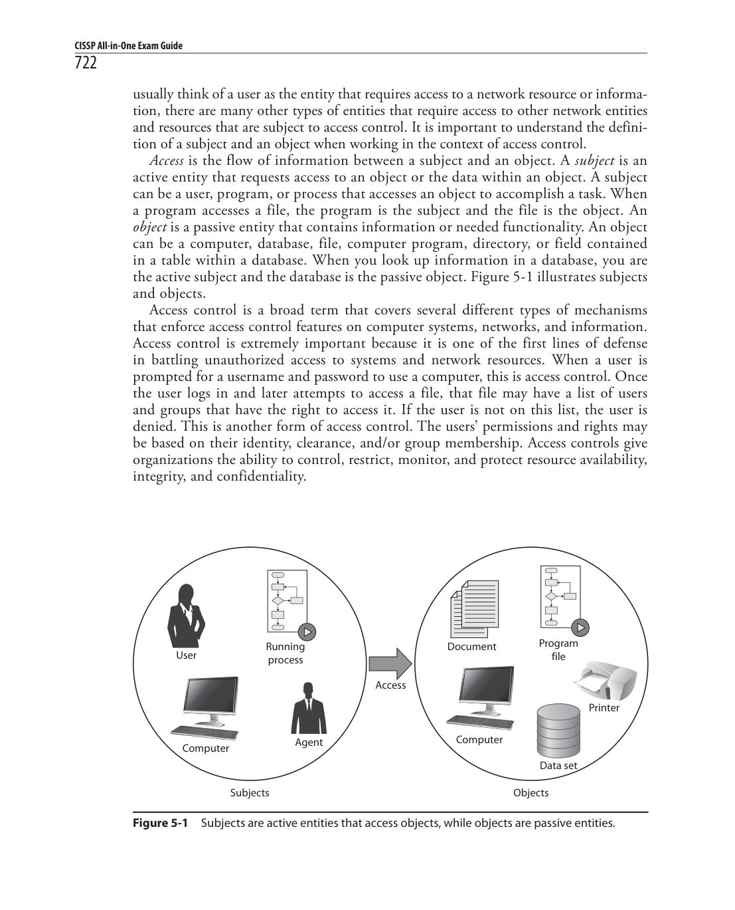
Figure 5-1Subjects are active entities that access objects, while objects are passive entities.
Security Principles
The three main security principles for any type of security control are
Availability
- Integrity
- Confidentiality
- These principles, which were touched upon in Chapter 1, will be a running theme throughout this book because each core subject of each chapter approaches these principles in a unique way. In Chapter 1, you read that security management procedures include identifying threats that can negatively affect the availability, integrity, and confidentiality of the company’s assets and finding cost-effective countermeasures that will protect them. This chapter looks at the ways the three principles can be affected and protected through access control methodologies and technologies. Every control that is used in computer and information security provides at least one of these security principles. It is critical that security professionals understand all of the possible ways these principles can be provided and circumvented.
Availability
Information, systems, and resources must be available to users in a timely manner so productivity will not be affected. Most information must be accessible and available to users when requested so they can carry out tasks and fulfill their responsibilities. Accessing information does not seem that important until it is inaccessible. Administrators experience this when a file server goes offline or a highly used database is out of service for one reason or another. Fault tolerance and recovery mechanisms are put into place to ensure the continuity of theavailabilityof resources. User productivity can be greatly affected if requested data is not readily available. Information has various attributes, such as accuracy, relevance, timeliness, and privacy. It may be extremely important for a stockbroker to have information that is accurate and timely, so he can buy and sell stocks at the right times at the right prices. The stockbroker may not necessarily care about the privacy of this information, only that it is readily available.
Integrity
Information must be accurate, complete, and protected from unauthorized modification. When a security mechanism providesintegrity, it protects data, or a resource, from being altered in an unauthorized fashion. If any type of illegitimate modification does occur, the security mechanism must alert the user or administrator in some manner. One example is when a user sends a request to her online bank account to pay her $24.56 water utility bill. The bank needs to be sure the integrity of that transaction was not altered during transmission so the user does not end up paying the utility company $240.56 instead. Integrity of data is very important. What if a confidential e-mail was sent from
the secretary of state to the president of the United States and was intercepted and altered without a security mechanism in place that disallows this or alerts the president that this message has been altered? Instead of receiving a message reading, “We would love for you and your wife to stop by for drinks tonight,” the message could be altered to say, “We have just bombed Libya.” Big difference.
Confidentiality
Confidentialityis the assurance that information is not disclosed to unauthorized individuals, programs, or processes. Some information is more sensitive than other information and requires a higher level of confidentiality. Control mechanisms need to be in place to dictate who can access data and what the subject can do with it once they have accessed it. These activities need to be controlled, audited, and monitored. Examples of information that could be considered confidential are health records, financial account information, criminal records, source code, trade secrets, and military tactical plans. Some security mechanisms that would provide confidentiality are encryption, logical and physical access controls, transmission protocols, database views, and controlled traffic flow. It is important for a company to identify the data that must be classified so the company can ensure that the top priority of security protects this information and keeps it confidential. If this information is not singled out, too much time and money can be spent on implementing the same level of security for critical and mundane information alike. It may be necessary to configure virtual private networks (VPNs) between organizations and use the IPsec encryption protocol to encrypt all messages passed when communicating about trade secrets, sharing customer information, or making financial transactions. This takes a certain amount of hardware, labor, funds, and overhead. The same security precautions are not necessary when communicating that today’s special in the cafeteria is liver and onions with a roll on the side. So, the first step in protecting data’s confidentiality is to identify which information is sensitive and to what degree, and then implement security mechanisms to protect it properly. Different security mechanisms can supply different degrees of availability, integrity, and confidentiality. The environment, the classification of the data that is to be protected, and the security goals must be evaluated to ensure the proper security mechanisms are bought and put into place. Many corporations have wasted a lot of time and money not following these steps and instead buying the new “gee whiz” product that recently hit the market.
Identification, Authentication,
Authorization, and Accountability
For a user to be able to access a resource, he first must prove he is who he claims to be, has the necessary credentials, and has been given the necessary rights or privileges to perform the actions he is requesting. Once these steps are completed successfully, the user can access and use network resources; however, it is necessary to track the user’s activities and enforce accountability for his actions.Identificationdescribes a method by which
a subject (user, program, or process) claims to have a specific identity (name, account number, or e-mail address). Identification can be provided with the use of a username or account number. To be properlyauthenticated, the subject is usually required to provide a second piece to the credential set. This piece could be a password, passphrase, cryptographic key, personal identification number (PIN), anatomical attribute, or token. These two credential items are compared to information that has been previously stored for this subject. If these credentials match the stored information, the subject is authenticated. But we are not done yet. Once the subject provides its credentials and is properly authenticated, the system it is trying to access needs to determine if this subject has been given the necessary rights and privileges to carry out the requested actions. The system will look at some type of access control matrix or compare security labels to verify that this subject may indeed access the requested resource and perform the actions it is attempting. If the system determines that the subject may access the resource, itauthorizesthe subject. Although identification, authentication, authorization, and accountability have close and complementary definitions, each has distinct functions that fulfill a specific requirement in the process of access control. A user may be properly identified and authenticated to the network, but he may not have the authorization to access the files on the file server. On the other hand, a user may be authorized to access the files on the file server, but until she is properly identified and authenticated, those resources are out of reach. Figure 5-2 illustrates the four steps that must happen for a subject to access an object.
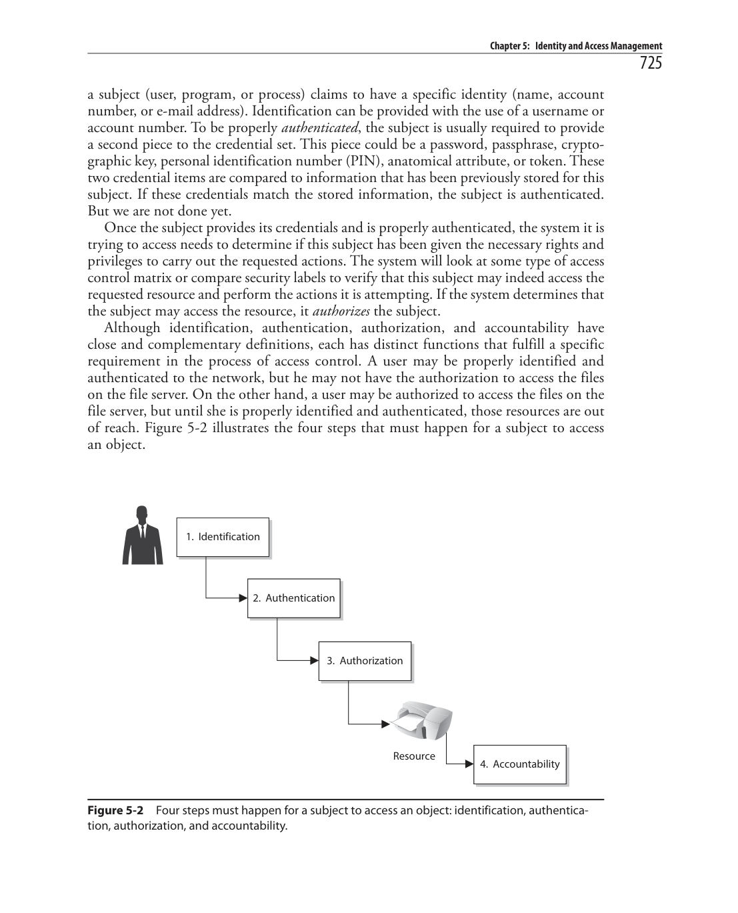
Figure 5-2Four steps must happen for a subject to access an object: identification, authentica-
The subject needs to be held accountable for the actions taken within a system or domain. The only way to ensure accountability is if the subject is uniquely identified and the subject’s actions are recorded.
Race Condition
Arace conditionis when processes carry out their tasks on a shared resource in an incorrect order. A race condition is possible when two or more processes use a shared resource, as in data within a variable. It is important that the processes carry out their functionality in the correct sequence. If process 2 carried out its task on the data before process 1, the result would be much different than if process 1 carried out its tasks on the data before process 2. In software, when the authentication and authorization steps are split into two functions, there is a possibility an attacker could use a race condition to force the authorization step to be completedbeforethe authentication step. This would be a flaw in the software that the attacker has figured out how to exploit. A race condition occurs when two or more processes use the same resource and the sequences of steps within the software can be carried out in an improper order, something that can drastically affect the output. So, an attacker can force the authorization step to take place before the authentication step and gain unauthorized access to a resource.
Logical access controlsare technical tools used for identification, authentication, authorization, and accountability. They are software components that enforce access control measures for systems, programs, processes, and information. The logical access controls can be embedded within operating systems, applications, add-on security packages, or database and telecommunication management systems. It can be challenging to synchronize all access controls and ensure all vulnerabilities are covered without producing overlaps of functionality. However, if it were easy, security professionals would not be getting paid the big bucks!
The words “logical” and “technical” can be used interchangeably in this context. It is conceivable that the CISSP exam would refer to logical and technical controls interchangeably. Anindividual’sidentitymustbeverifiedduringtheauthenticationprocess. Authentication usually involves a two-step process: entering public information (a username, employee number, account number, or department ID), and then entering private information (a static password, smart token, cognitive password, one-time password, or PIN). Entering public information is the identification step, while entering private information is the authentication step of the two-step process. Each technique used for identification and authentication has its pros and cons. Each should be properly evaluated to determine the right mechanism for the correct environment.
Identification and Authentication
Once a person has been identified through the user ID or a similar value, she must be authenticated, which means she must prove she is who she says she is. Three general factors can be used for authentication:something a person knows,something a person has, and something a person is. These factors are also commonly called authentication by knowledge, authentication by ownership, and authentication by characteristic.
One-to-One and One-to-Many
Verification 1:1is the measurement of an identity against a single claimed identity. The conceptual question is, “Is this person who he claims to be?” So if Bob provides his identity and credential set, this information is compared to the data kept in an authentication database. If they match, we know that it is really Bob. If the identification is 1:N (many), the measurement of a single identity is compared against multiple identities. The conceptual question is, “Who is this person?” An example is if fingerprints were found at a crime scene, the cops would run them through their database to identify the suspect.
Something a person knows (authentication by knowledge) can be, for example, a password, PIN, mother’s maiden name, or the combination to a lock. Authenticating a person by something that she knows is usually the least expensive method to implement. The downside to this method is that another person may acquire this knowledge and gain unauthorized access to a resource. Something a person has (authentication by ownership) can be a key, swipe card, access card, or badge. This method is common for accessing facilities, but could also be used to access sensitive areas or to authenticate systems. A downside to this method is that the item can be lost or stolen, which could result in unauthorized access. Something specific to a person (authentication by characteristic) becomes a bit more interesting. This is not based on whether the person is a Republican, a Martian, or a moron—it is based on a physical attribute. Authenticating a person’s identity based on a unique physical attribute is referred to as biometrics. (For more information, see the upcoming section, “Biometrics.”) Strong authenticationcontains two or all of these three methods: something a person knows, has, or is. Using a biometric system by itself does not provide strong authentication because it provides only one out of the three methods. Biometrics supplies what a personis, not what a person knows or has. For a strong authentication process to be in place, a biometric system needs to be coupled with a mechanism that checks for one of the other two methods. For example, many times the person has to type a PIN into a keypad before the biometric scan is performed. This satisfies the “what the person knows” category. Conversely, the person could be required to swipe a magnetic card through a reader prior to the biometric scan. This would satisfy the “what the person has” category. Whatever identification system is used, for strong authentication to be in the process, it must include multiple factors.
Strong authentication is also sometimes referred to asmultifactor authentication, which just means that more than one authentication method is used.Three-factor authenticationis possible, which includes all authentication approaches. Identity is a complicated concept with many varied nuances, ranging from the philosophical to the practical. A person can have multiple digital identities. For example, a user could be JPublic in a Windows domain environment, JohnP on a Unix server, JohnPublic on the mainframe, JJP in instant messaging, JohnCPublic in the certification authority, and JohnnyPub on Facebook. If a company would want to centralize all of its access control, these various identity names for the same person may cause the security administrator undue stress. Creating or issuing secure identities should include three key aspects: uniqueness, nondescriptive, and issuance. The first,uniqueness, refers to the identifiers that are specific to an individual, meaning every user must have a unique ID for accountability. Things like fingerprints and retina scans can be considered unique elements in determining identity. Nondescriptivemeans that neither piece of the credential set should indicate the purpose of that account. For example, a user ID should not be “administrator,” “backup_operator,” or “CEO.” The third key aspect in determining identity isissuance. These elements are the ones that have been provided by another authority as a means of proving identity. ID cards are a kind of security element that would be considered an issuance form of identification.
Mutual authentication is when the two communicating entities must authenticate to each other before passing data. For example, an authentication server may be required to authenticate to a user’s system before allowing data to flow back and forth. While most of this chapter deals with user authentication, it is important to realize system-based authentication is possible also. Computers and devices can be identified, authenticated, monitored, and controlled based upon their hardware addresses (media access control) and/or Internet Protocol (IP) addresses. Networks may have network access control (NAC) technology that authenticates systems before they are allowed access to the network. Every network device has a hardware address that is integrated into its network interface card (NIC) and a software-based address (IP) that either is assigned by a DHCP server or locally configured.
Identification Component Requirements
When issuing identification values to users, the following should be in place:
Each value should be unique, for user accountability.
- A standard naming scheme should be followed.
- The value should be nondescriptive of the user’s position or tasks.
- The value should not be shared between users.
In technology there are overlapping acronyms. In the CISSP exam you will run into at least three different MAC acronyms.Media access control= data link layer functionality and address type within a network protocol stack.Mandatory access control= access control model integrated in software used to control subject-to-object access functions through the use of clearance, classifications, and labels.Message authentication code= cryptographic function that uses a hashing algorithm and symmetric key for data integrity and system origin functions. The CISSP exam does not use acronyms by themselves, but spells the terms out, so this should not be a problem on the exam.
Access Control Review
The following is a review of the basic concepts in access control:
Identification:
Subjects supplying identification information
- Username, user ID, account number
- Authentication:
Verifying the identification information
- Passphrase, PIN value, thumbprint, smart card, one-time password
- Authorization:
Using the identity of the subject together with other criteria to make a
- determination of operations that a subject can carry out on objects
“I know who you are, now what am I going to allow you to do?”
- Accountability:
Audit logs and monitoring to track subject activities with objects
Identity Management
Identity managementis a broad and loaded term that encompasses the use of different products to identify, authenticate, and authorize users through automated means. To many people, the term also includes user account management, access control, password management, single sign-on (SSO) functionality, managing rights and permissions for
user accounts, and auditing and monitoring all of these items. The reason that individuals, and companies, have different definitions and perspectives of identity management (IdM) is because it is so large and encompasses so many different technologies and processes. Remember the story of the three blind men who are trying to describe an elephant? One blind man feels the tail and announces, based on his limited experience, that the elephant is like a rope. Another blind man feels the trunk and describes the elephant as a tree branch. Yet another describes it as a pillar after feeling a leg. This is because each man cannot see or comprehend the whole of the large creature—just the piece he is familiar with and knows about. This analogy can be applied to IdM because it is so large and contains so many components that many people may not comprehend the whole—only the component they work with and understand. It is important for security professionals to understand not only the whole of IdM, but also the technologies that make up a full enterprise IdM solution. IdM requires management of uniquely identified entities, their attributes, credentials, and entitlements. IdM allows organizations to create and manage digital identities’ life cycles (create, maintain, terminate) in a timely and automated fashion. The enterprise IdM must meet business needs and scale from internally facing systems to externally facing systems. In this section, we will be covering many of these technologies and how they work together. Selling identity management products is now a flourishing market that focuses on reducingadministrativecosts,increasingsecurity,meetingregulatorycompliance, and improving upon service levels throughout enterprises. The continual increase in complexity and diversity of networked environments only increases the complexity of keeping track of who can access what and when. Organizations have different types of applications, network operating systems, databases, enterprise resource management (ERM) systems, customer relationship management (CRM) systems, directories, and mainframes—all used for different business purposes. Then the organizations have partners, contractors, consultants, employees, and temporary employees. (Figure 5-3 actually provides a simplistic view of most environments.) Users usually access several different types of systems throughout their daily tasks, which makes controlling access and providing the necessary level of protection on different data types difficult and full of obstacles. This complexity usually results in unforeseen and unidentified holes in asset protection, overlapping and contradictory controls, and policy and regulation noncompliance. It is the goal of identity management technologies to simplify the administration of these tasks and bring order to chaos. The following are many of the common questions enterprises deal with today in controlling access to assets:
What should each user have access to?
- Who approves and allows access?
- How do the access decisions map to policies?
- Do former employees still have access?
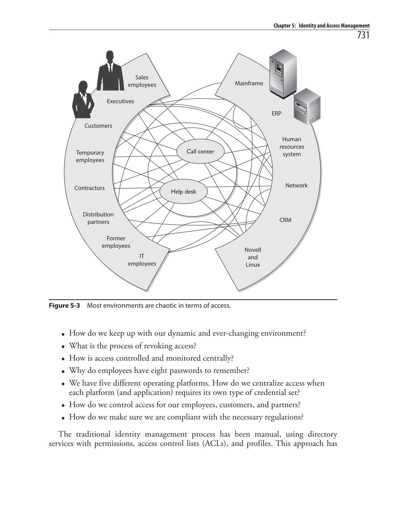
Figure 5-3Most environments are chaotic in terms of access.
How do we keep up with our dynamic and ever-changing environment?
- What is the process of revoking access?
- How is access controlled and monitored centrally?
- Why do employees have eight passwords to remember?
- We have five different operating platforms. How do we centralize access when
- each platform (and application) requires its own type of credential set?
How do we control access for our employees, customers, and partners?
- How do we make sure we are compliant with the necessary regulations?
- The traditional identity management process has been manual, using directory services with permissions, access control lists (ACLs), and profiles. This approach has
proven incapable of keeping up with complex demands and thus has been replaced with automated applications rich in functionality that work together to create an IdM infrastructure. The main goals of IdM technologies are to streamline the management of identity, authentication, authorization, and the auditing of subjects on multiple systems throughout the enterprise. The sheer diversity of a heterogeneous enterprise makes proper implementation of IdM a huge undertaking. Many identity management solutions and products are available in the marketplace. For the CISSP exam, the following are the types of technologies you should be awareof:
Directories
- Web access management
- Password management
- Legacy single sign-on
- Account management
- Profile update
- DirectoriesMost enterprises have some type of directory that contains information pertaining to the company’s network resources and users. Most directories follow a hierarchical database format, based on the X.500 standard, and a type of protocol, as in Lightweight Directory Access Protocol (LDAP), that allows subjects and applications to interact with the directory. Applications can request information about a particular user by making an LDAP request to the directory, and users can request information about a specific resource by using a similar request. The objects within the directory are managed by a directory service. Thedirectory serviceallowsanadministratortoconfigureandmanagehowidentification, authentication, authorization, and access control take place within the network and on individual systems. The objects within the directory are labeled and identified with namespaces. In a Windows environment, when you log in, you are logging in to a domain controller (DC), which has a hierarchical directory in its database. The database is running a directory service (Active Directory), which organizes the network resources and carries out user access control functionality. So once you successfully authenticate to the DC, certain network resources will be available to you (print service, file server, e-mail server, and so on) as dictated by the configuration of AD. How does the directory service keep all of these entities organized? By using namespaces. Each directory service has a way of identifying and naming the objects they will manage. In databases based on the X.500 standard that are accessed by LDAP, the directory service assigns distinguished names (DNs) to each object. Each DN represents a collection of attributes about a specific object and is stored in the directory as an entry.
In the following example, the DN is made up of a common name (cn) and domain components (dc). Since this is a hierarchical directory, .com is the top, LogicalSecurity is one step down from .com, and Shon is at the bottom.
This is a very simplistic example. Companies usually have large trees (directories) containing many levels and objects to represent different departments, roles, users, and resources. A directory service manages the entries and data in the directory and also enforces the configured security policy by carrying out access control and identity management functions. For example, when you log in to the DC, the directory service (AD) will determine what resources you can and cannot access on the network.
We touch on directory services again in the “Directory Services” section of this chapter.
So are there any problems with using a directory product for identity management and access control? Yes, there’s always something. Many legacy devices and applications cannot be managed by the directory service because they were not built with the necessary client software. The legacy entities must be managed through their inherited management software. This means that most networks have subjects, services, and resources that can be listed in a directory and controlled centrally by an administrator through the use of a directory service. Then there are legacy applications and devices that the administrator must configure and manage individually.
Directories’ Role in Identity ManagementA directory used for IdM is specialized database software that has been optimized for reading and searching operations. It is the main component of an identity management solution. This is because all resource information, users’ attributes, authorization profiles, roles, access control policies, and more are stored in this one location. When other IdM software applications need to carry out their functions (authorization, access control,
assigning permissions), they now have a centralized location for all of the information they need. As an analogy, let’s say Bob is a store clerk and you enter his store to purchase alcohol. Instead of having to find a picture of you somewhere to validate your identity, go to another place to find your birth certificate to obtain your true birth date, and find proof of which state you are registered in, Bob can look in one place—your driver’s license. The directory works in the same way. Some IdM applications may need to know a user’s authorization rights, role, employee status, or clearance level, so instead of this application having to make requests to several databases and other applications, it makes its request to this one directory. A lot of the information stored in an IdM directory is scattered throughout the enterprise. User attribute information (employee status, job description, department, and so on) is usually stored in the HR database, authentication information could be in a Kerberos server, role and group identification information might be in a SQL database, and resource-oriented authentication information may be stored in Active Directory on a domain controller. These are commonly referred to as identity stores and are located in different places on the network. Something nifty that many identity management products do is create meta-directories or virtual directories. Ameta-directorygathers the necessary information from multiple sources and stores it in one central directory. This provides a unified view of all users’ digital identity information throughout the enterprise. The meta-directory synchronizes itself with all of the identity stores periodically to ensure the most up-to-date information is being used by all applications and IdM components within the enterprise.
Organizing All of This Stuff
In a database directory based on the X.500 standard, the following rules are used for object organization:
The directory has a tree structure to organize the entries using a parent-child
- configuration.
Each entry has a unique name made up of attributes of a specific object.
- The attributes used in the directory are dictated by the defined schema.
- The unique identifiers are called distinguished names.
- The schema describes the directory structure and what names can be used within the directory, among other things. The following diagram shows how an object
(Kathy Conlon) can have the attributes of ou=General, ou=NCTSW, ou=WNY, ou=locations, ou=Navy, ou=DoD, ou=U.S. Government, and C=US.
that OU stands for organizational unit. OUs are used as containers of other similar OUs, users, and resources. They provide the parent-child (sometimes called tree-leaf ) organization structure.
Avirtual directoryplays the same role and can be used instead of a meta-directory. The difference between the two is that the meta-directory physically has the identity data in its directory, whereas a virtual directory does not and points to where the actual data resides. When an IdM component makes a call to a virtual directory to gather identity information on a user, the virtual directory will point to where the information actually lives. Figure 5-4 illustrates a central LDAP directory that is used by the IdM services: access management, provisioning, and identity management. When one of these services
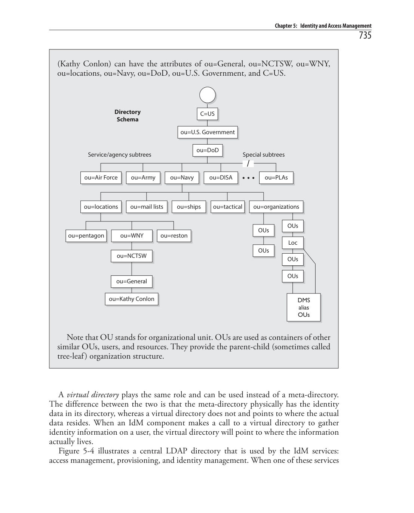
Diagram (p. 769)
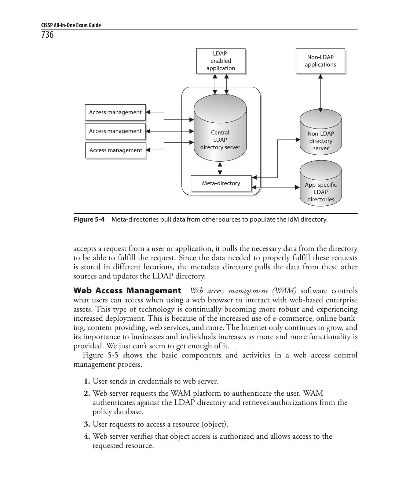
Figure 5-4Meta-directories pull data from other sources to populate the IdM directory.
accepts a request from a user or application, it pulls the necessary data from the directory to be able to fulfill the request. Since the data needed to properly fulfill these requests is stored in different locations, the metadata directory pulls the data from these other sources and updates the LDAP directory.
Web Access ManagementWeb access management (WAM)software controls what users can access when using a web browser to interact with web-based enterprise assets. This type of technology is continually becoming more robust and experiencing increased deployment. This is because of the increased use of e-commerce, online banking, content providing, web services, and more. The Internet only continues to grow, and its importance to businesses and individuals increases as more and more functionality is provided. We just can’t seem to get enough of it. Figure 5-5 shows the basic components and activities in a web access control management process.
1.User sends in credentials to web server. 2.Web server requests the WAM platform to authenticate the user. WAM authenticates against the LDAP directory and retrieves authorizations from the policy database. 3.User requests to access a resource (object). 4.Web server verifies that object access is authorized and allows access to the requested resource.
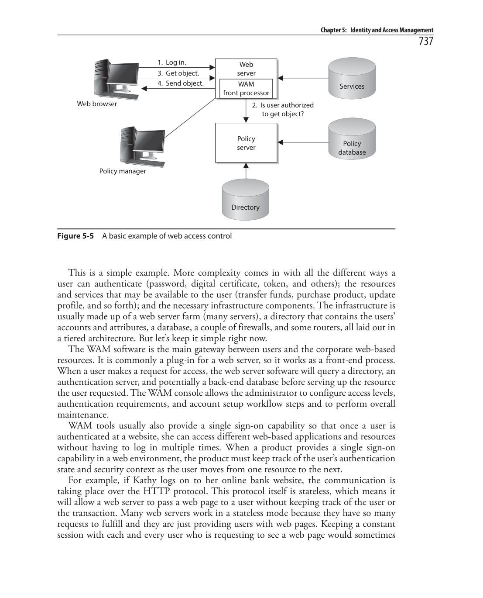
Figure 5-5A basic example of web access control
This is a simple example. More complexity comes in with all the different ways a user can authenticate (password, digital certificate, token, and others); the resources and services that may be available to the user (transfer funds, purchase product, update profile, and so forth); and the necessary infrastructure components. The infrastructure is usually made up of a web server farm (many servers), a directory that contains the users’ accounts and attributes, a database, a couple of firewalls, and some routers, all laid out in a tiered architecture. But let’s keep it simple right now. The WAM software is the main gateway between users and the corporate web-based resources. It is commonly a plug-in for a web server, so it works as a front-end process. When a user makes a request for access, the web server software will query a directory, an authentication server, and potentially a back-end database before serving up the resource the user requested. The WAM console allows the administrator to configure access levels, authentication requirements, and account setup workflow steps and to perform overall maintenance. WAM tools usually also provide a single sign-on capability so that once a user is authenticated at a website, she can access different web-based applications and resources without having to log in multiple times. When a product provides a single sign-on capability in a web environment, the product must keep track of the user’s authentication state and security context as the user moves from one resource to the next. For example, if Kathy logs on to her online bank website, the communication is taking place over the HTTP protocol. This protocol itself is stateless, which means it will allow a web server to pass a web page to a user without keeping track of the user or the transaction. Many web servers work in a stateless mode because they have so many requests to fulfill and they are just providing users with web pages. Keeping a constant session with each and every user who is requesting to see a web page would sometimes
needlessly tie up the web server’s resources. When a user has to log on to a website is when “keeping the user’s state” is required and a continuous session is needed. When Kathy first goes to her bank’s website, she is viewing publicly available data that does not require her to authenticate before viewing. A constant session is not being kept by the web server, thus it is working in a stateless manner. Once she clicks Access My Account, the web server sets up a secure connection (TLS) with her browser and requests her credentials. After she is authenticated, the web server sends a cookie (small text file) that indicates she has authenticated properly and the type of access she should be allowed. When Kathy requests to move from her savings account to her checking account, the web server will assess the cookie on Kathy’s web browser to see if she has the rights to access this new resource. The web server continues to check this cookie during Kathy’s session to ensure no one has hijacked the session and that the web server is continually communicating with Kathy’s system and not someone else’s. The web server continually asks Kathy’s web browser to prove she has been authenticated, which the browser does by providing the cookie information. (The cookie information could include her password, account number, security level, browsing habits, and/or personalization information.) As long as Kathy is authenticated, the web server software will keep track of each of her requests, log her events, and make changes that she requests that can take place in her security context. Security context is the authorization level she is assigned based on her permissions, entitlements, and access rights. Once Kathy ends the session, the cookie is usually erased from the web browser’s memory and the web server no longer keeps this connection open or collects session state information on this user.
A cookie can be in the format of a text file stored on the user’s hard drive (permanent) or it can be only held in memory (session). If the cookie contains any type of sensitive information, then it should only be held in memory and be erased once the session has completed. As an analogy, let’s say Indira is following you in a mall as you are shopping. She is marking down what you purchase, where you go, and the requests you make. Indira knows everything about your actions; she documents them in a log and remembers them as you continue. (Indira is keeping state information on you and your activities.) You can have access to all of these stores if every 15 minutes you show Indira a piece of paper that she gave to you. If you fail to show Indira the piece of paper at the necessary interval, she will push a button and all stores will be locked—you no longer have access to the stores, she no longer collects information about you, and she leaves and forgets all about you. Since you are no longer able to access any sensitive objects (store merchandise), Indira doesn’t need to keep track of you and what you are doing. As long as the web server sends the cookie to the web browser, Kathy does not have to provide credentials as she asks for different resources. This is what single sign-on is. You only have to provide your credentials once, and the continual validation that you have the necessary cookie will allow you to go from one resource to another. If you end your session with the web server and need to interact with it again, you must re-authenticate, a new cookie will be sent to your browser, and it starts all over again.
We will cover specific single sign-on technologies later in this chapter along with their security issues.
So the WAM product allows an administrator to configure and control access to internal resources. This type of access control is commonly put in place to control external entities requesting access. The product may work on a single web server or a server farm.
Authentication
Let’s now take a look at the various methods that are commonly used to verify that users are who they claim to be. This is commonly done these days through the use of passwords, personal identification numbers (PINs), biometrics (e.g., fingerprint scans), and access tokens. Each has specific characteristics that you must understand in order to pass the CISSP exam. Let’s start with the most common of all authentication methods: the venerable password.
Password Management
We cover password requirements, security issues, and best practices later in this chapter. At this point, you need to understand how password management can work within an IdM environment. Help-desk workers and administrators commonly complain about the amount of time they have to spend resetting passwords when users forget them. Another issue is the number of different passwords the users are required to remember for the different platforms within the network. When a password changes, an administrator must connect directly to that management software of the specific platform and change the password value. This may not seem like much of a hassle, but if an organization has 4,000 users, seven different platforms, and 35 different applications, the task of continually making these password modifications could require a full-time person. And who would really wantthatjob? Different types of password management technologies have been developed to get these pesky users off the backs of IT and the help desk by providing a more secure and automated password management system. The most common password management approaches are listed next:
Password synchronizationReduces the complexity of keeping up with
- different passwords for different systems.
Self-service password resetReduces help-desk call volumes by allowing users
- to reset their own passwords.
Assisted password resetReduces the resolution process for password
- issues for the help desk. This may include authentication with other types of authentication mechanisms (such as biometrics or tokens).
Password SynchronizationIf users have too many passwords they need to keep track of, they will write the passwords down on a sticky note and cleverly hide this under their keyboard or just stick it on the side of their monitor. This is certainly easier for the user, but not so great for security. Password synchronization technologies can allow a user to maintain just one password across multiple systems. The product will synchronize the password to other systems and applications, which happens transparently to the user. The goal is to require the user to memorize only one password, which enables the organization to enforce more robust and secure password requirements. If a user needs to remember only one password, he is more likely to not have a problem with longer, more complex strings of values. This reduces help-desk call volume and allows the administrator to keep her sanity for just a little bit longer. One criticism of this approach is that since only one password is used to access different resources, now the hacker only has to figure out one credential set to gain unauthorized access to all resources. But if the password requirements are more demanding (12 characters, no dictionary words, three symbols, uppercase and lowercase letters, and so on) and the password is changed out regularly, the balance between security and usability can be acceptable.
Some products are implemented to allow users Self-Service Password Reset to reset their own passwords. This does not mean that the users have any type of privileged permissions on the systems to allow them to change their own credentials. Instead, during the registration of a user account, the user can be asked to provide several personal questions (school graduated from, favorite teacher, favorite color, and so on) in a question-and-answer form. When the user forgets his password, he may be required to provide another authentication mechanism (smart card, token, etc.) and to answer these previously answered questions to prove his identity. Products are available that allow users to change their passwords through other means. For example, if you forgot your password, you may be asked to answer some of the questions answered during the registration process of your account. If you do this correctly, an e-mail is sent to you with a link you must click. The password management product has your identity tied to the answers you gave to the questions during your account registration process and to your e-mail address. If you do everything correctly, you are given a screen that allows you to reset your password.
The product should not ask for information that is publicly available, as in your mother’s maiden name, because anyone can find that out and attempt to identify himself as you. Assisted Password ResetSome products are created for help-desk employees who need to work with individuals when they forget their password. The help-desk employee should not know or ask the individual for her password. This would be a security risk since only the owner of the password should know the value. The help-desk employee also should not just change a password for someone calling in without authenticating
that person first. This can allow social engineering attacks where an attacker calls the help desk and indicates she is someone who she is not. If this took place, then an attacker would have a valid employee password and could gain unauthorized access to the company’s jewels. The products that provide assisted password reset functionality allow the help-desk individual to authenticate the caller before resetting the password. This authentication process is commonly performed through the question-and-answer process described in the previous section. The help-desk individual and the caller must be identified and authenticated through the password management tool before the password can be changed. Once the password is updated, the system that the user is authenticating to should require the user to change her password again. This would ensure that only she (and not she and the help-desk person) knows her password. The goal of an assisted password reset product is to reduce the cost of support calls and ensure all calls are processed in a uniform, consistent, and secure fashion. Various password management products on the market provide one or all of these functionalities. Since IdM is about streamlining identification, authentication, and access control, one of these products is typically integrated into the enterprise IdM solution.
Legacy Single Sign-OnWe will cover specific single sign-on technologies later in this chapter, but at this point we want to focus on how SSO products are commonly used as an IdM solution or as part of a larger IdM enterprise-wide solution. An SSO technology allows a user to authenticate one time and then access resources in the environment without needing to reauthenticate. This may sound the same as password synchronization, but it is not. With password synchronization, a product takes the user’s password and updates each user account on each different system and application with that one password. If Tom’s password istommy2mato, then this is the value he must type into each and every application and system he must access. In an SSO situation, Tom would send his password to one authentication system. When Tom requests to access a network application, the application will send over a request for credentials, but the SSO software will respond to the application for Tom. So in SSO environments, the SSO software intercepts the login prompts from network systems and applications and fills in the necessary identification and authentication information (that is, the username and password) for the user. Even though password synchronization and single sign-on are different technologies, they still have the same vulnerability. If an attacker uncovers a user’s credential set, she can have access to all the resources that the legitimate user may have access to. An SSO solution may also provide a bottleneck or single point of failure. If the SSO server goes down, users are unable to access network resources. This is why it’s a good idea to have some type of redundancy or fail-over technology in place. Most environments are not homogeneous in devices and applications, which makes it more difficult to have a true enterprise SSO solution. Legacy systems many times require a different type of authentication process than the SSO software can provide. So potentially 80 percent of the devices and applications may be able to interact with the SSO software and the other 20 percent will require users to authenticate to them directly.
In many of these situations, the IT department may come up with their own homemade solutions, such as using login batch scripts for the legacy systems. Are there any other downfalls with SSO you should be aware of? Well, it can be expensive to implement, especially in larger environments. Many times companies evaluate purchasing this type of solution and find out it is too cost-prohibitive. The other issue is that it would mean all of the users’ credentials for the company’s resources are stored in one location. If an attacker was able to break in to this storehouse, she could access whatever she wanted anddowhatever she wanted with the company’s assets. As always, security, functionality, and cost must be properly weighed to determine the best solution for the company.
Account ManagementAccount management is often not performed efficiently and effectively in companies today. Account management deals with creating user accounts on all systems, modifying the account privileges when necessary, and decommissioning the accounts when they are no longer needed. In most environments, the IT department creates accounts manually on the different systems, users are given excessive rights and permissions, and when an employee leaves the company, many or all of the accounts stay active. This is because a centralized account management technology has not been put into place. Account management products attempt to attack these issues by allowing an administrator to manage user accounts across multiple systems. When there are multiple directories containing user profiles or access information, the account management software allows for replication between the directories to ensure each contains the same up-to-date information. Now let’s think about how accounts are set up. In many environments, when a new user needs an account, a network administrator will set up the account(s) and provide some type of privileges and permissions. But how would the network administrator know what resources this new user should have access to and what permissions should be assigned to the new account? In most situations, he doesn’t—he just wings it. This is how users end up with too much access to too much stuff. What should take place instead is implementation of a workflow process that allows for a request for a new user account. This request is usually approved, by the employee’s manager, and the accounts are automatically set up on the systems, or a ticket is generated for the technical staff to set up the account(s). If there is a request for a change to the permissions on the account or if an account needs to be decommissioned, it goes through the same process. The request goes to a manager (or whoever is delegated with this approval task), the manager approves it, and the changes to the various accounts take place. The automated workflow component is common in account management products that provide IdM solutions. Not only does this reduce the potential errors that can take place in account management, but each step (including account approval) is logged and tracked. This allows for accountability and provides documentation for use in backtracking if something goes wrong. It also helps ensure that only the necessary amount of access is provided to the account and that there are no “orphaned” accounts still active when employees leave the company. In addition, these types of
processes are the kind your auditors will be looking for—and we always want to make the auditors happy!
These types of account management products are commonly used to set up and maintain internal accounts. Web access control management is used mainly for external users.
As with SSO products, enterprise account management products are usually expensive and can take years to properly roll out across the enterprise. Regulatory requirements, however, are making more and more companies spend the money for these types of solutions—which the vendors love!
ProvisioningLet’s review what we know and then build upon these concepts. Most IdM solutions pull user information from the HR database, because the data is already collected and held in one place and is constantly updated as employees’ or contractors’ statuses change. So user information will be copied from the HR database (referred to as theauthoritative source) into a directory, which we covered in an earlier section. When a new employee is hired, the employee’s information, along with his manager’s name, is pulled from the HR database into the directory. The employee’s manager is automatically sent an e-mail asking for approval of this new account. After the manager approves, the necessary accounts are set up on the required systems. Over time, this new user will commonly have different identity attributes, which will be used for authentication purposes, stored in different systems in the network. When a user requests access to a resource, all of his identity data has already been copied from other identity stores and the HR database and held in this centralized directory (sometimes called theidentity repository). This may be a meta-directory or a virtual directory. The access control component of the IdM system will compare the user’s request to the IdM access control policy and ensure the user has the necessary identification and authentication pieces in place before allowing access to the resource. When this employee parts with the company for any reason, this new information goes from the HR database to the directory. An e-mail is automatically generated and sent to the manager to allow this account to be decommissioned. Once this is approved, the account management software disables all of the accounts that had been set up for this user. This example illustrates user account management and provisioning, which is the lifecycle management of identity components. Why do we have to worry about all of this identification and authentication stuff? Because users need access to resources to carry out their jobs. But what do they need access to, and at what level of access? This question is actually a very difficult one in our distributed, heterogeneous, and somewhat chaotic environments today. Too much access to resources opens the company up to potential fraud and other risks. Too little access means the user cannot do his job. So we are required to get it just right.
Authoritative System of Record
The authoritative source is the “system of record,” or the location where identity information originates and is maintained. It should have the most up-to-date and reliable identity information. Anauthoritative system of record (ASOR)is a hierarchical tree-like structure system that tracks subjects and their authorization chains. Organizations need an automated and reliable way of detecting and managing unusual or suspicious changes to user accounts and a method of collecting this type of data through extensive auditing capabilities. The ASOR should contain the subject’s name, associated accounts, authorization history per account, and provision details. This type of workflow and accounting is becoming more in demand for regulatory compliance because it allows auditors to understand how access is being centrally controlled within an environment.
User provisioningrefers to the creation, maintenance, and deactivation of user objects and attributes as they exist in one or more systems, directories, or applications, in response to business processes. User provisioning software may include one or more of the following components: change propagation, self-service workflow, consolidated user administration, delegated user administration, and federated change control. User objects may represent employees, contractors, vendors, partners, customers, or other recipients of a service. Services may include e-mail, access to a database, access to a file server or database, and so on. Great. So we create, maintain, and deactivate accounts as required based on business needs. What else does this mean? The creation of the account also is the creation of the access rights to company assets. It is through provisioning that users either are given access or have access taken away. Throughout the life cycle of a user identity, access rights, permissions, and privileges should change as needed in a clearly understood, automated, and audited process. By now, you should be able to connect how these different technologies work together to provide an organization with streamlined IdM. Directories are built to contain user and resource information. A metadata directory pulls identity information that resides in different places within the network to allow IdM processes to get the needed data for their tasks from this one location. User management tools allow for automated control of user identities through their lifetimes and can provide provisioning. A password management tool is in place so that productivity is not slowed down by a forgotten password. A single sign-on technology requires internal users to only authenticate once for enterprise access. Web access management tools provide a single sign-on service to external users and control access to web-based resources. Figure 5-6 provides a visual example of how many of these components work together.
Profile UpdateMost companies do not just contain the information “Bob Smith” for a user and make all access decisions based on this data. There can be a plethora of information on a user that is captured (e-mail address, home address, phone number, and
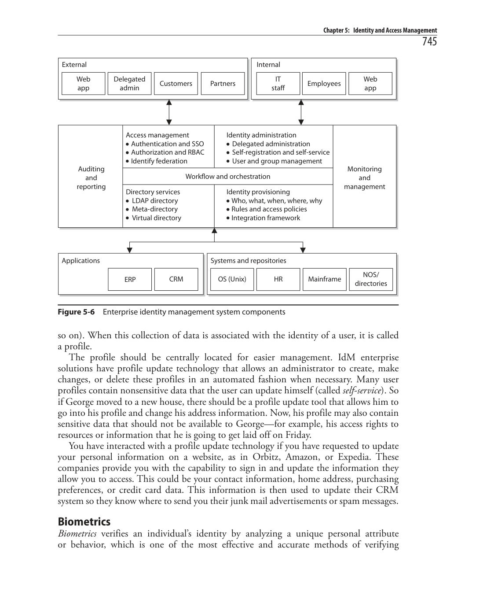
Figure 5-6Enterprise identity management system components
so on). When this collection of data is associated with the identity of a user, it is called a profile. The profile should be centrally located for easier management. IdM enterprise solutions have profile update technology that allows an administrator to create, make changes, or delete these profiles in an automated fashion when necessary. Many user profiles contain nonsensitive data that the user can update himself (calledself-service). So if George moved to a new house, there should be a profile update tool that allows him to go into his profile and change his address information. Now, his profile may also contain sensitive data that should not be available to George—for example, his access rights to resources or information that he is going to get laid off on Friday. You have interacted with a profile update technology if you have requested to update your personal information on a website, as in Orbitz, Amazon, or Expedia. These companies provide you with the capability to sign in and update the information they allow you to access. This could be your contact information, home address, purchasing preferences, or credit card data. This information is then used to update their CRM system so they know where to send you their junk mail advertisements or spam messages.
Biometrics
Biometricsverifies an individual’s identity by analyzing a unique personal attribute or behavior, which is one of the most effective and accurate methods of verifying
identification. Biometrics is a very sophisticated technology; thus, it is much more expensive and complex than the other types of identity verification processes. A biometric system can make authentication decisions based on an individual’s behavior, as in signature dynamics, but these can change over time and possibly be forged. Biometric systems that base authentication decisions on physical attributes (such as iris, retina, or fingerprint) provide more accuracy because physical attributes typically don’t change, absent some disfiguring injury, and are harder to impersonate. Biometrics is typically broken up into two different categories. The first is the physiological. These are traits that are physical attributes unique to a specific individual. Fingerprints are a common example of a physiological trait used in biometric systems. The second category of biometrics is known as behavioral. This is based on a characteristic of an individual to confirm his identity. An example is signature dynamics. Physiological is “what you are” and behavioral is “what you do.” A biometric system scans a person’s physiological attribute or behavioral trait and compares it to a record created in an earlier enrollment process. Because this system inspects the grooves of a person’s fingerprint, the pattern of someone’s retina, or the pitches of someone’s voice, it must be extremely sensitive. The system must perform accurate and repeatable measurements of anatomical or behavioral characteristics. This type of sensitivity can easily cause false positives or false negatives. The system must be calibrated so these false positives and false negatives occur infrequently and the results are as accurate as possible. When a biometric system rejects an authorized individual, it is called aType I error (false rejection rate [FRR]). When the system accepts impostors who should be rejected, it is called aType II error(false acceptance rate [FAR]). The goal is to obtain low numbers for each type of error, but Type II errors are the most dangerous and thus the most important to avoid. When comparing different biometric systems, many different variables are used, but one of the most important metrics is thecrossover error rate (CER). This rating is stated as a percentage and represents the point at which the false rejection rate equals the false acceptance rate. This rating is the most important measurement when determining the system’s accuracy. A biometric system that delivers a CER of 3 will be more accurate than a system that delivers a CER of 4.
Crossover error rate (CER) is also called equal error rate (EER).
What is the purpose of this CER value anyway? Using the CER as an impartial judgment of a biometric system helps create standards by which products from different vendors can be fairly judged and evaluated. If you are going to buy a biometric system, you need a way to compare the accuracy between different systems. You can just go by the different vendors’ marketing material (they all say they are the best), or you can compare the different CER values of the products to see which one really is more accurate than
the others. It is also a way to keep the vendors honest. One vendor may tell you, “We have absolutely no Type II errors.” This would mean that their product would not allow any imposters to be improperly authenticated. But what if you asked the vendor how many Type I errors their product had and she sheepishly replied, “We average around 90 percent of Type I errors.” That would mean that 90 percent of the authentication attempts would be rejected, which would negatively affect your employees’ productivity. So you can ask about their CER value, which represents when the Type I and Type II errors are equal, to give you a better understanding of the product’s overall accuracy. Individual environments have specific security level requirements, which will dictate how many Type I and Type II errors are acceptable. For example, a military institution that is very concerned about confidentiality would be prepared to accept a certain rate of Type I errors, but would absolutely not accept any false accepts (Type II errors). Because all biometric systems can be calibrated, if you lower the Type II error rate by adjusting the system’s sensitivity, it will result in an increase in Type I errors. The military institution would obviously calibrate the biometric system to lower the Type II errors to zero, but that would mean it would have to accept a higher rate of Type I errors. Biometrics is the most expensive method of verifying a person’s identity, and it faces other barriers to becoming widely accepted. These include user acceptance, enrollment timeframe, and throughput. Many times, people are reluctant to let a machine read the pattern of their retina or scan the geometry of their hand. This lack of enthusiasm has slowed down the widespread use of biometric systems within our society. The enrollment phase requires an action to be performed several times to capture a clear and distinctive reference record. People are not particularly fond of expending this time and energy when they are used to just picking a password and quickly typing it into their console. When a person attempts to be authenticated by a biometric system, sometimes the system will request an action to be completed several times. If the system was unable to get a clear reading of an iris scan or could not capture a full voice verification print, the individual may have to repeat the action. This causes low throughput, stretches the individual’s patience, and reduces acceptability. During enrollment, the user provides the biometric data (e.g., fingerprint, voice print, or retina scan), and the biometric reader converts this data into binary values. Depending on the system, the reader may create a hash value of the biometric data, or it may encrypt the data, or do both. The biometric data then goes from the reader to a back-end authentication database where the user’s account has been created. When the user needs to later authenticate to a system, she will provide the necessary biometric data, and the binary format of this information is compared to what is in the authentication database. If they match, then the user is authenticated. In Figure 5-7, we see that biometric data can be stored on a smart card and used for authentication. Also, you might notice that the match is 95 percent instead of 100percent. Obtaining a 100 percent match each and every time is very difficult because of the level of sensitivity of the biometric systems. A smudge on the reader, oil on the person’s finger, and other small environmental issues can stand in the way of matching 100 percent. If your biometric system was calibrated so it required 100 percent matches, this would mean you would not allow any Type II errors and that users would commonly not be authenticated in a timely manner.
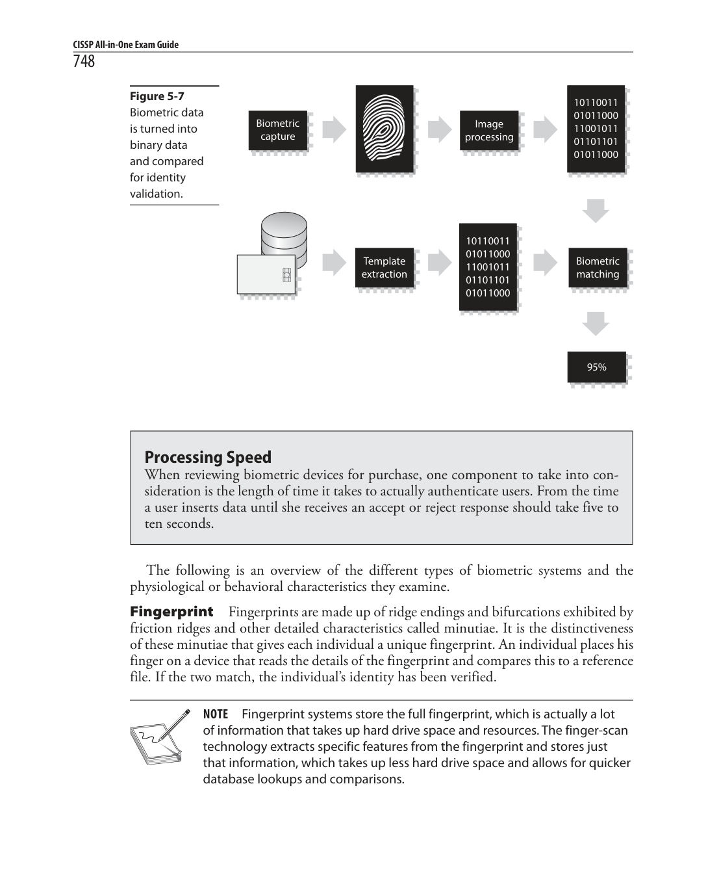
Figure 5-7
Processing Speed
When reviewing biometric devices for purchase, one component to take into consideration is the length of time it takes to actually authenticate users. From the time a user inserts data until she receives an accept or reject response should take five to ten seconds.
The following is an overview of the different types of biometric systems and the physiological or behavioral characteristics they examine.
Fingerprint Fingerprints are made up of ridge endings and bifurcations exhibited by friction ridges and other detailed characteristics called minutiae. It is the distinctiveness of these minutiae that gives each individual a unique fingerprint. An individual places his finger on a device that reads the details of the fingerprint and compares this to a reference file. If the two match, the individual’s identity has been verified.
Fingerprint systems store the full fingerprint, which is actually a lot of information that takes up hard drive space and resources. The finger-scan technology extracts specific features from the fingerprint and stores just that information, which takes up less hard drive space and allows for quicker database lookups and comparisons.
Palm ScanThe palm holds a wealth of information and has many aspects that are used to identify an individual. The palm has creases, ridges, and grooves throughout that are unique to a specific person. The palm scan also includes the fingerprints of each finger. An individual places his hand on the biometric device, which scans and captures this information. This information is compared to a reference file, and the identity is either verified or rejected.
The shape of a person’s hand (the shape, length, and width of the Hand Geometry hand and fingers) defines hand geometry. This trait differs significantly between people and is used in some biometric systems to verify identity. A person places her hand on a device that has grooves for each finger. The system compares the geometry of each finger, and the hand as a whole, to the information in a reference file to verify that person’s identity.
A system that reads a person’s retina scans the blood-vessel pattern of Retina Scan the retina on the backside of the eyeball. This pattern has shown to be extremely unique between different people. A camera is used to project a beam inside the eye and capture the pattern and compare it to a reference file recorded previously.
Retina scans are extremely invasive and involve a number of privacy issues. Since the information obtained through this scan can be used in the diagnosis of medical conditions, it could very well be considered protected health information (PHI) subject to HIPAA (see Chapter 1). Iris ScanThe iris is the colored portion of the eye that surrounds the pupil. The iris has unique patterns, rifts, colors, rings, coronas, and furrows. The uniqueness of each of these characteristics within the iris is captured by a camera and compared with the information gathered during the enrollment phase. Of the biometric systems, iris scans are the most accurate. The iris remains constant through adulthood, which reduces the type of errors that can happen during the authentication process. Sampling the iris offers more reference coordinates than any other type of biometric. Mathematically, this means it has a higher accuracy potential than any other type of biometric.
When using an iris pattern biometric system, the optical unit must be positioned so the sun does not shine into the aperture; thus, when implemented, it must have proper placement within the facility.
Signature DynamicsWhen a person writes a signature, usually they do so in the same manner and speed each time. Writing a signature produces electrical signals that can be captured by a biometric system. The physical motions performed when someone is signing a document create these electrical signals. The signals provide unique characteristics that can be used to distinguish one individual from another. Signature dynamics provides more information than a static signature, so there are more variables to verify
when confirming an individual’s identity and more assurance that this person is who he claims to be. Signature dynamics is different from a digitized signature. A digitized signature is just an electronic copy of someone’s signature and is not a biometric system that captures the speed of signing, the way the person holds the pen, and the pressure the signer exerts to generate the signature.
Keystroke DynamicsWhereas signature dynamics is a method that captures the electrical signals when a person signs a name, keystroke dynamics captures electrical signals when a person types a certain phrase. As a person types a specified phrase, the biometric system captures the speed and motions of this action. Each individual has a certain style and speed, which translate into unique signals. This type of authentication is more effective than typing in a password, because a password is easily obtainable. It is much harder to repeat a person’s typing style than it is to acquire a password.
Voice PrintPeople’s speech sounds and patterns have many subtle distinguishing differences. A biometric system that is programmed to capture a voice print and compare it to the information held in a reference file can differentiate one individual from another. During the enrollment process, an individual is asked to say several different words. Later, when this individual needs to be authenticated, the biometric system jumbles these words and presents them to the individual. The individual then repeats the sequence of words given. This technique is used so others cannot attempt to record the session and play it back in hopes of obtaining unauthorized access.
Facial ScanA system that scans a person’s face takes many attributes and characteristics into account. People have different bone structures, nose ridges, eye widths, forehead sizes, and chin shapes. These are all captured during a facial scan and compared to an earlier captured scan held within a reference record. If the information is a match, the person is positively identified.
Hand TopographyWhereas hand geometry looks at the size and width of an individual’s hand and fingers, hand topology looks at the different peaks and valleys of the hand, along with its overall shape and curvature. When an individual wants to be authenticated, she places her hand on the system. Off to one side of the system, a camera snaps a side-view picture of the hand from a different view and angle than that of systems that target hand geometry, and thus captures different data. This attribute is not unique enough to authenticate individuals by itself and is commonly used in conjunction with hand geometry. Biometric systems are not without their own sets of issues and concerns. Because they depend upon the specific and unique traits of living things, problems can arise. Living things are notorious for not remaining the same, which means they won’t present static biometric information for each and every login attempt. Voice recognition can be hampered by a user with a cold. Pregnancy can change the patterns of the retina. Someone could lose a finger. Or all three could happen. You just never know in this crazy world. Some biometric systems actually check for the pulsation and/or heat of a body part to make sure it is alive. So if you are planning to cut someone’s finger off or pluck out someone’s eyeball so you can authenticate yourself as a legitimate user, it may not
work. Although not specifically stated, this type of activity definitely falls outside the bounds of the CISSP ethics you will be responsible for upholding once you receive your certification.
Passwords
User identification coupled with a reusable password is the most common form of system identification and authorization mechanisms. Apasswordis a protected string of characters that is used to authenticate an individual. As stated previously, authentication factors are based on what a person knows, has, or is. A password is something the user knows. Passwords are one of the most often used authentication mechanisms employed today. It is important to ensure that the passwords are strong and properly managed.
Password PoliciesAlthough passwords are the most commonly used authentication mechanism, they are also considered one of the weakest security mechanisms available. Why? Users usually choose passwords that are easily guessed (a spouse’s name, a user’s birth date, or a dog’s name), or tell others their passwords, and many times write the passwords down on a sticky note and hide it under the keyboard. To most users, security is usually not the most important or interesting part of using their computers— except when someone hacks into their computer and steals confidential information, that is. Then security is all the rage. This is where password policies step in. If passwords are properly generated, updated, and kept secret, they can provide effective security. Password generators can be used to create passwords for users. This ensures that a user will not be using “Bob” or “Spot” for a password, but if the generator spits out “kdjasijew284802h,” the user will surely scribble it down on a piece of paper and stick it to the monitor, which defeats the whole purpose. If a password generator is going to be used, the tools should create uncomplicated, pronounceable, nondictionary words to help users remember them so they aren’t tempted to write them down. If the users can choose their own passwords, the operating system should enforce certain password requirements. The operating system can require that a password contain a certain number of characters, unrelated to the user ID, include special characters, include upperand lowercase letters, and not be easily guessable. The operating system can keep track of the passwords a specific user generates so as to ensure no passwords are reused. The users should also be forced to change their passwords periodically. All of these factors make it harder for an attacker to guess or obtain passwords within the environment. If an attacker is after a password, she can try a few different techniques:
Electronic monitoringListening to network traffic to capture information,
- especially when a user is sending her password to an authentication server. The password can be copied and reused by the attacker at another time, which is called areplay attack.
Access the password fileUsually done on the authentication server. The
- password file contains many users’ passwords and, if compromised, can be the source of a lot of damage. This file should be protected with access control mechanisms and encryption.
Brute-force attacksPerformed with tools that cycle through many possible
- character, number, and symbol combinations to uncover a password.
Dictionary attacksFiles of thousands of words are compared to the user’s
- password until a match is found.
Social engineeringAn attacker falsely convinces an individual that she has the
- necessary authorization to access specific resources.
Rainbow tableAn attacker uses a table that contains all possible passwords
- already in a hash format.
Certain techniques can be implemented to provide another layer of security for passwords and their use. After each successful logon, a message can be presented to a user indicating the date and time of the last successful logon, the location of this logon, and whether there were any unsuccessful logon attempts. This alerts the user to any suspicious activity and whether anyone has attempted to log on using his credentials. An administrator can set operating parameters that allow a certain number of failed logon attempts to be accepted before a user is locked out; this is a type ofclipping level. The user can be locked out for five minutes or a full day after the threshold (or clipping level) has been exceeded. It depends on how the administrator configures this mechanism. An audit trail can also be used to track password usage and both successful and unsuccessful logon attempts. This audit information should include the date, time, user ID, and workstation the user logged in from.
Clipping levelis an older term that just means threshold. If the number of acceptable failed login attempts is set to three, three is the threshold (clipping level) value.
A password’s lifetime should be short but practical. Forcing a user to change a password on a more frequent basis provides more assurance that the password will not be guessed by an intruder. If the lifetime is too short, however, it causes unnecessary management overhead, and users may forget which password is active. A balance between protection and practicality must be decided upon and enforced. As with many things in life, education is the key. Password requirements, protection, and generation should be addressed in security-awareness programs so users understand what is expected of them, why they should protect their passwords, and how passwords can be stolen. Users should be an extension to a security team, not the opposition.
Rainbow tables contain passwords already in their hashed format. The attacker just compares a captured hashed password with one that is listed in the table to uncover the plaintext password. This takes much less time than carrying out a dictionary or brute-force attack.
Password CheckersSeveral organizations test user-chosen passwords using tools that perform dictionary and/or brute-force attacks to detect the weak passwords. This helps make the environment as a whole less susceptible to dictionary and exhaustive attacks used to discover users’ passwords. Many times the same tools employed by an attacker to crack a password are used by a network administrator to make sure the password is strong enough. Most security tools have this dual nature. They are used by security professionals and IT staff to test for vulnerabilities within their environment in the hope of uncovering and fixing them before an attacker finds the vulnerabilities. An attacker uses the same tools to uncover vulnerabilities to exploit before the security professional can fix them. It is the never-ending cat-and-mouse game. If a tool is called apassword checker, it is used by a security professional to test the strength of a password. If a tool is called apassword cracker, it is usually used by a hacker; however, most of the time, these tools are one and the same. You need to obtain management’s approval before attempting to test (break) employees’ passwords with the intent of identifying weak passwords. Explaining you are trying to help the situation, not hurt it,afteryou have uncovered the CEO’s password is not a good situation to be in.
In most situations, if an attacker sniffs Password Hashing and Encryption your password from the network wire, she still has some work to do before she actually knows your password value because most systems hash the password with a hashing algorithm, commonly MD4 or MD5, to ensure passwords are not sent in cleartext. Although some people think the world is run by Microsoft, other types of operating systems are out there, such as Unix and Linux. These systems do not use registries and SAM databases, but contain their user passwords in a file cleverly called “shadow.” This shadow file does not contain passwords in cleartext; instead, your password is run through a hashing algorithm, and the resulting value is stored in this file. Unix-type systems zest things up by using salts in this process.Saltsare random values added to the encryption process to add more complexity and randomness. The more randomness entered into the encryption process, the harder it is for the bad guy to decrypt and uncover your password. The use of a salt means that the same password can be encrypted into several thousand different hashes. This makes it much more difficult for an adversary to attack the passwords in your system.
Many systems enable administrators to set expiration dates for Password Aging passwords, forcing users to change them at regular intervals. The system may also keep a list of the last five to ten passwords (password history) and not let the users revert to previously used passwords.
Limit Logon AttemptsA threshold can be set to allow only a certain number of unsuccessful logon attempts. After the threshold is met, the user’s account can be locked for a period of time or indefinitely, which requires an administrator to manually unlock the account. This protects against dictionary and other exhaustive attacks that continually submit credentials until the right combination of username and password is discovered.
Cognitive Password
Cognitive passwordsare factor opinion-based information used to verify an individual’s identity. A user is enrolled by answering several questions based on her life experiences. Passwords can be hard for people to remember, but that same person will not likely forget the first person they kissed, the name of their best friend in 8th grade, or their favorite cartoon character. After the enrollment process, the user can answer the questions asked of her to be authenticated instead of having to remember a password. This authentication process is best for a service the user does not use on a daily basis because it takes longer than other authentication mechanisms. This can work well for help-desk services. The user can be authenticated via cognitive means. This way, the person at the help desk can be sure he is talking to the right person, and the user in need of help does not need to remember a password that may be used once every three months.
Authentication by knowledge means that a subject is authenticated based upon something she knows. This could be a PIN, password, passphrase, cognitive password, personal history information, or through the use of a CAPTCHA, which is the graphical representation of data. A CAPTCHA is a skewed representation of characteristics a person must enter to prove that the subject is a human and not an automated tool as in a software robot.
One-Time Password
Aone-time password (OTP)is also called a dynamic password. It is used for authentication purposes and is good only once. After the password is used, it is no longer valid; thus, if a hacker obtained this password, it could not be reused. This type of authentication mechanism is used in environments that require a higher level of security than static passwords provide. One-time password-generating tokens come in two general types: synchronous and asynchronous. The token device is the most common implementation mechanism for OTP and generates the one-time password for the user to submit to an authentication server. It is commonly implemented in three formats: as a dedicated physical device with a small screen that displays the OTP, as a smartphone application, and as a service that sends an SMS message to your phone. The following sections explain the concepts behind this technology.
The token device, or password generator, is usually a handheld The Token Device device that has an LCD display and possibly a keypad. This hardware is separate from the computer the user is attempting to access. The token device and authentication service must be synchronized in some manner to be able to authenticate a user. The token device presents the user with a list of characters to be entered as a password when logging on to a computer. Only the token device and authentication service know the meaning of these characters. Because the two are synchronized, the token device will present the exact password the authentication service is expecting. This is a one-time password, also called a token, and is no longer valid after initial use.
SynchronousAsynchronous token devicesynchronizes with the authentication service by using time or a counter as the core piece of the authentication process. If the synchronization is time-based, the token device and the authentication service must hold the same time within their internal clocks. The time value on the token device and a secret key are used to create the OTP, which is displayed to the user. The user enters this value and a user ID into the computer, which then passes them to the server running the authentication service. The authentication service decrypts this value and compares it to the value it expected. If the two match, the user is authenticated and allowed to use the computer and resources. If the token device and authentication service usecounter-synchronization, the user will need to initiate the creation of the OTP by pushing a button on the token device. This causes the token device and the authentication service to advance to the next authentication value. This value and a base secret are hashed and displayed to the user. The user enters this resulting value along with a user ID to be authenticated. In either timeor counter-based synchronization, the token device and authentication service must share the same secret base key used for encryption and decryption.
SecurID
SecurID, from RSA Security, Inc., is a well-known time-based token. One version of the product generates the OTP by using a mathematical function on the time, date, and ID of the token card. Another version of the product requires a PIN to be entered into the token device.
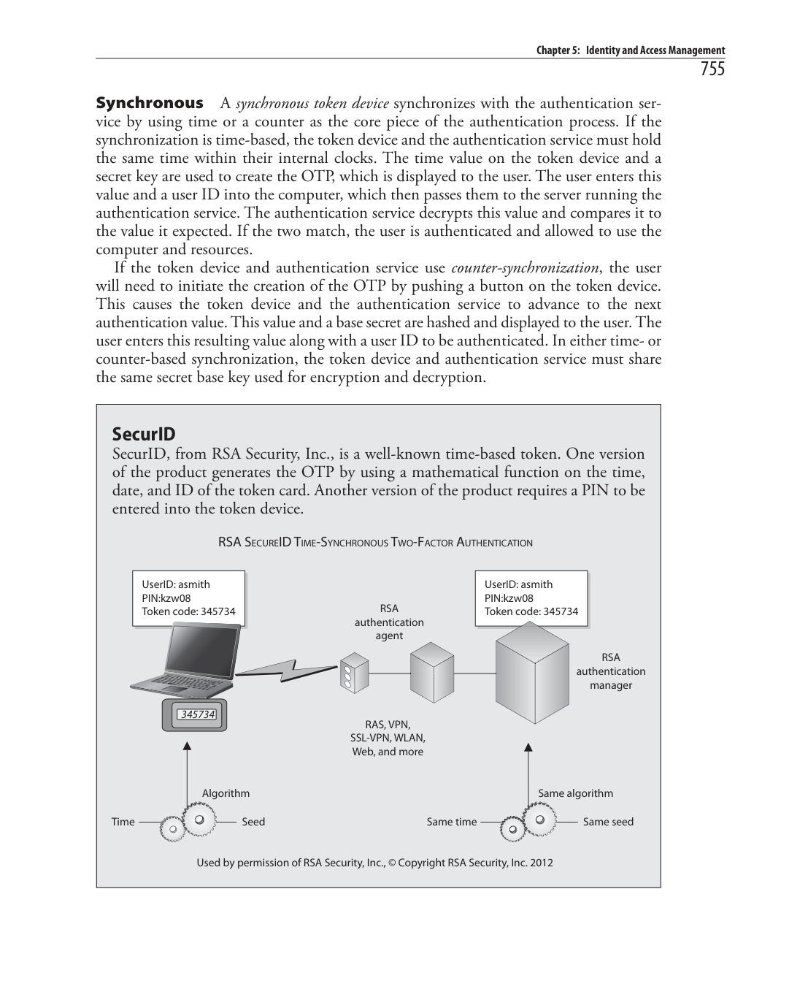
RSA SECUREID TIME-SYNCHRONOUS TWO-FACTOR AUTHENTICATION
Synchronous token-based OTP generation can be time-based or counter-based. Another term for counter-based is event-based. Counterbased and event-based are interchangeable terms, and you could see either or both on the CISSP exam. AsynchronousA token device using anasynchronous token–generating method employs a challenge/response scheme to authenticate the user. In this situation, the authentication server sends the user a challenge, a random value, also called anonce. The user enters this random value into the token device, which encrypts it and returns a value the user uses as an OTP. The user sends this value, along with a username, to the authentication server. If the authentication server can decrypt the value and it is the same challenge value sent earlier, the user is authenticated, as shown in Figure 5-8.
The actual implementation and process that these devices follow can differ between different vendors. What is important to know is that asynchronous is based on challenge/response mechanisms, while synchronous is based on timeor counter-driven mechanisms. Both token systems can fall prey to masquerading if a user shares his identification information (ID or username) and the token device is shared or stolen. The token device can also have battery failure or other malfunctions that would stand in the way of a
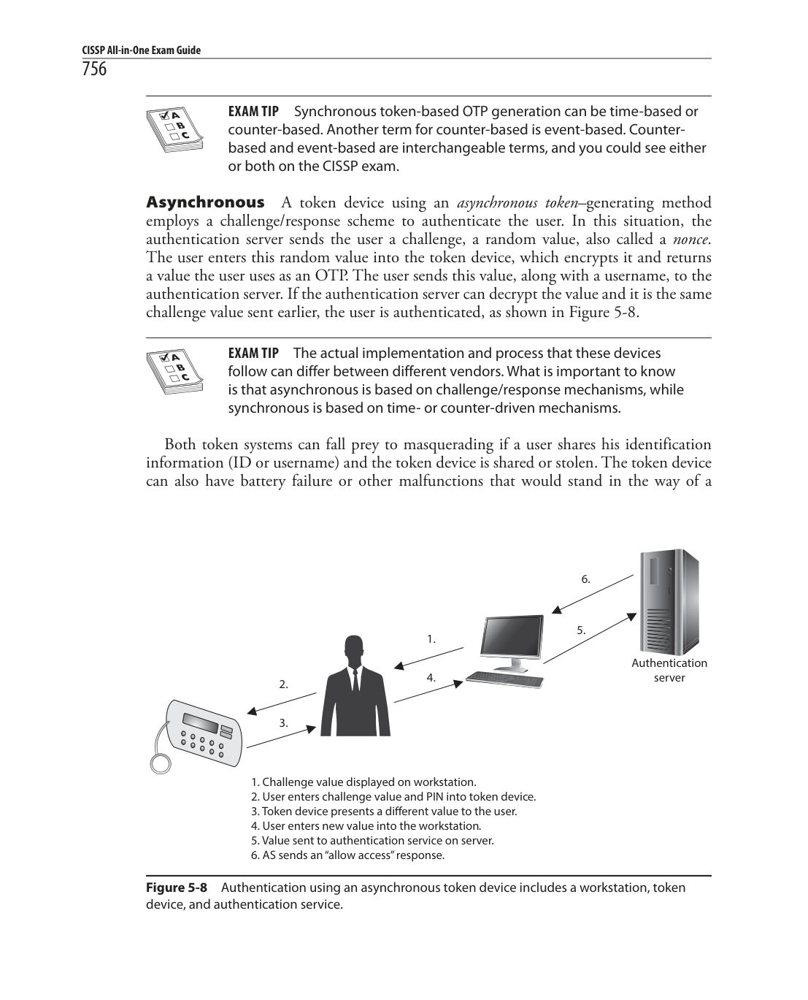
Figure 5-8Authentication using an asynchronous token device includes a workstation, token
successful authentication. However, this type of system is not vulnerable to electronic eavesdropping, sniffing, or password guessing. If the user has to enter a password or PIN into the token device before it provides an OTP, then strong authentication is in effect because it is using two factors—something the user knows (PIN) and something the user has (the token device).
One-time passwords can also be generated in software, in which case a piece of hardware such as a token device is not required. These are referred to assoft tokensand require that the authentication service and application contain the same base secrets, which are used to generate the OTPs.
Cryptographic Keys
Another way to prove one’s identity is to use a private key by generating a digital signature. A digital signature could be used in place of a password. Passwords are the weakest form of authentication and can be easily sniffed as they travel over a network. Digital signatures are forms of authentication used in environments that require higher security protection than what is provided by passwords. A private key is a secret value that should be in the possession of one person, and one person only. It should never be disclosed to an outside party. A digital signature is a technology that uses a private key to encrypt a hash value (message digest). The act of encrypting this hash value with a private key is calleddigitally signinga message. A digital signature attached to a message proves the message originated from a specific source and that the message itself was not changed while in transit. A public key can be made available to anyone without compromising the associated private key; this is why it is called a public key. We explore private keys, public keys, digital signatures, and public key infrastructure (PKI) in Chapter 7, but for now, understand that a private key and digital signatures are other mechanisms that can be used to authenticate an individual.
Passphrase
Apassphraseis a sequence of characters that is longer than a password (thus a “phrase”) and, in some cases, takes the place of a password during an authentication process. The user enters this phrase into an application, and the application transforms the value into avirtual password, making the passphrase the length and format that is required by the application. (For example, an application may require your virtual password to be 128 bits to be used as a key with the AES algorithm.) If a user wants to authenticate to an application, such as Pretty Good Privacy (PGP), he types in a passphrase, let’s say StickWithMeKidAndYouWillWearDiamonds. The application converts this phrase into a virtual password that is used for the actual authentication. The user usually generates the passphrase in the same way a user creates a password the first time he logs on to a computer. A passphrase is more secure than a password because it is longer, and thus harder to obtain by an attacker. In many cases, the user is more likely to remember a passphrase than a password.
Memory Cards
The main difference between memory cards and smart cards is their capacity to process information. Amemory cardholds information but cannot process information. Asmart cardholds information and has the necessary hardware and software to actually process that information. A memory card can hold a user’s authentication information so the user only needs to type in a user ID or PIN and present the memory card, and if the data that the user entered matches the data on the memory card, the user is successfully authenticated. If the user presents a PIN value, then this is an example of two-factor authentication—something the user knows and something the user has. A memory card can also hold identification data that is pulled from the memory card by a reader. It travels with the PIN to a back-end authentication server. An example of a memory card is a swipe card that must be used for an individual to be able to enter a building. The user enters a PIN and swipes the memory card through a card reader. If this is the correct combination, the reader flashes green and the individual can open the door and enter the building. Another example is an ATM card. If Buffy wants to withdraw $40 from her checking account, she needs to slide the ATM card (or memory card) through the reader and enter the correct PIN. Memory cards can be used with computers, but they require a reader to process the information. The reader adds cost to the process, especially when one is needed per computer, and card generation adds cost and effort to the whole authentication process. Using a memory card provides a more secure authentication method than using a password because the attacker would need to obtain the card and know the correct PIN. Administrators and management must weigh the costs and benefits of a memory token– based card implementation to determine if it is the right authentication mechanism for their environment.
Smart Card
Asmart cardhas the capability of processing information because it has a microprocessor and integrated circuits incorporated into the card itself. Memory cards do not have this type of hardware and lack this type of functionality. The only function they can perform is simple storage. A smart card, which adds the capability to process information stored on it, can also provide a two-factor authentication method because the user may have to enter a PIN to unlock the smart card. This means the user must provide something she knows (PIN) and something she has (smart card). Two general categories of smart cards are the contact and the contactless types. The contactsmart card has a gold seal on the face of the card. When this card is fully inserted into a card reader, electrical fingers wipe against the card in the exact position that the chip contacts are located. This will supply power and data I/O to the chip for authentication purposes. Thecontactlesssmart card has an antenna wire that surrounds the perimeter of the card. When this card comes within an electromagnetic field of the reader, the antenna within the card generates enough energy to power the internal chip. Now, theresults of the smart card processing can be broadcast through the same antenna, and the conversation of authentication can take place. The authentication can be completed
by using a one-time password, by employing a challenge/response value, or by providing the user’s private key if it is used within a PKI environment.
Two types of contactless smart cards are available: hybrid and combi. The hybrid card has two chips, with the capability of utilizing both the contact and contactless formats. A combi card has one microprocessor chip that can communicate to contact or contactless readers. The information held within the memory of a smart card is not readable until the correct PIN is entered. This fact and the complexity of the smart token make these cards resistant to reverse-engineering and tampering methods. If George loses the smart card he uses to authenticate to the domain at work, the person who finds the card would need to know his PIN to do any real damage. The smart card can also be programmed to store information in an encrypted fashion, as well as detect any tampering with the card itself. In the event that tampering is detected, the information stored on the smart card can be automatically wiped. The drawbacks to using a smart card are the extra cost of the readers and the overhead of card generation, as with memory cards, although this cost is decreasing. The smart
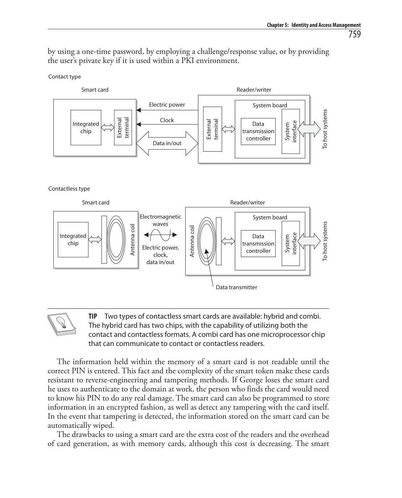
Diagram (p. 793)
cards themselves are more expensive than memory cards because of the extra integrated circuits and microprocessor. Essentially, a smart card is a kind of computer, and because of that it has many of the operational challenges and risks that can affect a computer. Smart cards have several different capabilities, and as the technology develops and memory capacities increase for storage, they will gain even more. They can store personal information in a storage manner that is tamper resistant. This also gives them the capability to isolate security-critical computations within themselves. They can be used in encryption systems in order to store keys and have a high level of portability as well as security. The memory and integrated circuit also allow for the capacity to use encryption algorithms on the actual card and use them for secure authorization that can be utilized throughout an entire organization.
Smart Card AttacksSmart cards are more tamperproof than memory cards, but where there is sensitive data, there are individuals who are motivated to circumvent any countermeasure the industry throws at them. Over the years, criminals have become very inventive in the development of various ways to attack smart cards. For example, attackers have introduced computational errors into smart cards with the goal of uncovering the encryption keys used and stored on the cards. These “errors” are introduced by manipulating some environmental component of the card (changing input voltage, clock rate, temperature fluctuations). The attacker reviews the result of an encryption function after introducing an error to the card, and also reviews the correct result, which the card performs when no errors are introduced. Analysis of these different results may allow an attacker to reverse-engineer the encryption process, with the hope of uncovering the encryption key. This type of attack is referred to asfault generation. Side-channel attacksare nonintrusive and are used to uncover sensitive information about how a component works, without trying to compromise any type of flaw or weakness. As an analogy, suppose you want to figure out what your boss does each day at lunchtime but you feel too uncomfortable to ask her. So you follow her, and you see that she enters a building holding a small black bag and exits exactly 45 minutes later with the same bag and her hair not looking as great as when she went in. You do this day after day for a week and come to the conclusion that she must be exercising. So a noninvasive attack is one in which the attacker watches how something works and how it reacts in different situations instead of trying to “invade” it with more intrusive measures. Some examples of side-channel attacks that have been carried out on smart cards aredifferential power analysis(examining the power emissions released during processing),electromagnetic analysis(examining the frequencies emitted), andtiming (how long a specific process takes to complete). These types of attacks are used to uncover sensitive information about how a component works without trying to compromise any type of flaw or weakness. They are commonly used for data collection. Attackers monitor and capture the analog characteristics of all supply and interface connections and any other electromagnetic radiation produced by the processor during normal operation. They can also collect the time it takes for the smart card to carry out its function. From the collected data, the attacker can deduce specific information she is after, which could be a private key, sensitive financial data, or an encryption key stored on the card.
Software attacksare also considered noninvasive attacks. A smart card has software just like any other device that does data processing, and anywhere there is software there is the possibility of software flaws that can be exploited. The main goal of this type of attack is to input instructions into the card that will allow the attacker to extract account information, which he can use to make fraudulent purchases. Many of these types of attacks can be disguised by using equipment that looks just like the legitimate reader. A more intrusive smart card attack is calledmicroprobing. Microprobing uses needleless and ultrasonic vibration to remove the outer protective material on the card’s circuits. Once this is completed, data can be accessed and manipulated by directly tapping into the card’s ROM chips.
Interoperability
In the industry today, lack of interoperability is a big problem. Although vendors claim to be “compliant with ISO/IEC 14443,” many have developed technologies and methods in a more proprietary fashion. The lack of true standardization has caused some large problems because smart cards are being used for so many different applications. In the United States, the Department of Defense (DoD) is rolling out smart cards across all of its agencies, and NIST is developing a framework and conformance testing programs specifically for interoperability issues. An ISO/IEC standard, 14443, outlines the following items for smart card standardization:
ISO/IEC 14443-1Physical characteristics
- ISO/IEC 14443-3Initialization and anticollision
- ISO/IEC 14443-4Transmission protocol
Radio-Frequency Identification (RFID)
Radio-frequency identification (RFID)is a technology that provides data communication through the use of radio waves. An object contains an electronic tag, which can be identified and communicated with through a reader. The tag has an integrated circuit for storing and processing data, modulating and demodulating a radio-frequency (RF) signal, and other specialized functions. The reader has a builtin antenna for receiving and transmitting the signal. This type of technology can be integrated into smart cards or other mobile transport mechanisms for access control purposes. A common security issue with RFID is that the data can be captured as it moves from the tag to the reader. While encryption can be integrated as a countermeasure, it is not common because RFID is implemented in technology that has low processing capabilities and encryption is very processor-intensive.
Authorization
Although authentication and authorization are quite different, together they comprise a two-step process that determines whether an individual is allowed to access a particular resource. In the first step, authentication, the individual must prove to the system that he is who he claims to be—a permitted system user. After successful authentication, the system must establish whether the user is authorized to access the particular resource and what actions he is permitted to perform on that resource. Authorization is a core component of every operating system, but applications, security add-on packages, and resources themselves can also provide this functionality. For example, suppose Marge has been authenticated through the authentication server and now wants to view a spreadsheet that resides on a file server. When she finds this spreadsheet and double-clicks the icon, she will see an hourglass instead of a mouse pointer. At this stage, the file server is checking if Marge has the rights and permissions to view the requested spreadsheet. It also checks if Marge can modify, delete, move, or copy the file. Once the file server searches through an access matrix and finds that Marge does indeed have the necessary rights to view this file, the file opens on Marge’s desktop. The decision of whether or not to allow Marge to see this file was based on access criteria. Access criteria are the crux of authentication.
Access Criteria
We have gone over the basics of access control. This subject can get very granular in its level of detail when it comes to dictating what a subject can or cannot do to an object or resource. This is a good thing for network administrators and security professionals, because they want to have as much control as possible over the resources they have been put in charge of protecting, and a fine level of detail enables them to give individuals just the precise level of access they need. It would be frustrating if access control permissions were based only on full control or no access. These choices are very limiting, and an administrator would end up giving everyone full control, which would provide no protection. Instead, different ways of limiting access to resources exist, and if they are understood and used properly, they can give just the right level of access desired. Granting access rights to subjects should be based on the level of trust a company has in a subject and the subject’s need to know. Just because a company completely trusts Joyce with its files and resources does not mean she fulfills the need-to-know criteria to access the company’s tax returns and profit margins. If Maynard fulfills the need-to-know criteria to access employees’ work histories, it does not mean the company trusts him to access all of the company’s other files. These issues must be identified and integrated into the access criteria. The different access criteria can be enforced by roles, groups, location, time, and transaction types. Usingrolesis an efficient way to assign rights to a type of user who performs a certain task. This role is based on a job assignment or function. If there is a position within a company for a person to audit transactions and audit logs, the role this person fills would only need a read function to those types of files. This role would not need full control, modify, or delete privileges.
Usinggroupsis another effective way of assigning access control rights. If several users require the same type of access to information and resources, putting them into a group and then assigning rights and permissions to that group is easier to manage than assigning rights and permissions to each and every individual separately. If a specific printer is available only to the accounting group, when a user attempts to print to it, the group membership of the user will be checked to see if she is indeed in the accounting group. This is one way that access control is enforced through a logical access control mechanism. Physical or logical locationcan also be used to restrict access to resources. Some files may be available only to users who can log on interactively to a computer. This means the user must be physically at the computer and enter the credentials locally versus logging on remotely from another computer. This restriction is implemented on several server configurations to restrict unauthorized individuals from being able to get in and reconfigure the server remotely. Logical location restrictions are usually done through network address restrictions. If a network administrator wants to ensure that status requests of an intrusion detection management console are accepted only from certain computers on the network, the network administrator can configure this within the software. Time of day, or temporal isolation, is another access control mechanism that can be used. If a security professional wants to ensure no one is accessing payroll files between the hours of 8:00p.m.and 4:00a.m., she can implement that configuration to ensure access at these times is restricted. If the same security professional wants to ensure no bank account transactions happen during days on which the bank is not open, she can indicate in the logical access control mechanism this type of action is prohibited on Sundays. Temporal access can also be based on the creation date of a resource. Let’s say Russell started working for his company in March 2011. There may be a business need to allow Russell to only access files that have been created after this date and not before. Transaction-typerestrictions can be used to control what data is accessed during certain types of functions and what commands can be carried out on the data. An online banking program may allow a customer to view his account balance, but may not allow the customer to transfer money until he has a certain security level or access right. A bank teller may be able to cash checks of up to $2,000, but would need a supervisor’s access code to retrieve more funds for a customer. A database administrator may be able to build a database for the human resources department, but may not be able to read certain confidential files within that database. These are all examples of transaction-type restrictions to control the access to data and resources.
Default to No Access
Access control mechanisms should default to no access so as to provide the necessary level of security and ensure no security holes go unnoticed. A wide range of access levels is available to assign to individuals and groups, depending on the application and/or operating system. A user can have read, change, delete, full control, or no access permissions. The statement that security mechanisms should default to no access means that if
nothing has been specifically configured for an individual or the group she belongs to, that user should not be able to access that resource. If access is not explicitly allowed, it should be implicitly denied. Security is all about being safe, and this is the safest approach to practice when dealing with access control methods and mechanisms. In other words, all access controls should be based on the concept of starting with zero access, and building on top of that. Instead of giving access to everything, and then taking away privileges based on need to know, the better approach is to start with nothing and add privileges based on need to know. Most access control lists (ACLs) that work on routers and packet-filtering firewalls default to no access. Figure 5-9 shows that traffic from Subnet A is allowed to access Subnet B, traffic from Subnet D is not allowed to access Subnet A, and Subnet B is allowed to talk to Subnet A. All other traffic transmission paths not listed here are not allowed by default. Subnet D cannot talk to Subnet B because such access is not explicitly indicated in the router’s ACL.
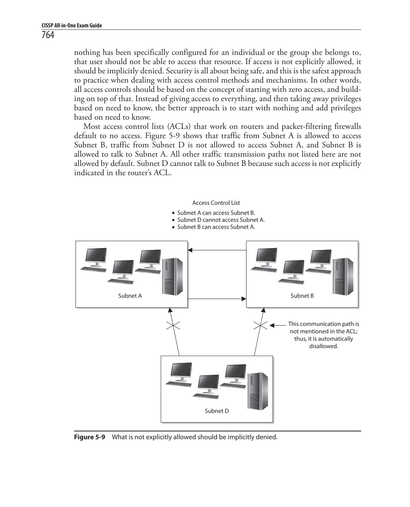
Figure 5-9What is not explicitly allowed should be implicitly denied.
Need to Know
Theneed-to-knowprinciple is similar to theleast-privilegeprinciple. It is based on the concept that individuals should be given access only to the information they absolutely require in order to perform their job duties. Giving any more rights to a user just asks for headaches and the possibility of that user abusing the permissions assigned to him. An administrator wants to give a user the least amount of privileges she can, but just enough for that user to be productive when carrying out tasks. Management will decide what a user needs to know, or what access rights are necessary, and the administrator will configure the access control mechanisms to allow this user to have that level of access and no more, and thus the least privilege. For example, if management has decided that Dan, the copy boy, needs to know where the files he needs to copy are located and needs to be able to print them, this fulfills Dan’s need-to-know criteria. Now, an administrator could give Dan full control of all the files he needs to copy, but that would not be practicing the least-privilege principle. The administrator should restrict Dan’s rights and permissions to only allow him to read and print the necessary files, and no more. Besides, if Dan accidentally deletes all the files on the whole file server, whom do you think management will hold ultimately responsible? Yep, the administrator. It is important to understand that it is management’s job to determine the security requirements of individuals and how access is authorized. The security administrator configures the security mechanisms to fulfill these requirements, but it is not her job to determine security requirements of users. Those should be left to the owners. If there is a security breach, management will ultimately be held responsible, so it should make these decisions in the first place.
Authorization Creep
As employees work at a company over time and move from one department to another, they often are assigned more and more access rights and permissions. This is commonly referred to asauthorization creep. It can be a large risk for a company, because too many users have too much privileged access to company assets. In the past, it has usually been easier for network administrators to give more access than less, because then the user would not come back and require more work to be done on her profile. It is also difficult to know the exact access levels different individuals require. This is why user management and user provisioning are becoming more prevalent in identity management products today and why companies are moving more toward role-based access control implementation. Enforcing least privilege on user accounts should be an ongoing job, which means each user’s rights are permissions that should be reviewed to ensure the company is not putting itself at risk. Note that rights and permission reviews have been incorporated into many regulatory-induced processes. As part of the Sarbanes-Oxley (SOX) regulations, managers have to review their employees’ permissions to data on an annual basis.
Single Sign-On
Employees typically need to access many different computers, servers, databases, and other resources in the course of a day to complete their tasks. This often requires the employees to remember multiple user IDs and passwords for these different computers. In a utopia, a user would need to enter only one user ID and one password to be able to access all resources in all the networks this user is working in. In the real world, this is hard to accomplish for all system types. Because of the proliferation of client/server technologies, networks have migrated from centrally controlled networks to heterogeneous, distributed environments. The propagation of open systems and the increased diversity of applications, platforms, and operating systems have caused the end user to have to remember several user IDs and passwords just to be able to access and use the different resources within his own network. Although the different IDs and passwords are supposed to provide a greater level of security, they often end up compromising security (because users write them down) and causing more effort and overhead for the staff that manages and maintains the network. As any network staff member or administrator can attest to, too much time is devoted to resetting passwords for users who have forgotten them. More than one employee’s productivity is affected when forgotten passwords have to be reassigned. The network staff member who has to reset the password could be working on other tasks, and the user who forgot the password cannot complete his task until the network staff member is finished resetting the password. Many help-desk employees report that a majority of their time is spent on users forgetting their passwords. System administrators have to manage multiple user accounts on different platforms, which all need to be coordinated in a manner that maintains the integrity of the security policy. At times the complexity can be overwhelming, which results in poor access control management and the generation of many security vulnerabilities. A lot of time is spent on multiple passwords, and in the end they do not provide us with more security. The increased cost of managing a diverse environment, security concerns, and user habits, coupled with the users’ overwhelming desire to remember one set of credentials, has brought about the idea ofsingle sign-on (SSO)capabilities. These capabilities would allow a user to enter credentials one time and be able to access all resources in primary and secondary network domains. This reduces the amount of time users spend authenticating to resources and enables the administrator to streamline user accounts and better control access rights. It improves security by reducing the probability that users will write down passwords and also reduces the administrator’s time spent on adding and removing user accounts and modifying access permissions. If an administrator needs to disable or suspend a specific account,
she can do it uniformly instead of having to alter configurations on each and every platform.
So that is our utopia: log on once and you are good to go. What bursts this bubble? Mainly interoperability issues. For SSO to actually work, every platform, application, and resource needs to accept the same type of credentials, in the same format, and interpret their meanings the same. When Steve logs on to his Windows workstation and gets authenticated by a mixed-mode Windows domain controller, it must authenticate him to the resources he needs to access on the Apple computer, the Unix server running NIS, the mainframe host server, the MICR print server, and the Windows computer in the secondary domain that has the plotter connected to it. A nice idea, until reality hits. There is also a security issue to consider in an SSO environment. Once an individual is in, he is in. If an attacker was able to uncover one credential set, he would have access to every resource within the environment that the compromised account has access to. This is certainly true, but one of the goals is that if a user only has to remember one password, and not ten, then a more robust password policy can be enforced. If the user has just one password to remember, then it can be more complicated and secure because he does not have nine other ones to remember also. SSO technologies come in different types. Each has its own advantages and disadvantages, shortcomings, and quality features. It is rare to see a real SSO environment; rather, you will see a cluster of computers and resources that accept the same credentials. Other resources, however, still require more work by the administrator or user side to
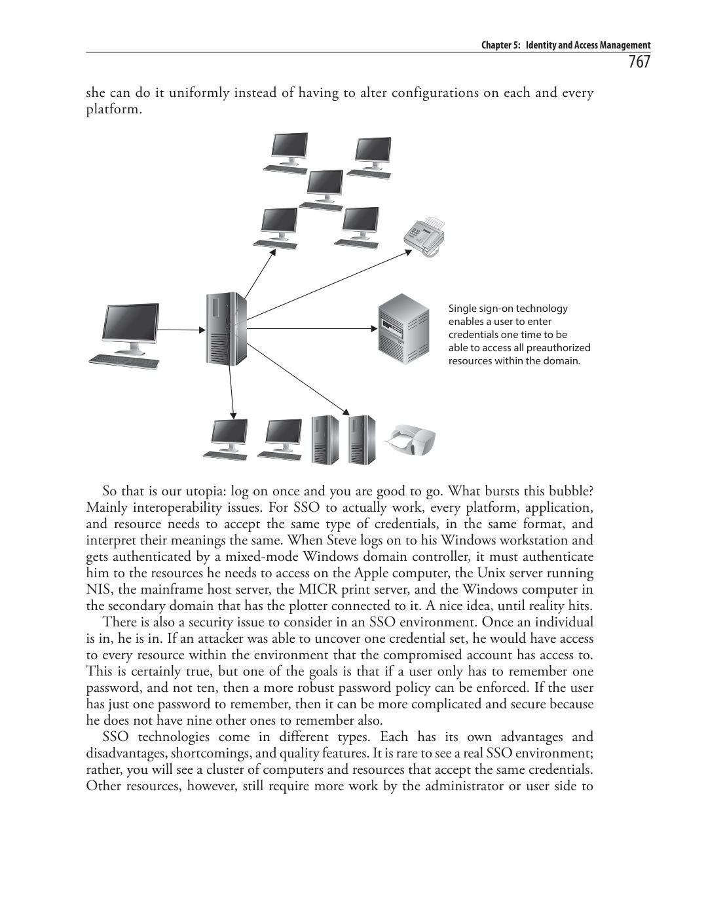
Diagram (p. 801)
access the systems. The SSO technologies that may be addressed in the CISSP exam are described in the next sections.
KerberosKerberosis the name of a three-headed dog that guards the entrance to the underworld in Greek mythology. This is a great name for a security technology that provides authentication functionality, with the purpose of protecting a company’s assets. Kerberos is an authentication protocol and was designed in the mid-1980s as part of MIT’s Project Athena. It works in a client/server model and is based on symmetric key cryptography. The protocol has been used for years in Unix systems and is currently the default authentication method for Windows 2000 and later operating systems. In addition, Apple OS X, Oracle Solaris, and Red Hat Enterprise Linux all use Kerberos authentication. Commercial products supporting Kerberos are becoming more frequent, so this one might be a keeper. Kerberos is an example of an SSO system for distributed environments, and is a de facto standard for heterogeneous networks. Kerberos incorporates a wide range of security capabilities, which gives companies much more flexibility and scalability when they need to provide an encompassing security architecture. It has four elements necessary for enterprise access control: scalability, transparency, reliability, and security. However, this open architecture also invites interoperability issues. When vendors have a lot of freedom to customize a protocol, it usually means no two vendors will customize it in the same fashion. This creates interoperability and incompatibility issues. Kerberos uses symmetric key cryptography and provides end-to-end security. Although it allows the use of passwords for authentication, it was designed specifically to eliminate the need to transmit passwords over the network. Most Kerberos implementations work with shared secret keys.
Main Components in KerberosTheKey Distribution Center (KDC)is the most important component within a Kerberos environment. The KDC holds all users’ and services’ secret keys. It provides an authentication service, as well as key distribution functionality. The clients and services trust the integrity of the KDC, and this trust is the foundation of Kerberos security. The KDC provides security services toprincipals, which can be users, applications, or network services. The KDC must have an account for, and share a secret key with, each principal. For users, a password is transformed into a secret key value. The secret key can be used to send sensitive data back and forth between the principal and the KDC, and is used for user authentication purposes. Aticketis generated by theticket granting service (TGS)on the KDC and given to a principal when that principal, let’s say a user, needs to authenticate to another principal, let’s say a print server. The ticket enables one principal to authenticate to another principal. If Emily needs to use the print server, she must prove to the print server she is who she claims to be and that she is authorized to use the printing service. So Emily requests a ticket from the TGS. The TGS gives Emily the ticket, and in turn, Emily passes this ticket on to the print server. If the print server approves this ticket, Emily is allowed to use the print service. A KDC provides security services for a set of principles. This set is called arealmin Kerberos. The KDC is the trusted authentication server for all users, applications, and
services within a realm. One KDC can be responsible for one realm or several realms. Realms are used to allow an administrator to logically group resources and users. So far, we know that principals (users and services) require the KDC’s services to authenticate to each other; that the KDC has a database filled with information about each and every principal within its realm; that the KDC holds and delivers cryptographic keys and tickets; and that tickets are used for principals to authenticate to each other. So how does this process work?
The Kerberos Authentication ProcessThe user and the KDC share a secret key, while the service and the KDC share a different secret key. The user and the requested service do not share a symmetric key in the beginning. The user trusts the KDC because they share a secret key. They can encrypt and decrypt data they pass between each other, and thus have a protected communication path. Once the user authenticates to the service, they, too, will share a symmetric key (session key) that is used for authentication purposes. Here are the exact steps:
1.Emily comes in to work and enters her username and password into her workstation at 8:00a.m. The Kerberos software on Emily’s computer sends the username to the authentication service (AS) on the KDC, which in turn sends Emily a ticket granting ticket (TGT) that is encrypted with the TGS’s secret key. 2.If Emily has entered her correct password, then this TGT is decrypted and Emily gains access to her local workstation desktop. 3.When Emily needs to send a print job to the print server, her system sends the TGT to the TGS, which runs on the KDC, and a request to access the print server. (The TGT allows Emily to prove she has been authenticated and allows her to request access to the print server.) 4.The TGS creates and sends a second ticket to Emily, which she will use to authenticate to the print server. This second ticket contains two instances of the same session key, one encrypted with Emily’s secret key and the other encrypted with the print server’s secret key. The second ticket also contains anauthenticator, which contains identification information on Emily, her system’s IP address, sequence number, and a timestamp. 5.Emily’s system receives the second ticket, decrypts and extracts the embedded session key, adds a second authenticator set of identification information to the ticket, and sends the ticket on to the print server. 6.The print server receives the ticket, decrypts and extracts the session key, and decrypts and extracts the two authenticators in the ticket. If the print server can decrypt and extract the session key, it knows the KDC created the ticket, because only the KDC has the secret key used to encrypt the session key. If the authenticator information that the KDC and the user put into the ticket matches, then the print server knows it received the ticket from the correct principal. 7.Once this is completed, it means Emily has been properly authenticated to the print server and the server prints her document.
This is an extremely simplistic overview of what is going on in any Kerberos exchange, but it gives you an idea of the dance taking place behind the scenes whenever you interact with any network service in an environment that uses Kerberos. Figure 5-10 provides a simplistic view of this process. The authentication service is the part of the KDC that authenticates a principal, and the TGS is the part of the KDC that makes the tickets and hands them out to the principals. TGTs are used so the user does not have to enter his password each time he needs to communicate with another principal. After the user enters his password, it is temporarily stored on his system, and any time the user needs to communicate with another principal, he just reuses the TGT.
Be sure you understand that a session key is different from a secret key. A secret key is shared between the KDC and a principal and is static in nature. A session key is shared between two principals and is generated when needed and destroyed after the session is completed. If a Kerberos implementation is configured to use anauthenticator, the user sends to the print server her identification information and a timestamp and sequence number encrypted with the session key they share. The print server decrypts this information and compares it with the identification data the KDC sent to it about this requesting user. If
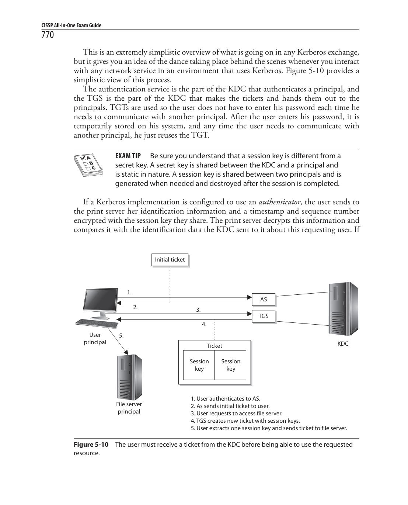
Figure 5-10The user must receive a ticket from the KDC before being able to use the requested
the data is the same, the print server allows the user to send print jobs. The timestamp is used to help fight against replay attacks. The print server compares the sent timestamp with its own internal time, which helps determine if the ticket has been sniffed and copied by an attacker and then submitted at a later time in hopes of impersonating the legitimate user and gaining unauthorized access. The print server checks the sequence number to make sure that this ticket has not been submitted previously. This is another countermeasure to protect against replay attacks.
A replay attack is when an attacker captures and resubmits data (commonly a credential) with the goal of gaining unauthorized access to an asset.
The primary reason to use Kerberos is that the principals do not trust each other enough to communicate directly. In our example, the print server will not print anyone’s print job without that entity authenticating itself. So none of the principals trust each other directly; they only trust the KDC. The KDC creates tickets to vouch for the individual principals when they need to communicate. Suppose Rodrigo needs to communicate directly with you, but you do not trust him enough to listen and accept what he is saying. If he first gives you a ticket from something you do trust (KDC), this basically says, “Look, the KDC says I am a trustworthy person. The KDC asked me to give this ticket to you to prove it.” Once that happens,thenyou will communicate directly with Rodrigo. The same type of trust model is used in PKI environments. In a PKI environment, users do not trust each other directly, but they all trust the certificate authority (CA). The CA vouches for the individuals’ identities by using digital certificates, the same as the KDC vouches for the individuals’ identities by using tickets. So why are we talking about Kerberos? Because it is one example of an SSO technology. The user enters a user ID and password one time and one time only. The tickets have time limits on them that administrators can configure. Many times, the lifetime of a TGT is eight to ten hours, so when the user comes in the next day, he will have to present his credentials again.
Kerberos is an open protocol, meaning that vendors can manipulate it to work properly within their products and environments. The industry has different “flavors” of Kerberos, since various vendors require different functionality. Weaknesses of KerberosThe following are some of the potential weaknesses of Kerberos: The KDC can be a single point of failure. If the KDC goes down, no one can
- access needed resources. Redundancy is necessary for the KDC.
The KDC must be able to handle the number of requests it receives in a timely
- manner. It must be scalable.
Secret keys are temporarily stored on the users’ workstations, which means it is
- possible for an intruder to obtain these cryptographic keys.
Session keys are decrypted and reside on the users’ workstations, either in a cache
- or in a key table. Again, an intruder can capture these keys.
Kerberos is vulnerable to password guessing. The KDC does not know if a
- dictionary attack is taking place.
Network traffic is not protected by Kerberos if encryption is not enabled.
- If the keys are too short, they can be vulnerable to brute-force attacks.
- Kerberos needs all client and server clocks to be synchronized.
- Kerberos must be transparent (work in the background without the user needing to understand it), scalable (work in large, heterogeneous environments), reliable (use distributed server architecture to ensure there is no single point of failure), and secure (provide authentication and confidentiality).
Kerberos and Password-Guessing Attacks
Just because an environment uses Kerberos does not mean the systems are vulnerable to password-guessing attacks. The operating system itself will (should) provide the protection of tracking failed login attempts. The Kerberos protocol does not have this type of functionality, so another component must be in place to counter these types of attacks. No need to start ripping Kerberos out of your network environment after reading this section; your operating system provides the protection mechanism for this type of attack.
Security DomainsThe term “domain” has been around a lot longer than Microsoft, but when people hear this term, they often think of a set of computers and devices on a network segment being controlled by a server that runs Microsoft software, referred to as a domain controller. A domain is really just a set of resources available to a subject. Remember that a subject can be a user, process, or application. Within an operating system, a process has a domain, which is the set of system resources available to the process to carry out its tasks. These resources can be memory segments, hard drive space, operating system services, and other processes. In a network environment, a domain is a set of physical and logical resources that is available, which can include routers, file servers, FTP service, web servers, and so forth. The termsecurity domainjust builds upon the definition of domain by adding the fact that resources within this logical structure (domain) are working under the same security policy and managed by the same group. So, a network administrator may put all of the accounting personnel, computers, and network resources in Domain 1 and all of the management personnel, computers, and network resources in Domain 2. These items fall into these individual containers because they not only carry out similar types of
business functions, but also, and more importantly, have the same type of trust level. It is this common trust level that allows entities to be managed by one single security policy. The different domains are separated by logical boundaries, such as firewalls with ACLs, directory services making access decisions, and objects that have their own ACLs indicating which individuals and groups can carry out operations on them. All of these security mechanisms are examples of components that enforce the security policy for each domain. Domains can be architected in a hierarchical manner that dictates the relationship between the different domains and the ways in which subjects within the different domains can communicate. Subjects can access resources in domains of equal or lower trust levels. Figure 5-11 shows an example of hierarchical network domains. Their communication
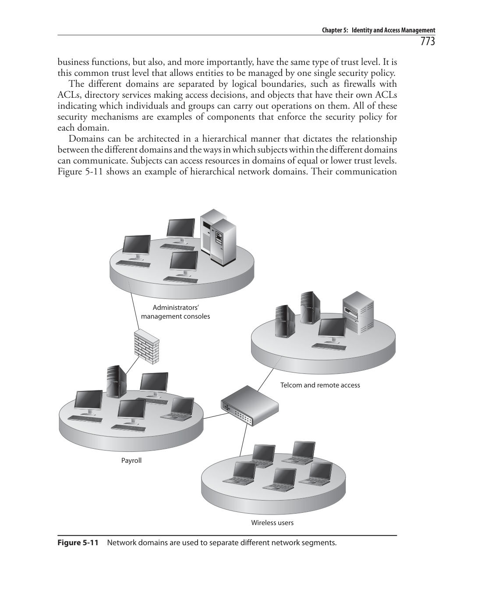
Figure 5-11Network domains are used to separate different network segments.
channels are controlled by security agents (firewalls, router ACLs, directory services), and the individual domains are isolated by using specific subnet mask addresses. Remember that a domain does not necessarily pertain only to network devices and segmentations, but can also apply to users and processes. Figure 5-12 shows how users and processes can have more granular domains assigned to them individually based on their trust level. Group 1 has a high trust level and can access both a domain of its own trust level (Domain 1) and a domain of a lower trust level (Domain 2). User 1, who has a lower trust level, can access only the domain at his trust level and nothing higher. The system enforces these domains with access privileges and rights provided by the file system and operating system security kernel. So why are domains in the “Single Sign-On” section? Because several different types of technologies available today are used to define and enforce these domains and security
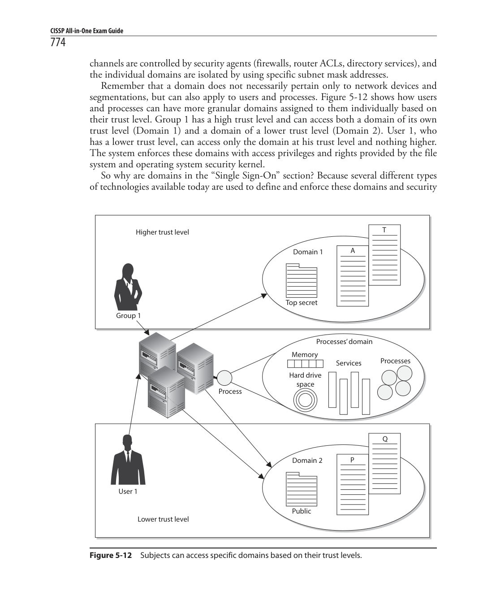
Figure 5-12Subjects can access specific domains based on their trust levels.
policies mapped to them: domain controllers in a Windows environment, ERM products, Microsoft accounts, and the various products that provide SSO functionality. The goal of each of them is to allow a user (subject) to sign in one time and be able to access the different domains available without having to reenter any other credentials.
Directory ServicesWhile we covered directory services in the “Identity Management” section, it is also important for you to realize that it is considered a single sign-on technology in its own right, so we will review the characteristics again within this section. A network service is a mechanism that identifies resources (printers, file servers, domain controllers, and peripheral devices) on a network. A network directory service contains information about these different resources and the subjects that need to access them and carries out access control activities. If the directory service is working in a database based on the X.500 standard, it works in a hierarchical schema that outlines the resources’ attributes, such as name, logical and physical location, subjects that can access them, and the operations that can be carried out on them. In a database based on the X.500 standard, access requests are made from users and other systems using the LDAP protocol (discussed earlier in the chapter). This type of database provides a hierarchical structure for the organization of objects (subjects and resources). The directory service develops unique distinguished names for each object and appends the corresponding attribute to each object as needed. The directory service enforces a security policy (configured by the administrator) to control how subjects and objects interact. Network directory services provide users access to network resources transparently, meaning that users don’t need to know the exact location of the resources or the steps required to access them. The network directory services handle these issues for the user in the background. Some examples of directory services are LDAP, NetIQ eDirectory, and Microsoft Active Directory (also discussed earlier).
Thin ClientsDiskless computers and thin clients cannot store much information because of their lack of onboard storage space and necessary resources. This type of client/server technology forces users to log on to a central server just to use the computer and access network resources. When the user starts the computer, it runs a short list of instructions and then points itself to a server that will actually download the operating system, or interactive operating software, to the terminal. This enforces a strict type of access control, because the computer cannot do anything on its own until it authenticates to a centralized server, and then the server gives the computer its operating system, profile, and functionality. Thin-client technology provides another type of SSO access for users because users authenticate only to the central server or mainframe, which then provides them access to all authorized and necessary resources. In addition to providing an SSO solution, a thin-client technology offers several other advantages. A company can save money by purchasing thin clients instead of powerful and expensive PCs. The central server handles all application execution, processing, and data storage. The thin client displays the graphical representation and sends mouse clicks and keystroke inputs to the central server. Having all of the software in one location instead of distributed throughout the environment allows for easier administration,
centralized access control, easier updates, and standardized configurations. It is also easier to control malware infestations and the theft of confidential data because the thin clients often do not have optical disc drives or USB ports.
The technology industry came from a centralized model, with the use of mainframes and dumb terminals, and is in some ways moving back toward this model with the use of terminal services, Citrix, service-oriented architecture, and cloud computing.
Single Sign-On Technologies: A Summary
KerberosAuthentication protocol that uses a KDC and tickets, and is
- based on symmetric key cryptography
Security domainsResources working under the same security policy and
- managed by the same group
Directory servicesTechnology that allows resources to be named in a
- standardized manner and access control to be maintained centrally
Thin clientsTerminals that rely upon a central server for access control,
- processing, and storage
Federation
The world continually gets smaller as technology brings people and companies closer together. Many times, when we are interacting with just one website, we are actually interacting with several different companies—we just don’t know it. The reason we don’t know it is because these companies are sharing our identity and authentication information behind the scenes. This is not done for nefarious purposes necessarily, but to make our lives easier and to allow merchants to sell their goods without much effort on our part.
Digital Identity
An interesting little fact that not many people are aware of is that adigital identity is made up of attributes, entitlements, and traits. Many of us just think of identity as a user ID that is mapped to an individual. The truth is that it is usually more complicated than that. A user’s identity can be a collection of her attributes (department, role in company, shift time, clearance, and others); her entitlements (resources available
to her, authoritative rights in the company, and so on); and her traits (biometric information, height, sex, and so forth). So if a user requests access to a database that contains sensitive employee information, the IdM solution would need to pull together the necessary identity information and her supplied credentials before she is authorized access. If the user is a senior manager (attribute), with a secret clearance (attribute), and has access to the database (entitlement)—she is granted the permissions read and write to certain records in the database Monday through Friday, 8a.m. to 5p.m. (attribute). Another example is if a soldier requests to be assigned an M-16 firearm. She must be in the 34th division (attribute), have a top secret clearance (attribute), her supervisor must have approved this (entitlement), and her physical features (traits) must match the ID card she presents to the firearm depot clerk. The directory (or meta-directory) of the IdM system has all of this identity information centralized, which is why it is so important. Many people think that just logging into a domain controller or a network access server is all that is involved in identity management. But if you peek under the covers, you can find an array of complex processes and technologies working together. The CISSP exam is not currently getting into this level of detail (entitlement, attribute, traits) pertaining to IdM, but in the real world there are many facets to identification, authentication, authorization, and auditing that make it a complex beast.
For example, a person wants to book an airline flight and a hotel room. If the airline company and hotel company use a federated identity management system, this means they have set up a trust relationship between the two companies and will share customer identification and, potentially, authentication information. So when you book a flight on Southwest, the website asks if you want to also book a hotel room. If you click “Yes,” you could then be brought to the Hilton website, which provides information on the closest hotel to the airport you’re flying into. Now, to book a room you don’t have to log in again. You logged in on the Southwest website, and that website sent your information over to the Hilton website, all of which happened transparently to you. Afederated identityis a portable identity, and its associated entitlements, that can be used across business boundaries. It allows a user to be authenticated across multiple IT systems and enterprises. Identity federation is based upon linking a user’s otherwise distinct identities at two or more locations without the need to synchronize or consolidate directory information. Federated identity offers businesses and consumers
a more convenient way of accessing distributed resources and is a key component of e-commerce.
Web portalfunctions are parts of a website that act as a point of access to information. A portal presents information from diverse sources in a unified manner. It can offer various services, as in e-mail, news updates, stock prices, data access, price look-ups, access to databases, and entertainment. Web portals provide a way for organizations to present one consistent interface with one “look and feel” and various functionality types. For example, you log into your company web portal and it provides access to many different systems and their functionalities, but it seems as though you are only interacting with one system because the interface is “clean” and organized. Portals combine web services (web-based functions) from several different entities and present them in one central website. A web portal is made up ofportlets, which are pluggable user-interface software components that present information from other systems. A portlet is an interactive application that provides a specific type of web service functionality (e-mail, news feed, weather updates, forums). A portal is made up of individual portlets to provide a plethora of services through one interface. It is a way of centrally providing a set of web services. Users can configure their view to the portal by enabling or disabling these various portlet functions. Since each of these portlets can be provided by different entities, how user authentication information is handled must be tightly controlled, and there must be a high level of trust
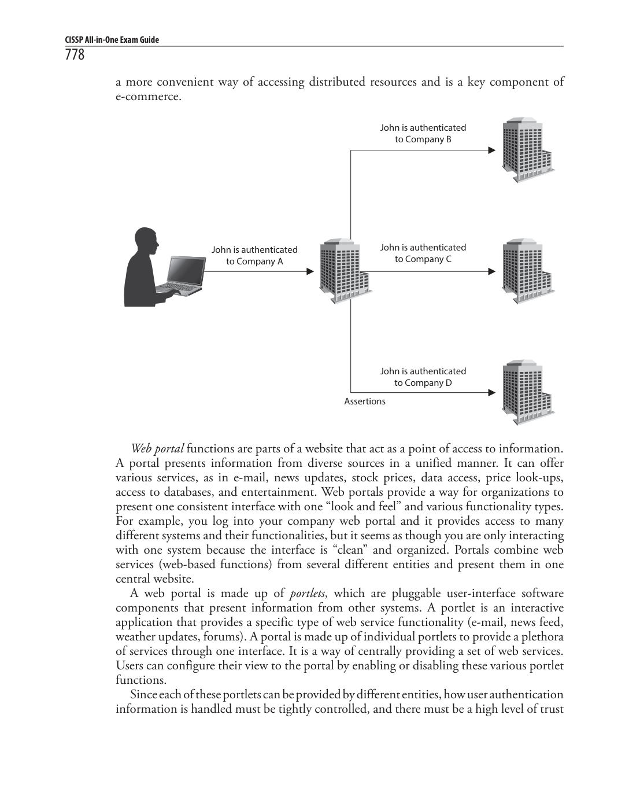
Diagram (p. 812)
between these different entities. If you worked for a college, for example, there might be one web portal available to students, parents, faculty members, and the public. The public should only be able to view and access a small subset of available portlets and not have access to more powerful web services (e-mails, database access). Students could be able to log in and gain access to their grades, assignments, and a student forum. Faculty members can gain access to all of these web services, including the school’s e-mail service and access to the central database, which contains all of the students’ information. If there is a software flaw or misconfiguration, it is possible that someone can gain access to something they are not supposed to. The following sections explain some of the various types of authentication methods commonly used and integrated in many web-based federated identity management processes and products today.
Access Control and Markup Languages
If you can remember whenHyperText Markup Language (HTML)wasallwe had to make a static web page, you’re old. Being old in the technology world is different than in the regular world; HTML came out in the early 1990s. HTML came from Standard Generalized Markup Language (SGML), which came from the Generalized Markup Language (GML). We still use HTML, so it is certainly not dead and gone; the industry has just improved upon the markup languages available for use to meet today’s needs. A markup language is a way to structure text and data sets, and it dictates how these will be viewed and used. When you adjust margins and other formatting capabilities in a word processor, you are marking up the text in the word processor’s markup language. If you develop a web page, you are using some type of markup language. You can control how it looks and some of the actual functionality the page provides. The use of a standard markup language also allows for interoperability. If you develop a web page and follow basic markup language standards, the page will basically look and act the same no matter what web server is serving up the web page or what browser the viewer is using to interact with it. As the Internet grew in size and the World Wide Web (WWW) expanded in functionality, and as more users and organizations came to depend upon websites and web-based communication, the basic and elementary functions provided by HTML were not enough. And instead of every website having its own proprietary markup language to meet its specific functionality requirements, the industry had to have a way for functionality needs to be met and still provide interoperability for all web server and web browser interaction. This is the reason thatExtensible Markup Language (XML)was developed. XML is a universal and foundational standard that provides a structure for other independent markup languages to be built from and still allow for interoperability. Markup languages with various functionalities were built from XML, and while each language provides its own individual functionality, if they all follow the core rules of XML, then they are interoperable and can be used across different web-based applications and platforms. As an analogy, let’s look at the English language. Samir is a biology scientist, Trudy is an accountant, and Val is a network administrator. They all speak English, so they have
a common set of communication rules, which allow them to talk with each other, but each has their own “spin-off ” languages that builds upon and uses the English language as its core. Samir uses words like “mitochondrial amino acid genetic strains” and “DNA polymerase.” Trudy uses words such as “accrual accounting” and “acquisition indigestion.” Val uses terms such as “multiprotocol label switching” and “subkey creation.” Each profession has its own “language” to meet its own needs, but each is based off the same core language—English. In the world of the WWW, various websites need to provide different types of functionality through the use of their own language types but still need a way to communicate with each other and their users in a consistent manner, which is why they are based upon the same core language structure (XML). There are hundreds of markup languages based upon XML, but we are going to focus on the ones that are used for identity management and access control purposes. TheService Provisioning Markup Language (SPML)allows for the exchange of provisioning data between applications, which could reside in one organization or many. SPML allows for the automation of user management (account creation, amendments, revocation) and access entitlement configuration related to electronically published services across multiple provisioning systems. This markup language allows for the integration and interoperation of service provisioning requests across various platforms. When a new employee is hired at a company, that employee usually needs access to a wide range of systems, servers, and applications. Setting up new accounts on each and every system, properly configuring access rights, and then maintaining those accounts throughout their lifetimes is time-consuming, laborious, and error-prone. What if the company has 20,000 employees and thousands of network resources that each employee needs various access rights to? This opens the door for confusion, mistakes, vulnerabilities, and a lack of standardization. SPML allows for all these accounts to be set up and managed simultaneously across the various systems and applications. SPML is made up of three main entities: the Requesting Authority (RA), which is the entity that is making the request to set up a new account or make changes to an existing account; the Provisioning Service Provider (PSP), which is the software that responds to the account requests; and the Provisioning Service Target (PST), which is the entity that carries out the provisioning activities on the requested system. So when a new employee is hired, there is a request to set up the necessary user accounts and access privileges on several different systems and applications across the enterprise. This request originates in a piece of software carrying out the functionality of the RA. The RA creates SPML messages, which provide the requirements of the new account, and sends them to a piece of software that is carrying out the functionality of the PSP. This piece of software reviews the requests and compares them to the organization’s approved account creation criteria. If these requests are allowed, the PSP sends new SPML messages to the end systems (PST) that the user actually needs to access. Software on the PST sets up the requested accounts and configures the necessary access rights. If this same employee is fired three months later, the same process is followed and all necessary user accounts are deleted. This allows for consistent account management in complex environments. These steps are illustrated in Figure 5-13.
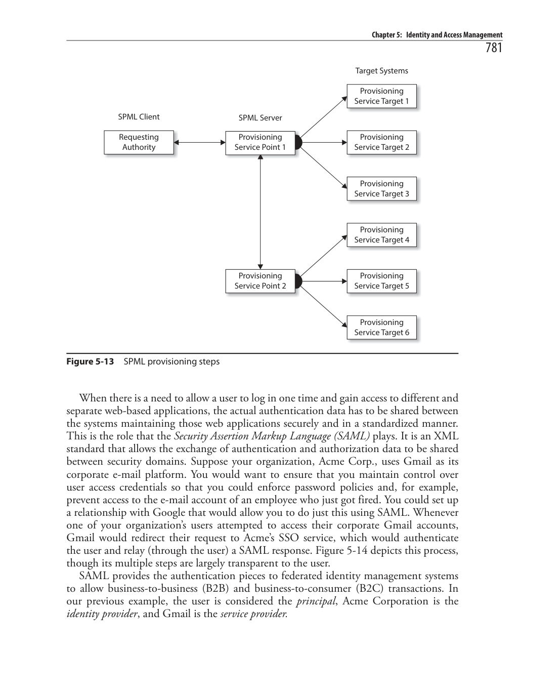
Figure 5-13SPML provisioning steps
When there is a need to allow a user to log in one time and gain access to different and separate web-based applications, the actual authentication data has to be shared between the systems maintaining those web applications securely and in a standardized manner. This is the role that theSecurity Assertion Markup Language (SAML)plays. It is an XML standard that allows the exchange of authentication and authorization data to be shared between security domains. Suppose your organization, Acme Corp., uses Gmail as its corporate e-mail platform. You would want to ensure that you maintain control over user access credentials so that you could enforce password policies and, for example, prevent access to the e-mail account of an employee who just got fired. You could set up a relationship with Google that would allow you to do just this using SAML. Whenever one of your organization’s users attempted to access their corporate Gmail accounts, Gmail would redirect their request to Acme’s SSO service, which would authenticate the user and relay (through the user) a SAML response. Figure 5-14 depicts this process, though its multiple steps are largely transparent to the user. SAML provides the authentication pieces to federated identity management systems to allow business-to-business (B2B) and business-to-consumer (B2C) transactions. In our previous example, the user is considered theprincipal, Acme Corporation is the identity provider, and Gmail is theservice provider.
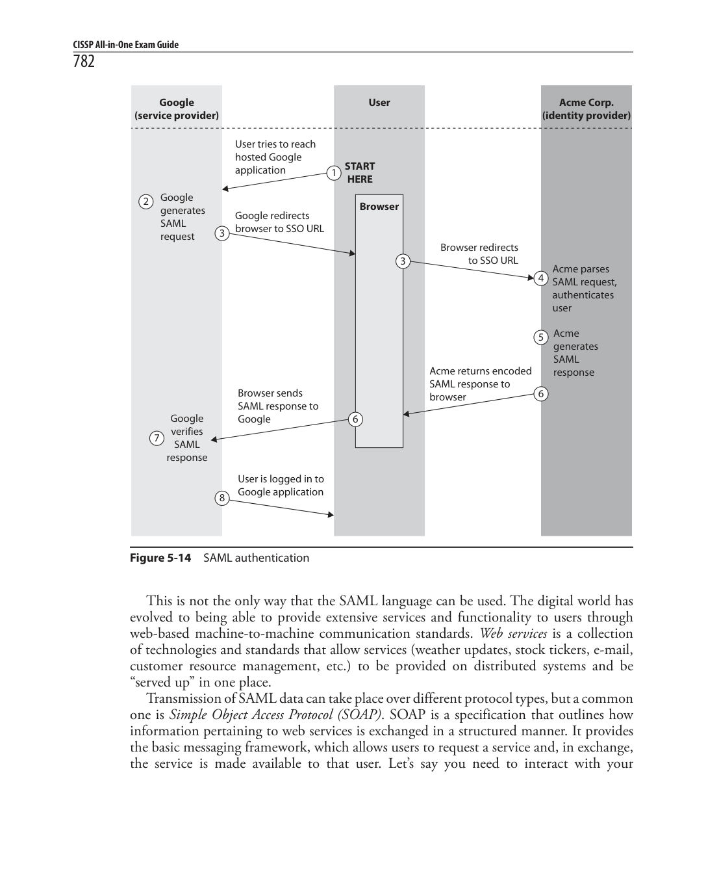
Figure 5-14SAML authentication
This is not the only way that the SAML language can be used. The digital world has evolved to being able to provide extensive services and functionality to users through web-based machine-to-machine communication standards.Web servicesis a collection of technologies and standards that allow services (weather updates, stock tickers, e-mail, customer resource management, etc.) to be provided on distributed systems and be “served up” in one place. Transmission of SAML data can take place over different protocol types, but a common one isSimple Object Access Protocol (SOAP). SOAP is a specification that outlines how information pertaining to web services is exchanged in a structured manner. It provides the basic messaging framework, which allows users to request a service and, in exchange, the service is made available to that user. Let’s say you need to interact with your
company’s CRM system, which is hosted and maintained by the vendor—for example, Salesforce.com. You would log into your company’s portal and double-click a link for Salesforce. Your company’s portal would take this request and your authentication data and package it up in an SAML format and encapsulate that data into a SOAP message. This message would be transmitted over an HTTP connection to the Salesforce vendor site, and once you were authenticated, you would be provided with a screen that shows you the company’s customer database. The SAML, SOAP, and HTTP relationship is illustrated in Figure 5-15. The use of web services in this manner also allows for organizations to provideserviceoriented architecture (SOA)environments. An SOA is a way to provide independent services residing on different systems in different business domains in one consistent manner. For example, if your company has a web portal that allows you to access the company’s CRM, an employee directory, and a help-desk ticketing application, this is most likely being provided through an SOA. The CRM system may be within the marketing department, the employee directory may be within the HR department, and the ticketing system may be within the IT department, but you can interact with all of them through one interface. SAML is a way to send your authentication information to each system, and SOAP allows this type of information to be presented and processed in a unified manner. The last XML-based standard we will look at isExtensible Access Control Markup Language (XACML).XACML is used to express security policies and access rights to assets provided through web services and other enterprise applications. SAML is just a way to send around your authentication information, as in a password, key, or digital certificate, in a standard format. SAML does not tell the receiving system how to interpret
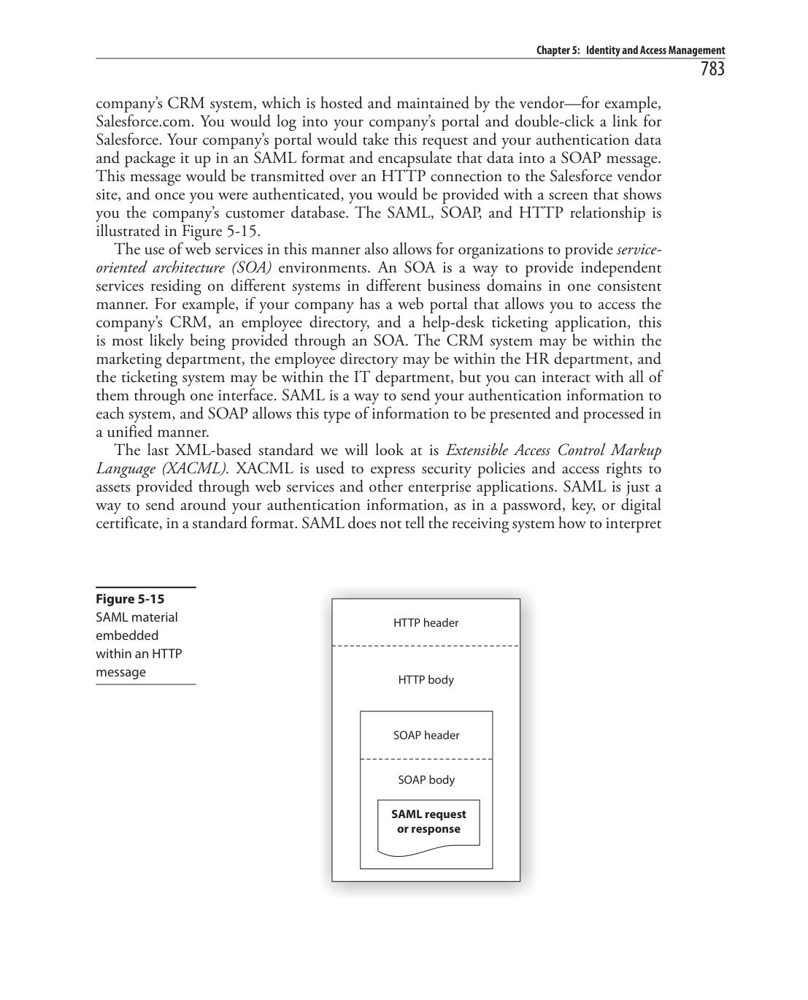
Figure 5-15
and use this authentication data. Two systems have to be configured to use the same type of authentication data. If you log into System A and provide a password and try to access System B, which only uses digital certificates for authentication purposes, your password is not going to give you access to System B’s service. So both systems have to be configured to use passwords. But just because your password is sent to System B does not mean you have complete access to all of System B’s functionality. System B has access policies that dictate the operations that specific subjects can carry out on its resources. The access policies can be developed in the XACML format and enforced by System B’s software. XACML is both an access control policy language and a processing model that allows for policies to be interpreted and enforced in a standard manner. When your password is sent to System B, there is a rules engine on that system that interprets and enforces the XACML access control policies. If the access control policies are created in the XACML format, they can be installed on both System A and System B to allow for consistent security to be enforced and managed. XACML uses a Subject element (requesting entity), a Resource element (requested entity), and an Action element (types of access). So if you request access to your company’s CRM, you are the Subject, the CRM application is the Resource, and your access parameters are outlined in the Action element.
Who develops and keeps track of all of these standardized languages? TheOrganization for the Advancement of Structured Information Standards (OASIS). This organization develops and maintains the standards for how various aspects of web-based communication are built and maintained. Web services, SOA environments, and the implementation of these different XML- based markup languages vary in nature because they allow for extensive flexibility. Because so much of the world’s communication takes place through web-based processes, it is becoming increasingly important for security professionals to understand these issues and technologies.
OpenID
OpenIDis an open standard for user authentication by third parties. It is a lot like SAML, except that the users’ credentials are maintained not by their company but by a third party such as Google, Microsoft, or Yahoo!. Why is this useful? Well, the main draw of it is that it frees up the website developers from the need to implement secure authentication mechanisms (and secure all the credentials) for their sites. Instead, they can leverage one of the big companies that already do this rather well. OpenID defines three roles:
End userThe user who wants to be authenticated in order to use a resource
- Resource partyThe server that owns the resource that the end user is trying to
- access
OpenID providerThe system (e.g., Google) in which the end user already has
- an account and which will authenticate the user to the resource party
You have probably encountered OpenID if you’ve ever tried to access a website and were presented with the option to log in using your Google identity. (Oftentimes you see an option for Google and one for Facebook in the same window, but Facebook uses its own protocol calledFacebook Connect.) The process by which you get authenticated is very similar to that previously shown in Figure 5-15, except that theservice provideris now called theresource partyand theidentity provideris now called theOpenID provider.
OAuth
OAuthis an open standard for authorization (not authentication) to third parties. The general idea is that this lets you authorize a website to use something that you control at a different website. For instance, if you have a LinkedIn account, the system might ask you to let it have access to your Google contacts in order to find your friends who already have accounts in LinkedIn. If you agree, you will next see a pop-up from Google asking whether you want to authorize LinkedIn to manage your contacts. If you agree to this, LinkedIn gains access to all your contacts until you rescind this authorization. Figure 5-16 depicts this process.
Identity as a Service
It should not be surprising to consider that cloud service providers are also able to provide identification services. Identity as a Service (IDaaS) is a type of Software as a Service (SaaS) offering that is normally configured to provide SSO, federated IdM, and password management services. Though most IDaaS vendors are focused on cloudand webcentric systems, it is also possible to leverage their products for IdM on legacy platforms within the enterprise network. Though IDaaS is a booming sector of the security industry, it is important to note that it is not without potential issues. First and foremost, some regulated industries may
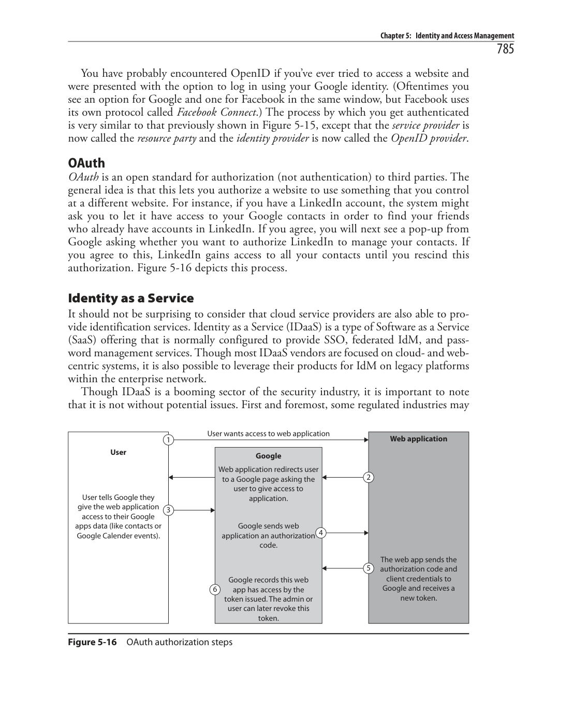
Figure 5-16OAuth authorization steps
not be able to leverage IDaaS and remain compliant. This is because a critical function (i.e., IdM) is being outsourced and the service provider may not be able to comply with all the regulatory requirements. Another concern is that some of the most critical data in the enterprise is increasingly exposed once it moves out of the enterprise enclaves. Though various cloud service providers will undoubtedly be able to provide equal or better security than the client organization, it is still an important point of discussion before making the decision to go with an IDaaS solution. Finally, there is the issue of integration. Depending on the specific vendor and offering, some legacy applications may not be supported. This too needs to be discussed ahead of signing any contracts.
Integrating Identity Services
Integration of any set of different technologies or products is typically one of the most complex and risky phases of any deployment. In order to mitigate both the complexities and risks, it is necessary to carefully characterize each product or technology as well as the systems and networks into which they will be incorporated. As the old carpentry adage goes, “Measure twice and cut once.” There are two basic approaches to architecting identity services: in-house or outsourced. The first approach, in-house, is simple because all the systems and data are located within the enterprise. In an outsourced model, on the other hand, some or all of the systems or data will be hosted by an external party. In either approach, it is important to ensure that all components play nice with each other. In the following sections we will explore some of the considerations that are common to the successful integration of these services.
Establishing Connectivity
First and foremost, we need to ensure the components are able to communicate with one another in a secure manner. The big difference between the in-house and outsourced models here is that in the former, the chokepoints are all internal to the organization’s network, while in the latter, they will also exist in the public Internet. Clearing a path for this traffic will typically mean creating new rules for firewalls and IDS/IPS. These rules must be restrictive enough to allow the IdM traffic, but nothing else, to flow between the various nodes. Depending on the systems being used, ports, protocols, and user accounts may also need to be configured in order to enable bidirectional communication.
Establishing Trust
All traffic between nodes engaged in identity services must be encrypted. (To do otherwise would defeat the whole point of this effort.) From a practical perspective, this almost certainly means that PKI in general and certificate authorities (CAs) in particular will be needed. A potential issue here is that the CAs may not be trusted by default by all the nodes. This is especially true if the enterprise has implemented its own CA internally and is deploying an outsourced service. This is easy to plan ahead of time, but could lead to some big challenges if discovered during the actual roll-out. Trust may also be needed between domains.
Incremental Testing
When dealing with complex systems, it is wise to assume that some important issue will not be covered in the plan. This is why it is important to incrementally test the integration of identity services instead of rolling out the entire system at once. Many organizations choose to roll out new services first to test accounts (i.e., not real users), then to one department or division that is used as the test case, and finally to the entire organization. For critical deployments (and one would assume that identity services would fall in this category), it is best to test as thoroughly as possible in a testbed or sandbox environment. Only then should the integration progress to real systems.
Access Control Models
Anaccess control modelis a framework that dictates how subjects access objects. It uses access control technologies and security mechanisms to enforce the rules and objectives of the model. There are three main types of access control models: discretionary, mandatory, and role based. Each model type uses different methods to control how subjects access objects, and each has its own merits and limitations. The business and security goals of an organization, along with the culture of the company and the habits of conducting business, will help prescribe what access control model it should use. Some companies use one model exclusively, whereas others combine them to be able to provide the necessary level of protection. These models are built into the core or the kernel of the different operating systems and possibly their supporting applications. Every operating system has a security kernel that enforces a reference monitor concept, which differs depending upon the type of access control model embedded into the system. For every access attempt, before a subject can communicate with an object, the security kernel reviews the rules of the access control model to determine whether the request is allowed. The following sections explain these different models, their supporting technologies, and where they should be implemented.
Discretionary Access Control
If a user creates a file, he is the owner of that file. An identifier for this user is placed in the file header and/or in an access control matrix within the operating system. Ownership might also be granted to a specific individual. For example, a manager for a certain department might be made the owner of the files and resources within her department. A system that usesdiscretionary access control (DAC)enables the owner of the resource to specify which subjects can access specific resources. This model is called discretionary because the control of access is based on the discretion of the owner. Many times department managers or business unit managers are the owners of the data within their specific department. Being the owner, they can specify who should have access and who should not. In a DAC model, access is restricted based on the authorization granted to the users. This means users are allowed to specify what type of access can occur to the objects
they own. If an organization is using a DAC model, the network administrator can allow resource owners to control who has access to their files. The most common implementation of DAC is through ACLs, which are dictated and set by the owners and enforced by the operating system. This can make a user’s ability to access information dynamic versus the more static role of mandatory access control (MAC). Most of the operating systems you may be used to dealing with are based on DAC models, such as all Windows, Linux, and OS X systems and most flavors of Unix. When you look at the properties of a file or directory and see the choices that allow you to control which users can have access to this resource and to what degree, you are witnessing an instance of ACLs enforcing a DAC model. DACs can be applied to both the directory tree structure and the files it contains. The PC world has access permissions of No Access, Read (r), Write (w), Execute (x), Delete (d), Change (c), and Full Control. The Read attribute lets you read the file but not make changes. The Change attribute allows you to read, write, execute, and delete the file but does not let you change the ACLs or the owner of the files. Obviously, the attribute of Full Control lets you make any changes to the file and its permissions and ownership.
Identity-Based Access Control
DAC systems grant or deny access based on the identity of the subject. The identity can be a user identity or a group membership. So, for example, a data owner can choose to allow Bob (user identity) and the Accounting group (group membership identity) to access his file.
While DAC systems provide a lot of flexibility to the user and less administration for IT, it is also the Achilles’ heel of operating systems. Malware can install itself and work under the security context of the user. For example, if a user opens an attachment that is infected with a virus, the code can install itself in the background without the user’s being aware of this activity. This code basically inherits all the rights and permissions that the user has and can carry out all the activities the user can on the system. It can send copies of itself out to all the contacts listed in the user’s e-mail client, install a back door, attack other systems, delete files on the hard drive, and more. The user is actually giving rights to the virus to carry out its dirty deeds, because the user has very powerful discretionary rights and is considered the owner of many objects on the system. And the fact that many users are assigned local administrator or root accounts means that once malware is installed, it can do anything on a system. As we have said before, there is a constant battle between functionality and security. To allow for the amount of functionality we demand of our operating systems today, they have to work within a DAC model—but because they work in a DAC model, extensive compromises are always possible. While we may want to give users some freedom to indicate who can access the files that they create and other resources on their systems that they are configured to be “owners” of, we really don’t want them dictating all access decisions in environments with assets
that need to be protected. We just don’t trust them that much, and we shouldn’t. In most environments user profiles are created and loaded on user workstations that indicate the level of control the user does and does not have. As a security administrator you might configure user profiles so that users cannot change the system’s time, alter system configuration files, access a command prompt, or install unapproved applications. This type of access control is referred to asnondiscretionary, meaning that access decisions are not made at the discretion of the user. Nondiscretionary access controls are put into place by an authoritative entity (usually a security administrator) with the goal of protecting the organization’s most critical assets.
Mandatory Access Control
In amandatory access control (MAC)model, users do not have the discretion of determining who can access objects as in a DAC model. An operating system that is based upon a MAC model greatly reduces the amount of rights, permissions, and functionality a user has for security purposes. In most systems based upon the MAC model, a user cannot install software, change file permissions, add new users, etc. The system can be used by the user for very focused and specific purposes, and that is it. These systems are usually very specialized and are in place to protected highly classified data. Most people have never interacted with a MAC-based system because they are used by governmentoriented agencies that maintain top-secret information. The MAC model is much more structured and strict than the DAC model and is based on a security label system. Users are given a security clearance (secret, top secret, confidential, and so on), and data is classified in the same way. The clearance and classification data is stored in the security labels, which are bound to the specific subjects and objects. When the system makes a decision about fulfilling a request to access an object, it is based on the clearance of the subject, the classification of the object, and the security policy of the system. The rules for how subjects access objects are made by theorganization’s security policy, configured by the security administrator, enforced by the operating system, and supported by security technologies.
Traditional MAC systems are based upon multilevel security policies, which outline how data at different classification levels is to be protected. Multilevel security (MLS) systems allow data at different classification levels to be accessed and interacted with by users with different clearance levels simultaneously. Security labels are attached to all objects; thus, every file, directory, and device has its own security label with its classification information. A user may have a security clearance of secret, and the data he requests may have a security label with the classification of top secret. In this case, the user will be denied because his clearance is not equivalent or does not dominate (is not equal to or higher than) the classification of the object.
The terms “security labels” and “sensitivity labels” can be used interchangeably.
Each subject and object must have an associated label with attributes at all times, because this is part of the operating system’s access-decision criteria. Each subject and object does not require a physically unique label, but can be logically associated. For example, all subjects and objects on Server 1 can share the same label of secret clearance and classification. This type of model is used in environments where information classification and confidentiality is of utmost importance, such as military institutions, government agencies, and government contract companies. Special types of Unix systems are developed based on the MAC model. A company cannot simply choose to turn on either DAC or MAC. It has to purchase an operating system that has been specifically designed to enforce MAC rules. DAC systems do not understand security labels, classifications, or clearances, and thus cannot be used in institutions that require this type of structure for access control. A publicly released MAC system is SE Linux, developed by the NSA and Secure Computing. Trusted Solaris is a product based on the MAC model that most people are familiar with (relative to other MAC products). While MAC systems enforce strict access control, they also provide a wide range of security, particularly dealing with malware. Malware is the bane of DAC systems. Viruses, worms, and rootkits can be installed and run as applications on DAC systems. Since users that work within a MAC system cannot install software, the operating system does not allow any type of software, including malware, to be installed while the user is logged in. But while MAC systems might seem an answer to all our security prayers, they have very limited user functionality, require a lot of administrative overhead, are very expensive, and are not user friendly. DAC systems are general-purpose computers, while MAC systems serve a very specific purpose.
DAC systems are discretionary and MAC systems are considered nondiscretionary because the users cannot make access decisions based upon their own discretion (choice).
Sensitivity Labels
When the MAC model is being used, every subject and object must have a sensitivity label, also called a security label. It contains a classification and different categories. The classification indicates the sensitivity level, and the categories enforce need-to-know rules. Figure 5-17 illustrates a sensitivity label. The classifications follow a hierarchical structure, with one level being more trusted than another. However, the categories do not follow a hierarchical scheme, because they
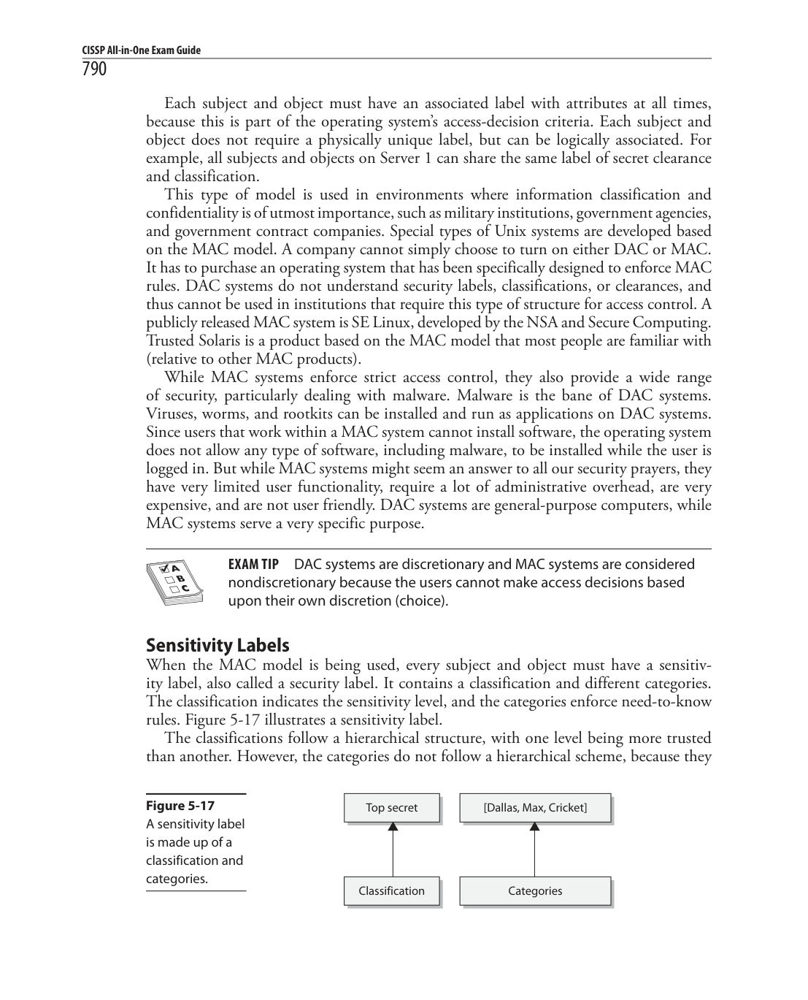
Figure 5-17
represent compartments of information within a system. The categories can correspond to departments (UN, Information Warfare, Treasury), projects (CRM, AirportSecurity, 2015Budget), or management levels. In a military environment, the classifications could be top secret, secret, confidential, and unclassified. Each classification is more trusted than the one below it. A commercial organization might use confidential, proprietary, corporate, and sensitive. The definition of the classification is up to the organization and should make sense for the environment in which it is used. The categories portion of the label enforces need-to-know rules. Just because someone has a top-secret clearance does not mean she now has access to all top-secret information. She must also have a need to know. As shown in Figure 5-17, if Cheryl has a top-secret clearance but does not have a need to know that is sufficient to access any of the listed categories (Dallas, Max, Cricket), she cannot look at this object.
In MAC implementations, the system makes access decisions by comparing the subject’s clearance and need-to-know level to the object’s security label. In DAC, the system compares the subject’s identity to the ACL on the resource. Software and hardware guards allow the exchange of data between trusted (high assurance) and less trusted (low assurance) systems and environments. For instance, if you were working on a MAC system (working in the dedicated security mode of secret) and you needed it to communicate to a MAC database (working in multilevel security mode, which goes up to top secret), the two systems would provide different levels of protection. If a system with lower assurance can directly communicate with a system of high assurance, then security vulnerabilities and compromises could be introduced. A software guard is really just a front-end product that allows interconnectivity between systems working at different security levels. Different types of guards can be used to carry out filtering, processing requests, data blocking, and data sanitization. A hardware guard can be implemented, which is a system with two NICs connecting the two systems that need to communicate with one another. Guards can be used to connect different MAC systems working in different security modes, and they can be used to connect different networks working at different security levels. In many cases, the less trusted system can send messages to the more trusted system and can only receive acknowledgments back. This is common when e-mail messages need to go from less trusted systems to more trusted classified systems.
Role-Based Access Control
Arole-based access control (RBAC)model uses a centrally administrated set of controls to determine how subjects and objects interact. The access control levels can be based upon the necessary operations and tasks a user needs to carry out to fulfill her responsibilities without an organization. This type of model lets access to resources be based on the role the user holds within the company. The more traditional access control administration is based on just the DAC model, where access control is specified at the object level with ACLs. This approach is more complex because the administrator must translate
an organizational authorization policy into permission when configuring ACLs. As the number of objects and users grows within an environment, users are bound to be granted unnecessary access to some objects, thus violating the least-privilege rule and increasing the risk to the company. The RBAC approach simplifies access control administration by allowing permissions to be managed in terms of user job roles. In an RBAC model, a role is defined in terms of the operations and tasks the role will carry out, whereas a DAC model outlines which subjects can access what objects based upon the individual user identity. Let’s say we need a research and development analyst role. We develop this role not only to allow an individual to have access to all product and testing data, but also, and more importantly, to outline the tasks and operations that the role can carry out on this data. When the analyst role makes a request to access the new testing results on the file server, in the background the operating system reviews the role’s access levels before allowing this operation to take place.
Introducing roles also introduces the difference between rights being assigned explicitly and implicitly. If rights and permissions are assigned explicitly, they are assigned directly to a specific individual. If they are assigned implicitly, they are assigned to a role or group and the user inherits those attributes. An RBAC model is the best system for a company that has high employee turnover. If John, who is mapped to the Contractor role, leaves the company, then Chrissy, his replacement, can be easily mapped to this role. That way, the administrator does not need to continually change the ACLs on the individual objects. He only needs to create a role (Contractor), assign permissions to this role, and map the new user to this role. As discussed in the “Identity Management” section, organizations are moving more toward role-based access models to properly control identity and provisioning activities. The formal RBAC model has several approaches to security that can be used in software and organizations.
Core RBAC
This component will be integrated in every RBAC implementation because it is the foundation of the model. Users, roles, permissions, operations, and sessions are defined and mapped according to the security policy. The core RBAC
Has a many-to-many relationship among individual users and privileges
- Uses a session as a mapping between a user and a subset of assigned roles
- Accommodates traditional but robust group-based access control
- Many users can belong to many groups with various privileges outlined for each group. When the user logs in (this is a session), the various roles and groups this user has been assigned will be available to the user at one time. If you are a member of the Accounting
role, RD group, and Administrative role, when you log on, all of the permissions assigned to these various groups are available to you. This model provides robust options because it can include other components when making access decisions, instead of just basing the decision on a credential set. The RBAC system can be configured to also include time of day, location of role, day of the week, and so on. This means other information, not just the user ID and credential, is used for access decisions.
Hierarchical RBAC
This component allows the administrator to set up an organizational RBAC model that maps to the organizational structures and functional delineations required in a specific environment. This is very useful since businesses are already set up in a personnel hierarchical structure. In most cases, the higher you are in the chain of command, the more access you will most likely have. Hierarchical RBAC
Uses role relations in defining user membership and privilege inheritance. For
- example, the Nurse role can access a certain set of files, and the Lab Technician role can access another set of files. The Doctor role inherits the permissions and access rights of these two roles and has more elevated rights already assigned to the Doctor role. So hierarchical RBAC is an accumulation of rights and permissions of other roles.
Reflects organizational structures and functional delineations.
- Supports two types of hierarchies:
- Limited hierarchiesOnly one level of hierarchy is allowed (Role 1 inherits
- from Role 2 and no other role)
General hierarchiesAllows for many levels of hierarchies (Role 1 inherits
- Role 2’s and Role 3’s permissions)
Hierarchies are a natural means of structuring roles to reflect an organization’s lines of authority and responsibility. Role hierarchies define an inheritance relation among roles. Different separations of duties are provided under this model:
Static Separation of Duty (SSD) Relations through RBACThis would be
- used to deter fraud by constraining the combination of privileges (such as, the user cannot be a member of both the Cashier and Accounts Receivable groups).
Dynamic Separation of Duties (DSD) Relations through RBACThis would
- be used to deter fraud by constraining the combination of privileges that can be activated in any session (for instance, the user cannot be in both the Cashier and Cashier Supervisor roles at the same time, but the user can be a member of both). This one is a little more confusing. It means José is a member of both the Cashier and Cashier Supervisor roles. If he logs in as a Cashier, the Supervisor role is unavailable to him during that session. If he logs in as Cashier Supervisor, the Cashier role is unavailable to him during that session.
Role-based access control can be managed in the following ways:
- Non-RBACUsers are mapped directly to applications and no roles are used.
- Limited RBACUsers are mapped to multiple roles and mapped directly to
- other types of applications that do not have role-based access functionality.
Hybrid RBACUsers are mapped to multiapplication roles with only
- selected rights assigned to those roles.
Full RBACUsers are mapped to enterprise roles.
The privacy of many different types of data needs to be protected, which is why many organizations have privacy officers and privacy policies today. The current access control models (MAC, DAC, RBAC) do not lend themselves to protecting data of a given sensitivity level, but instead limit the functions that the users can carry out. For example, managers may be able to access a Privacy folder, but there needs to be more detailed access control that indicates that they can access customers’ home addresses but not Social Security numbers. This is referred to asprivacy-aware RBAC.
RBAC, MAC, and DAC
A lot of confusion exists regarding whether RBAC is a type of DAC model or a type of MAC model. Different sources claim different things, but in fact it is amodel in its own right. In the 1960s and 1970s, the U.S. military and NSA did a lot of research on the MAC model. DAC, which also sprang to life in the 1960s and 1970s, has its roots in the academic and commercial research laboratories. The RBAC model, which started gaining popularity in the 1990s, can be used in combination with MAC and DAC systems. For the most up-to-date information on the RBAC model, go to http://csrc.nist.gov/groups/SNS/rbac, which has documents that describe an RBAC standard and independent model, with the goal of clearing up this continual confusion. In reality, operating systems can be created to use one, two, or all three of these models in some form, but just because they can be used together does not mean that they are not their own individual models with their own strict access control rules.
Rule-Based Access Control
Rule-based access controluses specific rules that indicate what can and cannot happen between a subject and an object. This access control model is built on top of traditional RBAC and is thus commonly called RB-RBAC to disambiguate the otherwise overloaded RBAC acronym. It is based on the simple concept of “if X then Y” programming rules, which can be used to provide finer-grained access control to resources. Before a subject can access an object in a certain circumstance, it must meet a set of predefined rules. This
can be simple and straightforward, as in, “If the user’s ID matches the unique user ID value in the provided digital certificate, then the user can gain access.” Or there could be a set of complex rules that must be met before a subject can access an object. For example, “If the user is accessing the system between Monday and Friday and between 8a.m. and 5p.m., and if the user’s security clearance equals or dominates the object’s classification, and if the user has the necessary need to know, then the user can access the object.” Rule-based access control is not necessarily identity-based. The DAC model is identitybased. For example, an identity-based control would stipulate that Tom Jones can read File1 and modify File2. So when Tom attempts to access one of these files, the operating system will check his identity and compare it to the values within an ACL to see if Tom can carry out the operations he is attempting. In contrast, here is a rule-based example: A company may have a policy that dictates that e-mail attachments can only be 5MB or smaller. This rule affects all users. If rule-based was identity-based, it would mean that Sue can accept attachments of 10MB and smaller, Bob can accept attachments 2MB and smaller, and Don can only accept attachments 1MB and smaller. This would be a mess and too confusing. Rule-based access controls simplify this by setting a rule that will affect all users across the board—no matter what their identity is. Rule-based access allows a developer to define specific and detailed situations in which a subject can or cannot access an object and what that subject can do once access is granted. Traditionally, rule-based access control has been used in MAC systems as an enforcement mechanism of the complex rules of access that MAC systems provide. Today, rule-based access is used in other types of systems and applications as well. Content filtering uses If-Then programming languages, which is a way to compare data or an activity to a long list of rules. For example, “If an e-mail message contains the word ‘Viagra,’ then disregard. If an e-mail message contains the words ‘sex’ and ‘free,’ then disregard,” and so on. Many routers and firewalls use rules to determine which types of packets are allowed into a network and which are rejected. Rule-based access control is a type of compulsory control, because the administrator sets the rules and the users cannot modify these controls.
Access Control Models
The main characteristics of the four different access control models are important to understand.
DACData owners decide who has access to resources, and ACLs are used
- to enforce these access decisions.
MACOperating systems enforce the system’s security policy through the
- use of security labels.
RBACAccess decisions are based on each subject’s role and/or functional
- position.
RB-RBACAdds on to RBAC by imposing rules that further restrict access
- decisions.
Access Control Techniques and Technologies
Once an organization determines what type of access control model it is going to use, it needs to identify and refine its technologies and techniques to support that model. The following sections describe the different access controls and technologies available to support different access control models.
Constrained User Interfaces
Constrained user interfaces restrict users’ access abilities by not allowing them to request certain functions or information, or to have access to specific system resources. Three major types of constrained user interfaces exist: menus and shells, database views, and physically constrained interfaces. When menu and shell restrictions are used, the options users are given are the commands they can execute. For example, if an administrator wants users to be able to execute only one program, that program would be the only choice available on the menu. This limits the users’ functionality. Ashellis a type of virtual environment within a system. It is the users’ interface to the operating system and works as a command interpreter. If restricted shells were used, the shell would contain only the commands the administrator wants the users to be able to execute. Many times, a database administrator will configure a database so users cannot see fields that require a level of confidentiality.Database viewsare mechanisms used to restrict user access to data contained in databases. If the database administrator wants managers to be able to view their employees’ work records but not their salary information, then the salary fields would not be available to these types of users. Similarly, when payroll employees look at the same database, they will be able to view the salary information but not the work history information. This example is illustrated in Figure 5-18.
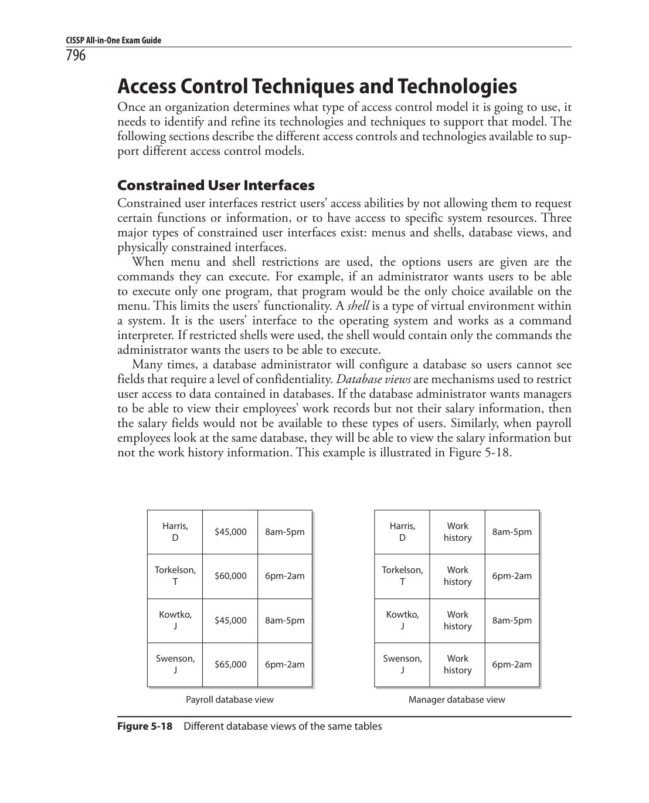
Figure 5-18Different database views of the same tables
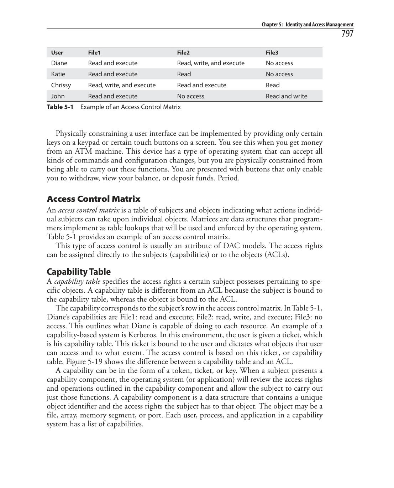
DianeRead and executeRead, write, and executeNo access
Physically constraining a user interface can be implemented by providing only certain keys on a keypad or certain touch buttons on a screen. You see this when you get money from an ATM machine. This device has a type of operating system that can accept all kinds of commands and configuration changes, but you are physically constrained from being able to carry out these functions. You are presented with buttons that only enable you to withdraw, view your balance, or deposit funds. Period.
Access Control Matrix
Anaccess control matrixis a table of subjects and objects indicating what actions individual subjects can take upon individual objects. Matrices are data structures that programmers implement as table lookups that will be used and enforced by the operating system. Table 5-1 provides an example of an access control matrix. This type of access control is usually an attribute of DAC models. The access rights can be assigned directly to the subjects (capabilities) or to the objects (ACLs).
Capability Table
Acapability tablespecifies the access rights a certain subject possesses pertaining to specific objects. A capability table is different from an ACL because the subject is bound to the capability table, whereas the object is bound to the ACL. The capability corresponds to the subject’s row in the access control matrix. InTable 5-1, Diane’s capabilities are File1: read and execute; File2: read, write, and execute; File3: no access. This outlines what Diane is capable of doing to each resource. An example of a capability-based system is Kerberos. In this environment, the user is given a ticket, which is his capability table. This ticket is bound to the user and dictates what objects that user can access and to what extent. The access control is based on this ticket, or capability table. Figure 5-19 shows the difference between a capability table and an ACL. A capability can be in the form of a token, ticket, or key. When a subject presents a capability component, the operating system (or application) will review the access rights and operations outlined in the capability component and allow the subject to carry out just those functions. A capability component is a data structure that contains a unique object identifier and the access rights the subject has to that object. The object may be a file, array, memory segment, or port. Each user, process, and application in a capability system has a list of capabilities.
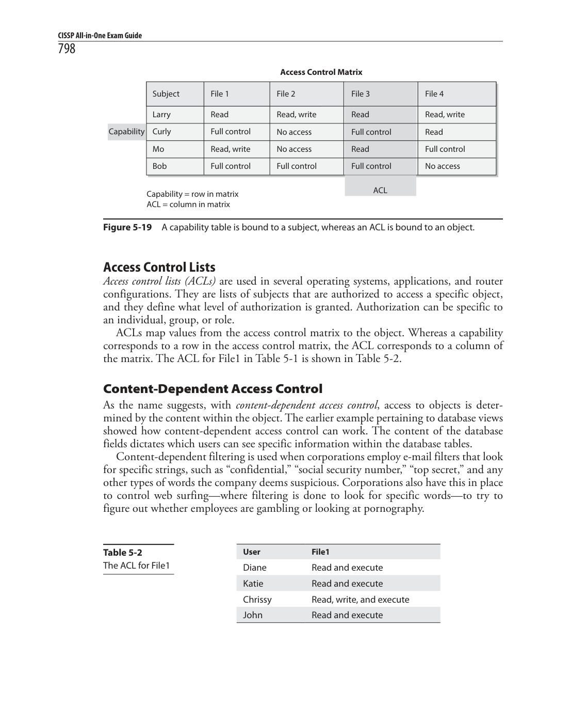
Figure 5-19A capability table is bound to a subject, whereas an ACL is bound to an object.
Access Control Lists
Access control lists (ACLs)are used in several operating systems, applications, and router configurations. They are lists of subjects that are authorized to access a specific object, and they define what level of authorization is granted. Authorization can be specific to an individual, group, or role. ACLs map values from the access control matrix to the object. Whereas a capability corresponds to a row in the access control matrix, the ACL corresponds to a column of the matrix. The ACL for File1 in Table 5-1 is shown in Table 5-2.
Content-Dependent Access Control
As the name suggests, withcontent-dependent access control, access to objects is determined by the content within the object. The earlier example pertaining to database views showed how content-dependent access control can work. The content of the database fields dictates which users can see specific information within the database tables. Content-dependent filtering is used when corporations employ e-mail filters that look for specific strings, such as “confidential,” “social security number,” “top secret,” and any other types of words the company deems suspicious. Corporations also have this in place to control web surfing—where filtering is done to look for specific words—to try to figure out whether employees are gambling or looking at pornography.
Context-Dependent Access Control
Context-dependent access controldiffers from content-dependent access control in that it makes access decisions based on the context of a collection of information rather than on the sensitivity of the data. A system that is using context-dependent access control “reviews the situation” and then makes a decision. For example, firewalls make contextbased access decisions when they collect state information on a packet before allowing it into the network. A stateful firewall understands the necessary steps of communication for specific protocols. For example, in a TCP connection, the sender sends a SYN packet, the receiver sends a SYN/ACK, and then the sender acknowledges that packet with an ACK packet. A stateful firewall understands these different steps and will not allow packets to go through that do not follow this sequence. So, if a stateful firewall receives a SYN/ACK and there was not a previous SYN packet that correlates with this connection, the firewall understands this is not right and disregards the packet. This is what stateful means—something that understands the necessary steps of a dialog session. And this is an example of context-dependent access control, where the firewall understands thecontextof what is going on and includes that as part of its access decision. Some software can track a user’s access requests in sequence and make decisions based upon the previous access requests. For example, let’s say that we have a database that contains information about our military’s mission and efforts. A user might have a secret clearance and thus can access data with this level of classification. But if he accesses a data set that indicates a specific military troop location, then accesses a different data set that indicates the new location this military troop will be deployed to, and then accesses another data set that specifies the types of weapons that are being shipped to the new troop location, he might be able to figure out information that is classified as top secret, which is above his classification level. While it is okay that he knows that there is a military troop located in Kuwait, it is not okay that he knows that this troop is being deployed to Libya with fully armed drones. This is top-secret information that is outside his clearance level. To ensure that a user cannot piece these different data sets together and figure out a secret we don’t want him to know, but still allow him access to specific data sets so he can carry out his job, we would need to implement software that can track his access requests. Each access request he makes is based upon his previous requests. So while he could access data set A, then data set B, he cannot access data sets A, B, and C.
Access Control Administration
Once an organization develops a security policy supporting procedures, standards, and guidelines, it must choose the type of access control model: DAC, MAC, or RBAC. After choosing a model, the organization must select and implement different access control technologies and techniques. Access control matrices; restricted interfaces; and contentdependent, context-dependent, and rule-based controls are just a few of the choices. If the environment does not require a high level of security, the organization will choose discretionary and/or role-based. The DAC model enables data owners to allow other users to access their resources, so an organization should choose the DAC model
only if it is fully aware of what it entails. If an organization has a high turnover rate and/or requires a more centralized access control method, the role-based model is more appropriate. If the environment requires a higher security level and only the administrator should be able to grant access to resources, then a MAC model is the best choice. What is left to work out is how the organization will administer the access control model. Access control administration comes in two basic flavors: centralized and decentralized. The decision makers should understand both approaches so they choose and implement the proper one to achieve the level of protection required.
Access Control Techniques
Access control techniques are used to support the access control models.
Access control matrixTable of subjects and objects that outlines their
- access relationships
Access control listBound to an object and indicates what subjects can
- access it and what operations they can carry out
Capability tableBound to a subject and indicates what objects that
- subject can access and what operations it can carry out
Content-based accessBases access decisions on the sensitivity of the data,
- not solely on subject identity
Context-based accessBases access decisions on the state of the situation,
- not solely on identity or content sensitivity
Restricted interfaceLimits the user’s environment within the system, thus
- limiting access to objects
Centralized Access Control Administration
Acentralized access control administrationmethod is basically what it sounds like: one entity (department or individual) is responsible for overseeing access to all corporate resources. This entity configures the mechanisms that enforce access control, processes any changes that are needed to a user’s access control profile, disables access when necessary, and completely removes these rights when a user is terminated, leaves the company, or moves to a different position. This type of administration provides a consistent and uniform method of controlling users’ access rights. It supplies strict control over data because only one entity has the necessary rights to change access control profiles and permissions. Although this provides for a more consistent and reliable environment, it can be a slow one, because all changes must be processed by one entity. The following sections present some examples of centralized remote access control technologies. Each of these authentication protocols is referred to as an AAA protocol,
which stands for authentication, authorization, and auditing. (Some resources have the last A stand for accounting, but it is the same functionality—just a different name.) Depending upon the protocol, there are different ways to authenticate a user in this client/server architecture. The traditional authentication protocols are Password Authentication Protocol (PAP), Challenge Handshake Authentication Protocol (CHAP), and a newer method referred to as Extensible Authentication Protocol (EAP). Each of these authentication protocols is discussed at length in Chapter 6.
RADIUS
Remote Authentication Dial-In User Service (RADIUS)is a network protocol that provides client/server authentication and authorization, and audits remote users. A network may have access servers, a modem pool, DSL, ISDN, or a T1 line dedicated for remote users to communicate through. The access server requests the remote user’s logon credentials and passes them back to a RADIUS server, which houses the usernames and password values. The remote user is a client to the access server, and the access server is a client to the RADIUS server. Most ISPs today use RADIUS to authenticate customers before they are allowed access to the Internet. The access server and customer’s software negotiate through a handshake procedure and agree upon an authentication protocol (PAP, CHAP, or EAP). The customer provides to the access server a username and password. This communication takes place over a Point-to-Point Protocol (PPP) connection. The access server and RADIUS server communicate over the RADIUS protocol. Once the authentication is completed properly, the customer’s system is given an IP address and connection parameters, and is allowed access to the Internet. The access server notifies the RADIUS server when the session starts and stops for billing purposes. RADIUS is also used within corporate environments to provide road warriors and home users access to network resources. RADIUS allows companies to maintain user profiles in a central database. When a user dials in and is properly authenticated, a preconfigured profile is assigned to him to control what resources he can and cannot access. This technology allows companies to have a single administered entry point, which provides standardization in security and a simplistic way to track usage and network statistics. RADIUS was developed by Livingston Enterprises for its network access server product series, but was then published as a set of standards (RFC 2865 and RFC 2866). This means it is an open protocol that any vendor can use and manipulate so it will work within its individual products. Because RADIUS is an open protocol, it can be used in different types of implementations. The format of configurations and user credentials can be held in LDAP servers, various databases, or text files. Figure 5-20 shows some examples of possible RADIUS implementations.
TACACS
Terminal Access Controller Access Control System (TACACS)has a very funny name. Not funny ha-ha, but funny “huh?” TACACS has been through three generations: TACACS, Extended TACACS (XTACACS), and TACACS+. TACACS combines its authentication
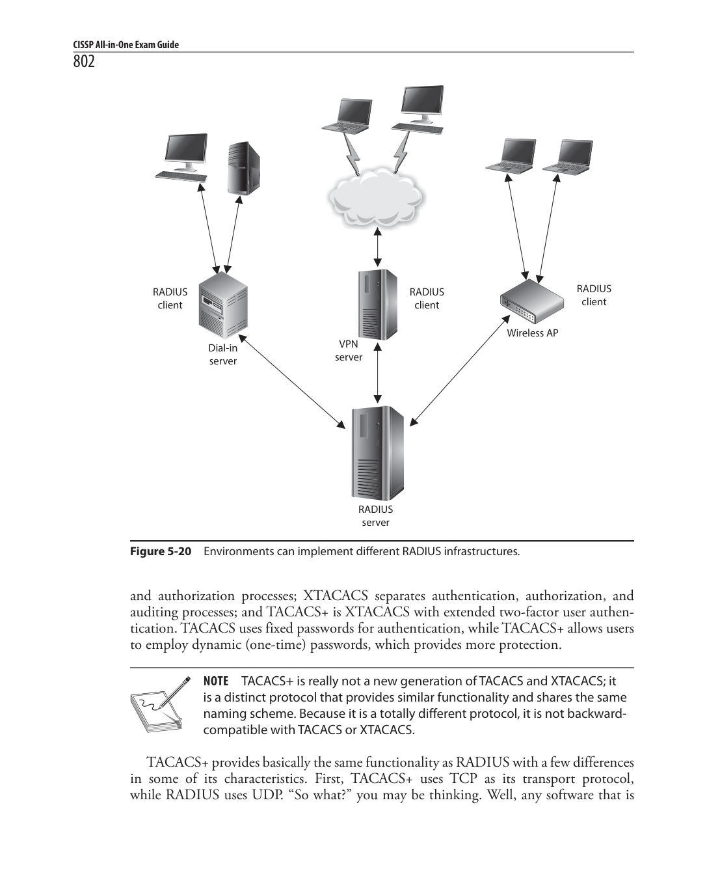
Figure 5-20Environments can implement different RADIUS infrastructures.
and authorization processes; XTACACS separates authentication, authorization, and auditing processes; and TACACS+ is XTACACS with extended two-factor user authentication. TACACS uses fixed passwords for authentication, while TACACS+ allows users to employ dynamic (one-time) passwords, which provides more protection.
TACACS+ is really not a new generation of TACACS and XTACACS; it is a distinct protocol that provides similar functionality and shares the same naming scheme. Because it is a totally different protocol, it is not backwardcompatible with TACACS or XTACACS. TACACS+ provides basically the same functionality as RADIUS with a few differences in some of its characteristics. First, TACACS+ uses TCP as its transport protocol, while RADIUS uses UDP. “So what?” you may be thinking. Well, any software that is
developed to use UDP as its transport protocol has to be “fatter” with intelligent code that will look out for the items that UDP will not catch. Since UDP is a connectionless protocol, it will not detect or correct transmission errors. So RADIUS must have the necessary code to detect packet corruption, long timeouts, or dropped packets. Since the developers of TACACS+ chose to use TCP, the TACACS+ software does not need to have the extra code to look for and deal with these transmission problems. TCP is a connection-oriented protocol, and that is its job and responsibility. RADIUS encrypts the user’s password only as it is being transmitted from the RADIUS client to the RADIUS server. Other information, as in the username, accounting, and authorized services, is passed in cleartext. This is an open invitation for attackers to capture session information for replay attacks. Vendors who integrate RADIUS into their products need to understand these weaknesses and integrate other security mechanisms to protect against these types of attacks. TACACS+ encrypts all of this data between the client and server and thus does not have the vulnerabilities inherent in the RADIUS protocol. The RADIUS protocol combines the authentication and authorization functionality. TACACS+ uses a true authentication, authorization, and accounting/audit (AAA) architecture,whichseparatestheauthentication,authorization,andaccounting functionalities. This gives a network administrator more flexibility in how remote users are authenticated. For example, if Tomika is a network administrator and has been assigned the task of setting up remote access for users, she must decide between RADIUS and TACACS+. If the current environment already authenticates all of the local users through a domain controller using Kerberos, then Tomika can configure the remote users to be authenticated in this same manner, as shown in Figure 5-21. Instead of having to maintain a remote access server database of remote user credentials and a database within Active Directory for local users, Tomika can just configure and maintain one database. The separation of authentication, authorization, and accounting functionality provides this capability. TACACS+ also enables the network administrator to define more granular user profiles, which can control the actual commands users can carry out. Remember that RADIUS and TACACS+ are both protocols, and protocols are just agreed-upon ways of communication. When a RADIUS client communicates with a RADIUS server, it does so through the RADIUS protocol, which is really just a set of defined fields that will accept certain values. These fields are referred to as attribute-value pairs (AVPs). As an analogy, suppose Ivan sends you a piece of paper that has several different boxes drawn on it. Each box has a headline associated with it: first name, last name, hair color, shoe size. You fill in these boxes with your values and send it back to her. This is basically how protocols work; the sending system just fills in the boxes (fields) with the necessary information for the receiving system to extract and process. Since TACACS+ allows for more granular control on what users can and cannot do, TACACS+ has more AVPs, which allows the network administrator to define ACLs, filters, user privileges, and much more. Table 5-3 points out the differences between RADIUS and TACACS+. So,RADIUSistheappropriateprotocolwhensimplisticusername/password authentication can take place and users only need an Accept or Deny for obtaining access,
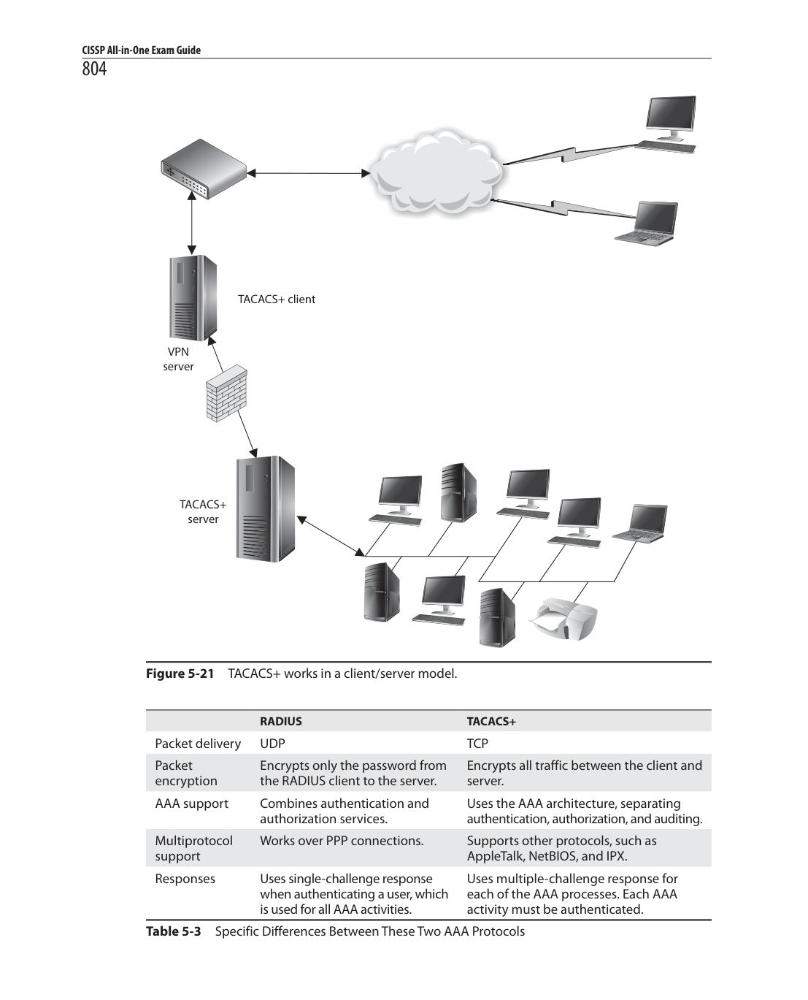
Figure 5-21TACACS+ works in a client/server model.
as in ISPs. TACACS+ is the better choice for environments that require more sophisticated authentication steps and tighter control over more complex authorization activities, as in corporate networks.
Diameter
Diameteris a protocol that has been developed to build upon the functionality of RADIUS and overcome many of its limitations. The creators of this protocol decided to call it Diameter as a play on the term RADIUS—as inthe diameter is twice the radius. Diameter is another AAA protocol that provides the same type of functionality as RADIUS and TACACS+ but also provides more flexibility and capabilities to meet the new demands of today’s complex and diverse networks. At one time, all remote communication took place over PPP and Serial Line Internet Protocol (SLIP) connections, and users authenticated themselves through PAP or CHAP. Those were simpler, happier times when our parents had to walk uphill both ways to school wearing no shoes. As with life, technology has become much more complicated, and there are more devices and protocols to choose from than ever before. Today, we want our wireless devices and smartphones to be able to authenticate themselves to our networks, and we use roaming protocols, Mobile IP, Ethernet over PPP, Voice over IP (VoIP), and other crazy stuff that the traditional AAA protocols cannot keep up with. So the smart people came up with a new AAA protocol, Diameter, that can deal with these issues and many more.
Mobile IP
This technology allows a user to move from one network to another and still use the same IP address. It is an improvement upon the IP protocol because it allows a user to have ahome IP address, associated with his home network, and acare-of address. The care-of address changes as he moves from one network to the other. All traffic that is addressed to his home IP address is forwarded to his care-of address.
Diameter protocol consists of two portions. The first is the base protocol, which provides the secure communication among Diameter entities, feature discovery, and version negotiation. The second is the extensions, which are built on top of the base protocol to allow various technologies to use Diameter for authentication. Up until the conception of Diameter, IETF had individual working groups who defined how VoIP, Fax over IP (FoIP), Mobile IP, and remote authentication protocols work. Defining and implementing them individually in any network can easily result in too much confusion and interoperability. It requires customers to roll out and configure several different policy servers and increases the cost with each new added service. Diameter provides a base protocol, which defines header formats, security options, commands, and AVPs. This base protocol allows for extensions to tie in other services, such as VoIP, FoIP, Mobile IP, wireless, and cell phone authentication. So Diameter can be used as an AAA protocol for all of these different uses. As an analogy, consider a scenario in which ten people all need to get to the same hospital, which is where they all work. They all have different jobs (doctor, lab technician,
nurse, janitor, and so on), but they all need to end up at the same location. So, they can either all take their own cars and their own routes to the hospital, which takes up more hospital parking space and requires the gate guard to authenticate each and every car, or they can take a bus. The bus is the common element (base protocol) to get the individuals (different services) to the same location (networked environment). Diameter provides the common AAA and security framework that different services can work within. RADIUS and TACACS+ are client/server protocols, which means the server portion cannot send unsolicited commands to the client portion. The server portion can only speak when spoken to. Diameter is a peer-based protocol that allows either end to initiate communication. This functionality allows the Diameter server to send a message to the access server to request the user to provide another authentication credential if she is attempting to access a secure resource. Diameter is not directly backward-compatible with RADIUS but provides an upgrade path. Diameter uses TCP and AVPs, and provides proxy server support. It has better error detection and correction functionality than RADIUS, as well as better failover properties, and thus provides better network resilience. Diameter has the functionality and ability to provide the AAA functionality for other protocols and services because it has a large AVP set. RADIUS has 2(256) AVPs, while Diameter has 2(a whole bunch). Recall from earlier in the chapter that AVPs are like boxes drawn on a piece of paper that outline how two entities can communicate back and forth. So, having more AVPs allows for more functionality and services to exist and communicate between systems. Diameter provides the following AAA functionality:
Authentication:
PAP, CHAP, EAP
- End-to-end protection of authentication information
- Replay attack protection
- Authorization:
Redirects, secure proxies, relays, and brokers
- State reconciliation
- Unsolicited disconnect
- Reauthorization on demand
- Accounting:
Reporting, roaming operations (ROAMOPS) accounting, event monitoring
- You may not be familiar with Diameter because it is relatively new. It probably won’t be taking over the world tomorrow, but it will be used by environments that need to
provide the type of services being demanded of them, and then slowly seep down into corporate networks as more products are available. RADIUS has been around for a long time and has served its purpose well, so don’t expect it to exit the stage any time soon.
Decentralized Access Control Administration
Adecentralized access control administrationmethod gives control of access to the people closer to the resources—the people who may better understand who should and should not have access to certain files, data, and resources. In this approach, it is often the functional manager who assigns access control rights to employees. An organization may choose to use a decentralized model if its managers have better judgment regarding which users should be able to access different resources, and there is no business requirement that dictates strict control through a centralized body is necessary. Changes can happen faster through this type of administration because not just one entity is making changes for the whole organization. However, there is a possibility that conflicts of interest could arise that may not benefit the organization. Because no single entity controls access as a whole, different managers and departments can practice security and access control in different ways. This does not provide uniformity and fairness across the organization. One manager could be too busy with daily tasks and decide it is easier to let everyone have full control over all the systems in the department. Another department may practice a stricter and detail-oriented method of control by giving employees only the level of permissions needed to fulfill their tasks. Also, certain controls can overlap, in which case actions may not be properly proscribed or restricted. If Mike is part of the accounting group and recently has been under suspicion for altering personnel account information, the accounting manager may restrict his access to these files to read-only access. However, the accounting manager does not realize that Mike still has full-control access under the network group he is also a member of. This type of administration does not provide methods for consistent control as a centralized method would. Another issue that comes up with decentralized administration is lack of proper consistency pertaining to the company’s protection. For example, when Sean is fired for looking at pornography on his computer, some of the groups Sean is a member of may not disable his account. So, Sean may still have access after he is terminated, which could cause the company heartache if Sean is vindictive.
Access Control Methods
Access controls can be implemented at various layers of a network and individual systems. Some controls are core components of operating systems or embedded into applications and devices, and some security controls require third-party add-on packages. Although different controls provide different functionality, they should all work together to keep the bad guys out and the good guys in, and to provide the necessary quality of protection. Companies do not want people to be able to walk into their building arbitrarily, sit down at an employee’s computer, and access network resources. Companies also don’t want every employee to be able to access all information within the company, as in human resource records, payroll information, and trade secrets. Companies want some assurance
that employees who can access confidential information will have some restrictions put upon them, making sure, say, a disgruntled employee does not have the ability to delete financial statements, tax information, and top-secret data that would put the company at risk. Several types of access controls prevent these things from happening, as discussed in the sections that follow.
Access Control Layers
Access control consists of three broad categories: administrative, technical, and physical. Each category has different access control mechanisms that can be carried out manually or automatically. All of these access control mechanisms should work in concert with each other to protect an infrastructure and its data. Each category of access control has several components that fall within it, as shown next:
Administrative controls:
Policy and procedures
- Personnel controls
- Supervisory structure
- Security-awareness training
- Testing
- Physical controls:
Network segregation
- Perimeter security
- Computer controls
- Work area separation
- Data backups
- Cabling
- Control zone
- Technical controls:
System access
- Network architecture
- Network access
- Encryption and protocols
- Auditing
- The following sections explain each of these categories and components and how they relate to access control.
Administrative Controls
Senior management must decide what role security will play in the organization, including the security goals and objectives. These directives will dictate how all the supporting mechanisms will fall into place. Basically, senior management provides the skeleton of a security infrastructure and then appoints the proper entities to fill in the rest. The first piece to building a security foundation within an organization is a security policy. It is management’s responsibility to construct a security policy and delegate the development of the supporting procedures, standards, and guidelines; indicate which personnel controls should be used; and specify how testing should be carried out to ensure all pieces fulfill the company’s security goals. These items areadministrative controlsand work at the top layer of a hierarchical access control model. (Administrative controls are examined in detail in Chapter 1, but are mentioned here briefly to show the relationship to logical and physical controls pertaining to access control.)
Personnel Controls
Personnel controls indicate how employees are expected to interact with security mechanisms and address noncompliance issues pertaining to these expectations. These controls indicate what security actions should be taken when an employee is hired, terminated, suspended, moved into another department, or promoted. Specific procedures must be developed for each situation, and many times the human resources and legal departments are involved with making these decisions.
Supervisory Structure
Management must construct a supervisory structure in which each employee has a superior to report to, and that superior is responsible for that employee’s actions. This forces management members to be responsible for employees and take a vested interest in their activities. If an employee is caught hacking into a server that holds customer credit card information, that employeeandher supervisor will face the consequences. This is an administrative control that aids in fighting fraud and enforcing proper control.
Security-Awareness Training
In many organizations, management has a hard time spending money and allocating resources for items that do not seem to affect the bottom line: profitability. This is why training traditionally has been given low priority, but as computer security becomes more and more of an issue to companies, they are starting to recognize the value of securityawareness training. A company’s security depends upon technology and people, and people are usually the weakest link and cause the most security breaches and compromises. If users understand how to properly access resources, why access controls are in place, and the ramifications for not using the access controls properly, a company can reduce many types of security incidents.
Testing
All security controls, mechanisms, and procedures must be tested on a periodic basis to ensure they properly support the security policy, goals, and objectives set for them. This testing can be a drill to test reactions to a physical attack or disruption of the network, a penetration test of the firewalls and perimeter network to uncover vulnerabilities, a query to employees to gauge their knowledge, or a review of the procedures and standards to make sure they still align with implemented business or technology changes. Because change is constant and environments continually evolve, security procedures and practices should be continually tested to ensure they align with management’s expectations and stay up-to-date with each addition to the infrastructure. It is management’s responsibility to make sure these tests take place.
Physical Controls
We discussed physical security in Chapter 3, but it is important to understand that certain physical controls must support and work with administrative and technical (logical) controls to supply the right degree of access control. Examples of physical controls include having a security guard verify individuals’ identities prior to allowing them to enter a facility, erecting fences around the exterior of the facility, making sure server rooms and wiring closets are locked and protected from environmental elements (humidity, heat, and cold), and allowing only certain individuals to access work areas that contain confidential information.
Network Segregation
Network segregation can be carried out through physical and logical means. A network might be physically designed to have all computers and databases in a certain area. This area may have doors with security swipe cards that allow only individuals who have a specific clearance to access this section and these computers. Another section of the network may contain web servers, routers, and switches, and yet another network portion may have employee workstations. Each area would have the necessary physical controls to ensure that only the permitted individuals have access into and out of those sections.
Perimeter Security
How perimeter security is implemented depends upon the company and the security requirements of that environment. One environment may require employees to be authorized by a security guard by showing a security badge that contains a picture identification before being allowed to enter a section. Another environment may require no authentication process and let anyone and everyone into different sections. Perimeter security can also encompass closed-circuit TVs that scan the parking lots and waiting areas, fences surrounding a building, the lighting of walkways and parking areas, motion detectors, sensors, alarms, and the location and visual appearance of a building. These are examples of perimeter security mechanisms that provide physical access control by providing protection for individuals, facilities, and the components within facilities.
Computer Controls
Each computer can have physical controls installed and configured, such as locks on the cover so the internal parts cannot be stolen, the removal of the USB and optical drives to prevent copying of confidential information, or implementation of a protection device that reduces the electrical emissions to thwart attempts to gather information through airwaves.
Work Area Separation
Some environments might dictate that only particular individuals can access certain areas of the facility. For example, research companies might not want office personnel to be able to enter laboratories, so that they can’t disrupt or taint experiments or access test data. Most network administrators allow only network staff in the server rooms and wiring closets to reduce the possibilities of errors or sabotage attempts. In financial institutions, only certain employees can enter the vaults or other restricted areas. These examples of work area separation are physical controls used to support access control and the overall security policy of the company.
Cabling
Different types of cabling can be used to carry information throughout a network. Some cable types have sheaths that protect the data from being affected by the electrical interference of other devices that emit electrical signals. Some types of cable have protection material around each individual wire to ensure there is no crosstalk between the different wires. All cables need to be routed throughout the facility so they are not in the way of employees or exposed to any dangers like being cut, burnt, crimped, or eavesdropped upon.
Control Zone
The company facility should be split up into zones depending upon the sensitivity of the activity that takes place per zone. The front lobby could be considered a public area, the product development area could be considered top secret, and the executive offices could be considered secret. It does not matter what classifications are used, but it should be understood that some areas are more sensitive than others, which will require different access controls based on the needed protection level. The same is true of the company network. It should be segmented, and access controls should be chosen for each zone based on the criticality of devices and the sensitivity of data being processed.
Technical Controls
Technical controls are the software tools used to restrict subjects’ access to objects. They are core components of operating systems, add-on security packages, applications, network hardware devices, protocols, encryption mechanisms, and access control matrices. These controls work at different layers within a network or system and need to maintain a synergistic relationship to ensure there is no unauthorized access to resources and that the resources’ availability, integrity, and confidentiality are guaranteed. Technical controls protect the integrity and availability of resources by limiting the number of subjects that
can access them and protecting the confidentiality of resources by preventing disclosure to unauthorized subjects. The following sections explain how some technical controls work and where they are implemented within an environment.
System Access
Different types of controls and security mechanisms control how a computer is accessed. If an organization is using a MAC architecture, the clearance of a user is identified and compared to the resource’s classification level to verify that this user can access the requested object. If an organization is using a DAC architecture, the operating system checks to see if a user has been granted permission to access this resource. The sensitivity of data, clearance level of users, and users’ rights and permissions are used as logical controls to control access to a resource. Many types of technical controls enable a user to access a system and the resources within that system. A technical control may be a username and password combination, a Kerberos implementation, biometrics, public key infrastructure (PKI), RADIUS, TACACS+, or authentication using a smart card through a reader connected to a system. These technologies verify the user is who he says he is by using different types of authentication methods. Once a user is properly authenticated, he can be authorized and allowed access to network resources. These technologies are addressed in further detail in future chapters, but for now understand that system access is a type of technical control that can enforce access control objectives.
Network Architecture
The architecture of a network can be constructed and enforced through several logical controls to provide segregation and protection of an environment. Whereas a network can be segregated physically by walls and location, it can also be segregated logically through IP address ranges and subnets and by controlling the communication flow between the segments. Often, it is important to control how one segment of a network communicates with another segment. Figure 5-22 shows an example of how an organization may segregate its network and determine how network segments can communicate. This example shows that the organization does not want the internal network and the demilitarized zone (DMZ) to have open and unrestricted communication paths. There is usually no reason for internal users to have direct access to the systems in the DMZ, and cutting off this type of communication reduces the possibilities of internal attacks on those systems. Also, if an attack comes from the Internet and successfully compromises a system on the DMZ, the attacker must not be able to easily access the internal network, which this type of logical segregation protects against. This example also shows how the management segment can communicate with all other network segments, but those segments cannot communicate in return. The segmentation is implemented because the management consoles that control the firewalls and IDSs reside in the management segment, and there is no reason for users, other than the administrator, to have access to these computers. A network can be segregated physically and logically. This type of segregation and restriction is accomplished through logical controls.
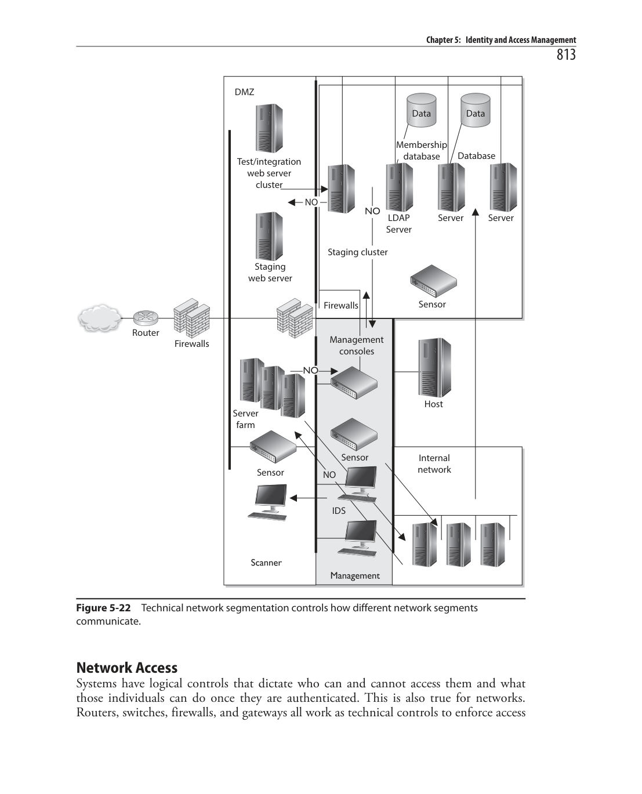
Figure 5-22Technical network segmentation controls how different network segments
Network Access
Systems have logical controls that dictate who can and cannot access them and what those individuals can do once they are authenticated. This is also true for networks. Routers, switches, firewalls, and gateways all work as technical controls to enforce access
restriction into and out of a network and access to the different segments within the network. If an attacker from the Internet wants to gain access to a specific computer, chances are she will have to hack through a firewall, router, and a switch just to be able to start an attack on a specific computer that resides within the internal network. Each device has its own logical controls that make decisions about what entities can access them and what type of actions they can carry out. Access to different network segments should be granular in nature. Routers and firewalls can be used to ensure that only certain types of traffic get through to each segment.
Encryption and Protocols
Encryption and protocols work as technical controls to protect information as it passes throughout a network and resides on computers. They ensure that the information is received by the correct entity and that it is not modified during transmission. These logical controls can preserve the confidentiality and integrity of data and enforce specific paths for communication to take place. (Chapter 3 discusses cryptography and encryption mechanisms.)
Auditing
Auditing tools are technical controls that track activity within a network, on a network device, or on a specific computer. Even though auditing is not an activity that will deny an entity access to a network or computer, it will track activities so a network administrator can understand the types of access that took place, identify a security breach, or warn the administrator of suspicious activity. This information can be used to point out weaknesses of other technical controls and help the administrator understand where changes must be made to preserve the necessary security level within the environment.
What is important to understand is that there are administrative, technical, and physical controls that work toward providing access control, and you should know several examples of each for the exam.
Accountability
Auditing capabilities ensure users are accountable for their actions, verify that the security policies are enforced, and can be used as investigation tools. There are several reasons why network administrators and security professionals want to make sure accountability mechanisms are in place and configured properly: to be able to track bad deeds back to individuals, detect intrusions, reconstruct events and system conditions, provide legal recourse material, and produce problem reports. Audit documentation and log files hold a mountain of information—the trick is usually deciphering it and presenting it in a useful and understandable format. Accountability is tracked by recording user, system, and application activities. This recording is done through auditing functions and mechanisms within an operating system or application. Audit trails contain information about operating system activities,
application events, and user actions. Audit trails can be used to verify the health of a system by checking performance information or certain types of errors and conditions. After a system crashes, a network administrator often will review audit logs to try and piece together the status of the system and attempt to understand what events could be attributed to the disruption. Audit trails can also be used to provide alerts about any suspicious activities that can be investigated at a later time. In addition, they can be valuable in determining exactly how far an attack has gone and the extent of the damage that may have been caused. It is important to make sure a proper chain of custody is maintained to ensure any data collected can later be properly and accurately represented in case it needs to be used for later events such as criminal proceedings or investigations. It is a good idea to keep the following in mind when dealing with auditing:
Store the audits securely.
- The right audit tools will keep the size of the logs under control.
- The logs must be protected from any unauthorized changes in order to
- safeguarddata.
Train the right people to review the data in the right manner.
- Make sure the ability to delete logs is only available to administrators.
- Logs should contain activities of all high-privileged accounts (root,
- administrator).
An administrator configures what actions and events are to be audited and logged. In a high-security environment, the administrator would configure more activities to be captured and set the threshold of those activities to be more sensitive. The events can be reviewed to identify where breaches of security occurred and if the security policy has been violated. If the environment does not require such levels of security, the events analyzed would be fewer, with less demanding thresholds. Items and actions to be audited can become an endless list. A security professional should be able to assess an environment and its security goals, know what actions should be audited, and know what is to be done with that information after it is captured— without wasting too much disk space, CPU power, and staff time. The following gives a broad overview of the items and actions that can be audited and logged:
System-level events:
System performance
- Logon attempts (successful and unsuccessful)
- Logon ID
- Date and time of each logon attempt
- Lockouts of users and terminals
- Use of administration utilities
- Devices used
- Functions performed
- Requests to alter configuration files
- Application-level events:
Error messages
- Files opened and closed
- Modifications of files
- Security violations within applications
- User-level events:
Identification and authentication attempts
- Files, services, and resources used
- Commands initiated
- Security violations
- The threshold (clipping level) and parameters for each of these items must be configured. For example, an administrator can audit each logon attempt or just each failed logon attempt. System performance can look at the amount of memory used within an eight-hour period or the memory, CPU, and hard drive space used within an hour. Intrusion detection systems (IDSs) continually scan audit logs for suspicious activity. If an intrusion or harmful event takes place, audit logs are usually kept to be used later to prove guilt and prosecute if necessary. If severe security events take place, many times the IDS will alert the administrator or staff member so they can take proper actions to end the destructive activity. If a dangerous virus is identified, administrators may take the mail server offline. If an attacker is accessing confidential information within the database, this computer may be temporarily disconnected from the network or Internet. If an attack is in progress, the administrator may want to watch the actions taking place so she can track down the intruder. IDSs can watch for this type of activity during real time and/or scan audit logs and watch for specific patterns or behaviors.
Review of Audit Information
Audit trails can be reviewed manually or through automated means—either way, they must be reviewed and interpreted. If an organization reviews audit trails manually, it needs to establish a system of how, when, and why they are viewed. Usually audit logs are very popular items right after a security breach, unexplained system action, or system disruption. An administrator or staff member rapidly tries to piece together the
activities that led up to the event. This type of audit review is event-oriented. Audit trails can also be viewed periodically to watch for unusual behavior of users or systems and to help understand the baseline and health of a system. Then there is a real-time, or near real-time, audit analysis that can use an automated tool to review audit information as it is created. Administrators should have a scheduled task of reviewing audit data. The audit material usually needs to be parsed and saved to another location for a certain time period. This retention information should be stated in the company’s security policy and procedures. Reviewing audit information manually can be overwhelming. There are applications and audit trail analysis tools that reduce the volume of audit logs to review and improve the efficiency of manual review procedures. A majority of the time, audit logs contain information that is unnecessary, so these tools parse out specific events and present them in a useful format. Anaudit-reduction tooldoes just what its name suggests—reduces the amount of information within an audit log. This tool discards mundane task information and records system performance, security, and user functionality information that can be useful to a security professional or administrator. Today, more organizations are implementingsecurity event management (SEM) systems, also calledsecurity information and event management (SIEM)systems. These products gather logs from various devices (servers, firewalls, routers, etc.) and attempt to correlate the log data and provide analysis capabilities. Reviewing logs manually looking for suspicious activity on a continuous manner is not only mind-numbing, it is close to impossible to be successful. So many packets and network communication data sets are passing along a network, humans cannot collect all the data in real or near real time, analyze it, identify current attacks, and react—it is just too overwhelming. We also have differenttypesof systems on a network (routers, firewalls, IDS, IPS, servers, gateways, proxies) collecting logs in various proprietary formats, which requires centralization, standardization, and normalization. Log formats are different per product type and vendor. The format of logs created by Juniper network device systems is different from the format of logs created by Cisco systems, which in turn is different from the format created by Palo Alto and Barracuda firewalls. It is important to gather logs from various different systems within an environment so that some type of situational awareness can take place. Once the logs are gathered, intelligence routines need to be processed on them so that data mining can take place to identify patterns. The goal is to piece together seemingly unrelated event data so that the security team can fully understand what is taking place within the network and react properly.
Situational awareness means that you understand the current environment even though it is complex, dynamic, and made up of seemingly unrelated data points. You need to be able to understand each data point in its own context within the surrounding environment so that you can make the best possible decisions.
Protecting Audit Data and Log Information
If an intruder breaks into your house, he will do his best to cover his tracks by not leaving fingerprints or any other clues that can be used to tie him to the criminal activity. The same is true in computer fraud and illegal activity. The intruder will work to cover his tracks. Attackers often delete audit logs that hold this incriminating information. (Deleting specific incriminating data within audit logs is calledscrubbing.) Deleting this information can cause the administrator to not be alerted or aware of the security breach and can destroy valuable data. Therefore, audit logs should be protected by strict access control and stored on a remote host. Only certain individuals (the administrator and security personnel) should be able toview, modify, and delete audit trail information. No other individuals should be able to view this data, much less modify or delete it. The integrity of the data can beensured with the use of digital signatures, hashing tools, and strong access controls. Its confidentiality can be protected with encryption and access controls, if necessary, and it can be stored on write-once media(CD-ROMs) to prevent loss or modification of the data. Unauthorized access attempts to audit logs should be captured and reported. Audit logs may be used in a trial to prove an individual’s guilt, demonstrate how an attack was carried out, or corroborate a story. The integrity and confidentiality of these logs will be under scrutiny. Proper steps need to be taken to ensure that the confidentiality and integrity of the audit information is not compromised in any way.
Keystroke Monitoring
Keystroke monitoringis a type of monitoring that can review and record keystrokes entered by a user during an active session. The person using this type of monitoring can have the characters written to an audit log to be reviewed at a later time. This type of auditing is usually done only for special cases and only for a specific length of time, because the amount of information captured can be overwhelming and much of that information may be unimportant. If a security professional or administrator is suspicious of an individual and his activities, she may invoke this type of monitoring. In some authorized investigative stages, a keyboard dongle (hardware key logger) may be unobtrusively inserted between the keyboard and the computer to capture all the keystrokes entered, including power-on passwords. A hacker can also use this type of monitoring. If an attacker can successfully install a Trojan horse on a computer, the Trojan horse can install an application that captures data as it is typed into the keyboard. Typically, these programs are most interested in user credentials and can alert the attacker when credentials have been successfully captured. Privacy issues are involved with this type of monitoring, and administrators could be subject to criminal and civil liabilities if it is done without proper notification to the employees and authorization from management. If a company wants to use this type of auditing, it should state so in the security policy, address the issue in security-awareness training, and present a banner notice to users warning that the activities at that computer may be monitored in this fashion. These steps should be taken to protect the company from violating an individual’s privacy and to inform users where their privacy boundaries start and stop pertaining to computer use.
Access Control Practices
We have gone over how users are identified, authenticated, and authorized and how their actions are audited. These are necessary parts of a healthy and safe network environment. You also want to take steps to ensure there are no unnecessary open doors and that the environment stays at the same security level you have worked so hard to achieve. This means you need to implement good access control practices. Not keeping up with daily or monthly tasks usually causes the most vulnerabilities in an environment. It is hard to put out all the network fires, fight the political battles, fulfill all the users’ needs, and still keep up with small maintenance tasks. However, many companies have found that not doing these small tasks caused them the greatest heartache of all. The following is a list of tasks that must be done on a regular basis to ensure security stays at a satisfactory level:
Deny access to systems to undefined users or anonymous accounts.
- Limit and monitor the usage of administrator and other powerful accounts.
- Suspend or delay access capability after a specific number of unsuccessful logon
- attempts.
Remove obsolete user accounts as soon as the user leaves the company.
- Suspend inactive accounts after 30 to 60 days.
- Enforce strict access criteria.
- Enforce the need-to-know and least-privilege practices.
- Disable unneeded system features, services, and ports.
- Replace default password settings on accounts.
- Limit and monitor global access rules.
- Remove redundant resource rules from accounts and group memberships.
- Remove redundant user IDs, accounts, and role-based accounts from resource
- access lists.
Enforce password rotation.
- Enforce password requirements (length, contents, lifetime, distribution, storage,
- and transmission).
Audit system and user events and actions, and review reports periodically.
- Protect audit logs.
- Even if all of these countermeasures are in place and properly monitored, data can still be lost in an unauthorized manner in other ways. The next section looks at these issues and their corresponding countermeasures.
Unauthorized Disclosure of Information
Several things can make information available to others for whom it is not intended, which can bring about unfavorable results. Sometimes this is done intentionally; other
times, unintentionally. Information can be disclosed unintentionally when one falls prey to attacks that specialize in causing this disclosure. These attacks include social engineering, covert channels, malicious code, and electrical airwave sniffing. Information can be disclosed accidentally through object reuse methods, which are explained next.
Object Reuse
Object reuseissues pertain to reassigning to a subject media that previously contained one or more objects. Huh? This means before someone uses a hard drive, USB drive, or tape, it should be cleared of any residual information still on it. This concept also applies to objects reused by computer processes, such as memory locations, variables, and registers. Any sensitive information that may be left by a process should be securely cleared before allowing another process the opportunity to access the object. This ensures that information not intended for this individual or any other subject is not disclosed. Many times, USB drives are exchanged casually in a work environment. What if a supervisor lent a USB drive to an employee without erasing it and it contained confidential employee performance reports and salary raises forecasted for the next year? This could prove to be a bad decision and may turn into a morale issue if the information was passed around. Formatting a disk or deleting files only removes the pointers to the files; it does not remove the actual files. This information will still be on the disk and available until the operating system needs that space and overwrites those files. So, for media that holds confidential information, more extreme methods should be taken to ensure the files are actually gone, not just their pointers. Sensitive data should be classified (secret, top secret, confidential, unclassified, and so on) by the data owners. How the data is stored and accessed should also be strictly controlled and audited by software controls. However, the task does not end there. Before allowing someone to use previously used media, it should be erased or degaussed. (This responsibility usually falls on the operations department.) If media holds sensitive information and cannot be purged, steps should be created describing how to properly destroy it so no one else can obtain this information.
Sometimes hackers actually configure a sector on a hard drive so it is marked as bad and unusable to an operating system but that is actually fine and may hold malicious data. The operating system will not write information to this sector because it thinks it is corrupted. This is a form of data hiding. Some boot-sector virus routines are capable of putting the main part of their code (payload) into a specific sector of the hard drive, overwriting any data that may have been there, and then protecting it as a bad block.
Emanation Security
All electronic devices emit electrical signals. These signals can hold important information, and if an attacker buys the right equipment and positions himself in the right place, he could capture this information from the airwaves and access data transmissions as if he had a tap directly on the network wire.
Several incidents have occurred in which intruders have purchased inexpensive equipment and used it to intercept electrical emissions as they radiated from a computer. This equipment can reproduce data streams and display the data on the intruder’s monitor, enabling the intruder to learn of covert operations, find out military strategies, and uncover and exploit confidential information. This is not just stuff found in spy novels. It really happens. So, the proper countermeasures have been devised.
TEMPESTTEMPESTstarted out as a study carried out by the DoD and then turned into a standard that outlines how to develop countermeasures that control spurious electrical signals emitted by electrical equipment. Special shielding is used on equipment to suppress the signals as they are radiated from devices. TEMPEST equipment is implemented to prevent intruders from picking up information through the airwaves with listening devices. This type of equipment must meet specific standards to be rated as providing TEMPEST shielding protection. TEMPEST refers to standardized technology that suppresses signal emanations with shielding material. Vendors who manufacture this type of equipment must be certified to this standard. The devices (monitors, computers, printers, and so on) have an outer metal coating, referred to as aFaraday cage. This is made of metal with the necessary depth to ensure only a certain amount of radiation is released. In devices that are TEMPEST rated, other components are also modified, especially the power supply, to help reduce the amount of electricity used. Even allowable limits of emission levels can radiate and still be considered safe. The approved products must ensure only this level of emissions is allowed to escape the devices. This type of protection is usually needed only in military institutions, although other highly secured environments do utilize this kind of safeguard. Many military organizations are concerned with stray radio frequencies emitted by computers and other electronic equipment because an attacker may be able to pick them up, reconstruct them, and give away secrets meant to stay secret. TEMPEST technology is complex, cumbersome, and expensive, and therefore only used in highly sensitive areas that really need this high level of protection. Two alternatives to TEMPEST exist: use white noise or use a control zone concept, both of which are explained next.
TEMPEST is the name of a program, and now a standard, that was developed in the late 1950s by the U.S. and British governments to deal with electrical and electromagnetic radiation emitted from electrical equipment, mainly computers. This type of equipment is usually used by intelligence, military, government, and law enforcement agencies, and the selling of such items is under constant scrutiny.
White NoiseA countermeasure used to keep intruders from extracting information from electrical transmissions iswhite noise, a uniform spectrum of random electrical signals. It is distributed over the full spectrum so the bandwidth is constant and an intruder is not able to decipher real information from random noise or random information.
Control ZoneAnother alternative to using TEMPEST equipment is to use the zone concept, which was addressed earlier in this chapter. Some facilities use material in their walls to contain electrical signals, which acts like a large Faraday cage. This prevents intruders from being able to access information emitted via electrical signals from network devices. This control zone creates a type of security perimeter and is constructed to protect against unauthorized access to data or the compromise of sensitive information.
Access Control Monitoring
Access control monitoring is a method of keeping track of who attempts to access specific company resources. It is an important detective mechanism, and different technologies exist that can fill this need. It is not enough to invest in antivirus and firewall solutions. Companies are finding that monitoring their own internal network has become a way of life.
Intrusion Detection Systems
Intrusion detection systems (IDSs)are different from traditional firewall products because they are designed to detect a security breach.Intrusion detectionis the process of detecting an unauthorized use of, or attack upon, a computer, network, or telecommunications infrastructure. IDSs are designed to aid in mitigating the damage that can be caused by hacking or by breaking into sensitive computer and network systems. The basic intent of the IDS tool is to spot something suspicious happening on the network and sound an alarm by flashing a message on a network manager’s screen, or possibly sending an e-mail or even reconfiguring a firewall’s ACL setting. The IDS tools can look for sequences of data bits that might indicate a questionable action or event, or monitor system log and activity recording files. The event does not need to be an intrusion to sound the alarm— any kind of “non-normal” behavior may do the trick. Although different types of IDS products are available, they all have three common components: sensors, analyzers, and administrator interfaces. The sensors collect traffic and user activity data and send it to an analyzer, which looks for suspicious activity. If the analyzer detects an activity it is programmed to deem as fishy, it sends an alert to the administrator’s interface. IDSs come in two main types:network-based, which monitor network communications, andhost-based, which can analyze the activity within a particular computer system. IDSs can be configured to watch for attacks, parse audit logs, terminate a connection, alert an administrator as attacks are happening, expose a hacker’s techniques, illustrate which vulnerabilities need to be addressed, and possibly help track down individual hackers.
Network-Based IDSs
Anetwork-based IDS (NIDS)uses sensors, which are either host computers with the necessary software installed or dedicated appliances—each with its network interface card (NIC) in promiscuous mode. Normally, NICs watch for traffic that has the address of its host system, broadcasts, and sometimes multicast traffic. The NIC driver copies the data from the transmission medium and sends it up the network protocol stack for processing. When a NIC is put into promiscuous mode, the NIC driver captures all traffic,
makes a copy of all packets, and then passes one copy to the TCP stack and one copy to an analyzer to look for specific types of patterns. A NIDS monitors network traffic and cannot “see” the activity going on inside a computer itself. To monitor the activities within a computer system, a company would need to implement a host-based IDS.
Host-Based IDSs
Ahost-based IDS (HIDS)can be installed on individual workstations and/or servers to watch for inappropriate or anomalous activity. HIDSs are usually used to make sure users do not delete system files, reconfigure important settings, or put the system at risk in any other way. So, whereas the NIDS understands and monitors the network traffic, a HIDS’s universe is limited to the computer itself. A HIDS does not understand or review network traffic, and a NIDS does not “look in” and monitor a system’s activity. Each has its own job and stays out of the other’s way. In most environments, HIDS products are installed only on critical servers, not on every system on the network, because of the resource overhead and the administration nightmare that such an installation would cause. Just to make life a little more confusing, HIDS and NIDS can be one of the following types:
Signature-based:
Pattern matching
- Stateful matching
- Anomaly-based:
Statistical anomaly–based
- Protocol anomaly–based
- Traffic anomaly–based
- Ruleor heuristic-based
Knowledge- or Signature-Based Intrusion Detection
Knowledge is accumulated by the IDS vendors about specific attacks and how they are carried out. Models of how the attacks are carried out are developed and calledsignatures. Each identified attack has a signature, which is used to detect an attack in progress or determine if one has occurred within the network. Any action that is not recognized as an attack is considered acceptable.
Signature-based is also known as pattern matching.
An example of a signature is a packet that has the same source IP address and destination IP address. All packets should have different source and destination IP addresses, and if they have the same address, this means a Land attack is under way. In a Land attack, a hacker modifies the packet header so that when a receiving system responds to the sender, it is responding to its own address. Now that seems as though it should be benign enough, but vulnerable systems just do not have the programming code to know what to do in this situation, so they freeze or reboot. Once this type of attack was discovered, the signature-based IDS vendors wrote a signature that looks specifically for packets that contain the same source and destination address. Signature-based IDSs are the most popular IDS products today, and their effectiveness depends upon regularly updating the software with new signatures, as with antivirus software. This type of IDS is weak against new types of attacks because it can recognize only the ones that have been previously identified and have had signatures written for them. Attacks or viruses discovered in production environments are referred to as being “in the wild.”
State-Based IDSs
Before delving too deep into how a state-based IDS works, you need to understand what the state of a system or application actually is. Every change that an operating system experiences (user logs on, user opens application, application communicates to another application, user inputs data, and so on) is considered a state transition. In a very technical sense, all operating systems and applications are just lines and lines of instructions written to carry out functions on data. The instructions have empty variables, which is where the data is held. So when you use the calculator program and type in 5, an empty variable is instantly populated with this value. By entering that value, you change the state of the application. When applications communicate with each other, they populate empty variables provided in each application’s instruction set. So, a state transition is when a variable’s value changes, which usually happens continuously within every system. Specific state changes (activities) take place with specific types of attacks. If an attacker will carry out a remote buffer overflow, then the following state changes will occur:
1.The remote user connects to the system. 2.The remote user sends data to an application (the data exceeds the allocated buffer for this empty variable). 3.The data is executed and overwrites the buffer and possibly other memory segments. 4.A malicious code executes.
So,stateis a snapshot of an operating system’s values in volatile, semipermanent, and permanent memory locations. In a state-based IDS, the initial state is the state prior to the execution of an attack, and the compromised state is the state after successful penetration. The IDS has rules that outline which state transition sequences should sound an alarm. The activity that takes place between the initial and compromised state
is what the state-based IDS looks for, and it sends an alert if any of the state-transition sequences match its preconfigured rules. This type of IDS scans for attack signatures in the context of a stream of activity instead of just looking at individual packets. It can only identify known attacks and requires frequent updates of its signatures.
Statistical Anomaly–Based IDS
Astatistical anomaly–based IDSis a behavioral-based system. Behavioral-based IDS products do not use predefined signatures, but rather are put in a learning mode to build a profile of an environment’s “normal” activities. This profile is built by continually sampling the environment’s activities. The longer the IDS is put in a learning mode, in most instances, the more accurate a profile it will build and the better protection it will provide. After this profile is built, all future traffic and activities are compared to it. The same type of sampling that was used to build the profile takes place, so the same type of data is being compared. Anything that does not match the profile is seen as an attack, in response to which the IDS sends an alert. With the use of complex statistical algorithms, the IDS looks for anomalies in the network traffic or user activity. Each packet is given an anomaly score, which indicates its degree of irregularity. If the score is higher than the established threshold of “normal” behavior, then the preconfigured action will take place. The benefit of using a statistical anomaly–based IDS is that it can react to new attacks. It can detect “zero-day” attacks, which means an attack is new to the world and no signature or fix has been developed yet. These products are also capable of detecting the “low and slow” attacks, in which the attacker is trying to stay under the radar by sending packets little by little over a long period of time. The IDS should be able to detect these types of attacks because they are different enough from the contrasted profile. Now for the bad news. Since the only thing that is “normal” about a network is that it is constantly changing, developing the correct profile that will not provide an overwhelming number of false positives can be difficult. Many IT staff members know all too well this dance of chasing down alerts that end up being benign traffic or activity. In fact, some environments end up turning off their IDS because of the amount of time these activities take up. (Proper education on tuning and configuration will reduce the number of false positives.) If an attacker detects there is an IDS on a network, she will then try to detect the type of IDS it is so she can properly circumvent it. With a behavioral-based IDS, the attacker could attempt to integrate her activities into the behavior pattern of the network traffic. That way, her activities are seen as “normal” by the IDS and thus go undetected. It is a good idea to ensure no attack activity is under way when the IDS is in learning mode. If this takes place, the IDS will never alert you of this type of attack in the future because it sees this traffic as typical of the environment. If a corporation decides to use a statistical anomaly–based IDS, it must ensure that the staff members who are implementing and maintaining it understand protocols and packet analysis. Because this type of an IDS sends generic alerts, compared to other types of IDSs, it is up to the network engineer to figure out what the actual issue is. For example, a signature-based IDS reports the type of attack that has been identified, while a
rule-based IDS identifies the actual rule the packet does not comply with. In a statistical anomaly–based IDS, all the product really understands is that something “abnormal” has happened, which just means the event does not match the profile.
IDS and some antimalware products are said to have “heuristic” capabilities. The term heuristic means to create new information from different data sources. The IDS gathers different “clues” from the network or system and calculates the probability an attack is taking place. If the probability hits a set threshold, then the alarm sounds.
Attack Techniques
It is common for hackers to first identify whether an IDS is present on the network they are preparing to attack. If one is present, that attacker may implement a denialof-service attack to bring it offline. Another tactic is to send the IDS incorrect data, which will make the IDS send specific alerts indicating a certain attack is under way, when in truth it is not. The goal of these activities is either to disable the IDS or to distract the network and security individuals so they will be busy chasing the wrong packets while the real attack takes place.
Determining the proper thresholds for statistically significant deviations is really the key for the successful use of a behavioral-based IDS. If the threshold is set too low, nonintrusive activities are considered attacks (false positives). If the threshold is set too high, some malicious activities won’t be identified (false negatives). Once an IDS discovers an attack, several things can happen, depending upon the capabilities of the IDS and the policy assigned to it. The IDS can send an alert to a console to tell the right individuals an attack is being carried out, send an e-mail or text to the individual assigned to respond to such activities, kill the connection of the detected attack, or reconfigure a router or firewall to try to stop any further similar attacks. A modifiable response condition might include anything from blocking a specific IP address to redirecting or blocking a certain type of activity.
Protocol Anomaly–Based IDS
A statistical anomaly–based IDS can useprotocol anomaly–based filters. These types of IDSs have specific knowledge of each protocol they will monitor. A protocol anomaly pertains to the format and behavior of a protocol. The IDS builds a model (or profile) of each protocol’s “normal” usage. Keep in mind, however, that protocols havetheoretical usage, as outlined in their corresponding RFCs, andreal-worldusage, which refers to the fact that vendors seem to always “color outside the boxes” and don’t strictly follow the RFCs in their protocol development and implementation. So, most profiles of individual protocols are a mix between the official and real-world versions of the protocol and its
usage. When the IDS is activated, it looks for anomalies that do not match the profiles built for the individual protocols. Although several vulnerabilities within operating systems and applications are available to be exploited, many more successful attacks take place by exploiting vulnerabilities in the protocols themselves. At the OSI data link layer, the Address Resolution Protocol (ARP) does not have any protection against ARP attacks where bogus data is inserted into its table. At the network layer, the Internet Control Message Protocol (ICMP) can be used in a Loki attack to move data from one place to another, when this protocol was designed to only be used to send status information—not user data. IP headers can be easily modified for spoofed attacks. At the transport layer, TCP packets can be injected into the connection between two systems for a session hijacking attack.
When an attacker compromises a computer and loads a back door on the system, he will need to have a way to communicate to this computer through this back door and stay “under the radar” of the network firewall and IDS. Hackers have figured out that a small amount of code can be inserted into an ICMP packet, which is then interpreted by the back-door software loaded on a compromised system. Security devices are usually not configured to monitor this type of traffic because ICMP is a protocol that is supposed to be used just to send status information—not commands to a compromised system. Because every packet formation and delivery involves many protocols, and because more attack vectors exist in the protocols than in the software itself, it is a good idea to integrate protocol anomaly–based filters in any network behavioral-based IDS.
Traffic Anomaly–Based IDS
Most behavioral-based IDSs havetraffic anomaly–based filters, which detect changes in traffic patterns, as in DoS attacks or a new service that appears on the network. Once a profile is built that captures the baselines of an environment’s ordinary traffic, all future traffic patterns are compared to that profile. As with all filters, the thresholds are tunable to adjust the sensitivity and to reduce the number of false positives and false negatives. Since this is a type of statistical anomaly–based IDS, it can detect unknown attacks.
Rule-Based IDS
Arule-based IDStakes a different approach than a signature-based or statistical anomaly– based system. A signature-based IDS is very straightforward. For example, if a signaturebased IDS detects a packet that has all of its TCP header flags with the bit value of 1, it knows that an Xmas attack is under way—so it sends an alert. A statistical anomaly–based IDS is also straightforward. For example, if Bob has logged on to his computer at 6a.m. and the profile indicates this is abnormal, the IDS sends an alert, because this is seen as an activity that needs to be investigated. Rule-based intrusion detection gets a little trickier, depending upon the complexity of the rules used.
Rule-based intrusion detection is commonly associated with the use of an expert system. An expert system is made up of a knowledge base, inference engine, and rulebased programming. Knowledge is represented as rules, and the data to be analyzed is referred to as facts. The knowledge of the system is written in rule-based programming (IFsituationTHENaction). These rules are applied to the facts, the data that comes in from a sensor, or a system that is being monitored. For example, in scenario 1 the IDS pulls data from a system’s audit log and stores it temporarily in its fact database, as illustrated in Figure 5-23. Then, the preconfigured rules are applied to this data to indicate whether anything suspicious is taking place. In our scenario, the rule states “IF a root user creates File1ANDcreates File2SUCH THATthey are in the same directory THENthere is a call to Administrative Tool1TRIGGERsend alert.” This rule has been defined such that if a root user creates two files in the same directory and then makes a call to a specific administrative tool, an alert should be sent. It is the inference engine that provides some artificial intelligence into this process. An inference engine can infer new information from provided data by using inference rules. To understand what inferring means in the first place, let’s look at the following:
Socrates is a man. All men are mortals.
Thus, we can infer that Socrates is mortal. If you are asking, “What does this have to do with a hill of beans?” just hold on to your hat—here we go. Regular programming languages deal with the “black and white” of life. The answer is either yes or no, not maybe this or maybe that. Although computers can carry out complex computations at a much faster rate than humans, they have a harder time guessing, or inferring, answers because they are very structured. The fifth-generation
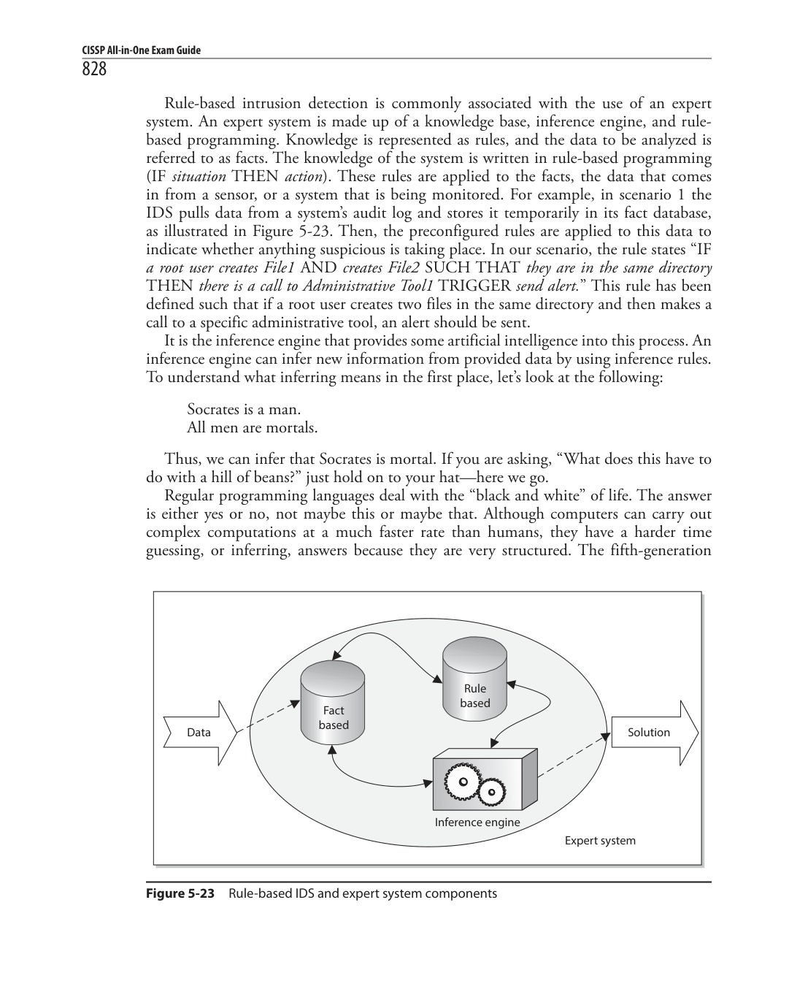
Figure 5-23Rule-based IDS and expert system components
programming languages (artificial intelligence languages) are capable of dealing with the grayer areas of life and can attempt to infer the right solution from the provided data. So, in a rule-based IDS founded on an expert system, the IDS gathers data from a sensor or log, and the inference engine uses its preprogrammed rules on it. If the characteristics of the rules are met, an alert or solution is provided.
IDS Types
It is important to understand the characteristics that make the different types of IDS technologies distinct. The following is a summary:
Signature-based:
Pattern matching, similar to antivirus software
- Signatures must be continuously updated
- Cannot identify new attacks
- Two types:
- Pattern matchingCompares packets to signatures
- Stateful matchingCompares patterns to several activities at once
- Anomaly-based:
Behavioral-based system that learns the “normal” activities of an
- environment
Can detect new attacks
- Also called behavioror heuristic-based
- Three types:
- Statistical anomaly–basedCreates a profile of “normal” and compares
- activities to this profile
Protocol anomaly–basedIdentifies protocols used outside of their
- common bounds
Traffic anomaly–basedIdentifies unusual activity in network traffic
- Rule-based:
Use of IF/THEN rule-based programming within expert systems
- Use of an expert system allows for artificial intelligence characteristics
- The more complex the rules, the more demands on software and hardware
- processing requirements
Cannot detect new attacks
Application-based IDS
There are specialized IDS products that can monitor specific applications for malicious activities. Since their scopes are very focused (only one application), they can gather fine-grained and detailed activities. They can be used to capture very specific application attack types, but it is important to realize that these product types will miss more general operating system–based attacks because this is not what they are programmed to detect. It might be important to implement this type of IDS if a critical application is carrying out encryption functions that would obfuscate its communication channels and activities from other types of IDS (host, network).
IDS Sensors
Network-based IDSs use sensors for monitoring purposes. A sensor, which works as an analysis engine, is placed on the network segment the IDS is responsible for monitoring. The sensor receives raw data from an event generator, as shown in Figure 5-24, and compares it to a signature database, profile, or model, depending upon the type of IDS. If there is some type of a match, which indicates suspicious activity, the sensor works with the response module to determine what type of activity must take place (alerting through instant messaging, paging, or by e-mail; carrying out firewall reconfiguration; and so on). The sensor’s role is to filter received data, discard irrelevant information, and detect suspicious activity. A monitoring console monitors all sensors and supplies the network staff with an overview of the activities of all the sensors in the network. These are the components that enable network-based intrusion detection to actually work. Sensor placement is a critical part of configuring an effective IDS. An organization can place a sensor outside of the firewall to detect attacks and place a sensor inside the firewall (in the perimeter network) to detect actual intrusions. Sensors should also be placed in highly sensitive areas, DMZs, and on extranets. Figure 5-25 shows the sensors reporting their findings to the central console. The IDS can be centralized, as firewall products that have IDS functionality integrated within them, or distributed, with multiple sensors throughout the network.
Network Traffic
If the network traffic volume exceeds the IDS system’s threshold, attacks may go unnoticed. Each vendor’s IDS product has its own threshold, and you should know and understand that threshold before you purchase and implement the IDS. In very high-traffic environments, multiple sensors should be in place to ensure all packets are investigated. If necessary to optimize network bandwidth and speed, different sensors can be set up to analyze each packet for different signatures. That way, the analysis load can be broken up over different points.
Intrusion Prevention Systems
In the industry, there is constant frustration with the inability of existing products to stop the bad guys from accessing and manipulating corporate assets. This has created a market
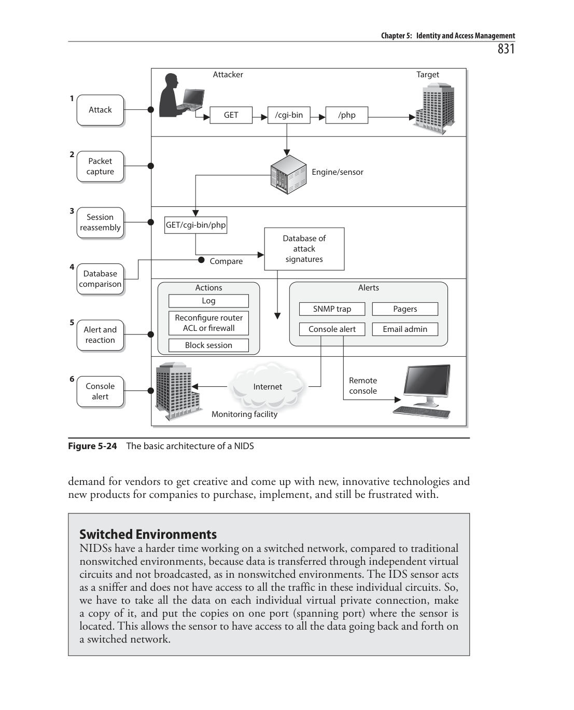
Figure 5-24The basic architecture of a NIDS
demand for vendors to get creative and come up with new, innovative technologies and new products for companies to purchase, implement, and still be frustrated with.
Switched Environments
NIDSs have a harder time working on a switched network, compared to traditional nonswitched environments, because data is transferred through independent virtual circuits and not broadcasted, as in nonswitched environments. The IDS sensor acts as a sniffer and does not have access to all the traffic in these individual circuits. So, we have to take all the data on each individual virtual private connection, make a copy of it, and put the copies on one port (spanning port) where the sensor is located. This allows the sensor to have access to all the data going back and forth on a switched network.
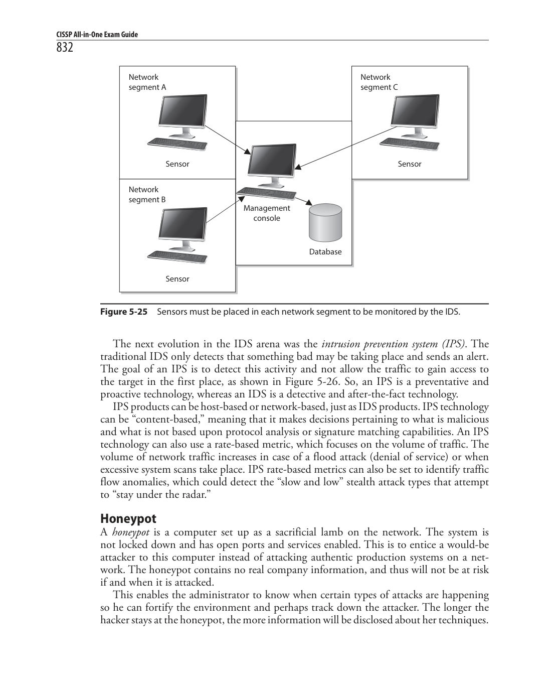
Figure 5-25Sensors must be placed in each network segment to be monitored by the IDS.
The next evolution in the IDS arena was theintrusion prevention system (IPS). The traditional IDS only detects that something bad may be taking place and sends an alert. The goal of an IPS is to detect this activity and not allow the traffic to gain access to the target in the first place, as shown in Figure 5-26. So, an IPS is a preventative and proactive technology, whereas an IDS is a detective and after-the-fact technology. IPS products can be host-based or network-based, just as IDS products. IPS technology can be “content-based,” meaning that it makes decisions pertaining to what is malicious and what is not based upon protocol analysis or signature matching capabilities. An IPS technology can also use a rate-based metric, which focuses on the volume of traffic. The volume of network traffic increases in case of a flood attack (denial of service) or when excessive system scans take place. IPS rate-based metrics can also be set to identify traffic flow anomalies, which could detect the “slow and low” stealth attack types that attempt to “stay under the radar.”
Honeypot
Ahoneypotis a computer set up as a sacrificial lamb on the network. The system is not locked down and has open ports and services enabled. This is to entice a would-be attacker to this computer instead of attacking authentic production systems on a network. The honeypot contains no real company information, and thus will not be at risk if and when it is attacked. This enables the administrator to know when certain types of attacks are happening so he can fortify the environment and perhaps track down the attacker. The longer the hacker stays at the honeypot, the more information will be disclosed about her techniques.
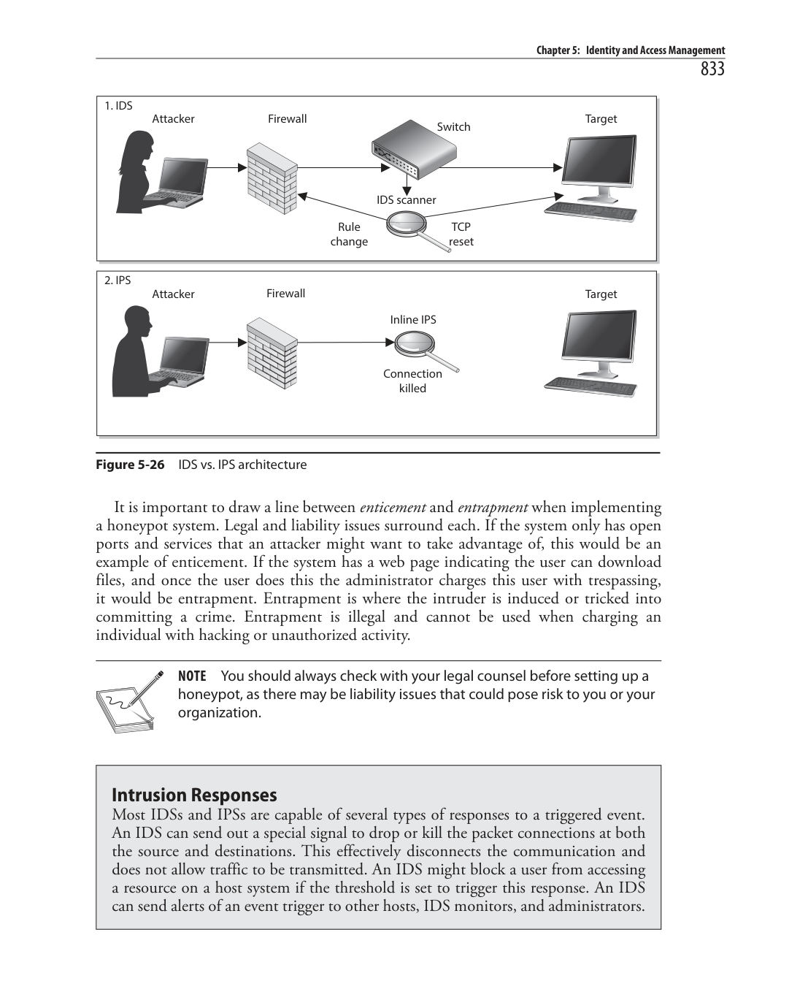
Figure 5-26IDS vs. IPS architecture
It is important to draw a line betweenenticementandentrapmentwhen implementing a honeypot system. Legal and liability issues surround each. If the system only has open ports and services that an attacker might want to take advantage of, this would be an example of enticement. If the system has a web page indicating the user can download files, and once the user does this the administrator charges this user with trespassing, it would be entrapment. Entrapment is where the intruder is induced or tricked into committing a crime. Entrapment is illegal and cannot be used when charging an individual with hacking or unauthorized activity.
You should always check with your legal counsel before setting up a honeypot, as there may be liability issues that could pose risk to you or your organization.
Intrusion Responses
Most IDSs and IPSs are capable of several types of responses to a triggered event. An IDS can send out a special signal to drop or kill the packet connections at both the source and destinations. This effectively disconnects the communication and does not allow traffic to be transmitted. An IDS might block a user from accessing a resource on a host system if the threshold is set to trigger this response. An IDS can send alerts of an event trigger to other hosts, IDS monitors, and administrators.
Network Sniffers
A packet or networksnifferis a general term for programs or devices able to examine traffic on a LAN segment. Traffic that is being transferred over a network medium is transmitted as electrical signals encoded in binary representation. The sniffer has to have a protocol-analysis capability to recognize the different protocol values to properly interpret their meaning. The sniffer has to have access to a network adapter that works in promiscuous mode and a driver that captures the data. This data can be overwhelming, so it must be properly filtered. The filtered data is stored in a buffer, and this information is displayed to a user and/or captured in logs. Some utilities have sniffer and packet-modification capabilities, which is how some types of spoofing and man-in-the-middle attacks are carried out.
Sniffers are dangerous and very hard to detect, and their activities are difficult to audit.
Network sniffers are used by the people in the white hats (administrators and security professionals) usually to try and track down a recent problem with the network. But the guys in the black hats (attackers and crackers) can use them to learn about what type of data is passed over a specific network segment and to modify data in an unauthorized manner. Black hats usually use sniffers to obtain credentials as they pass over the network medium.
A sniffer is just a tool that can capture network traffic. If it has the capability of understanding and interpreting individual protocols and their associated data, this type of tool is referred to as a protocol analyzer.
Threats to Access Control
As a majority of security professionals know, there is more risk and a higher probability of an attacker causing mayhem from within an organization than from outside it. However, many people within organizations do not know this fact because they only hear stories about the outside attackers who defaced a web server or circumvented a firewall to access confidential information. An attacker from the outside can enter through remote access entry points, enter through firewalls and web servers, physically break in, carry out social engineering attacks, or exploit a partner communication path (extranet, vendor connection, and so on). An insider has legitimate reasons for using the systems and resources, but can misuse his privileges and launch an actual attack also. The danger of insiders is that they have already been given a wide range of access that a hacker would have to work hard to obtain; they probably have intimate knowledge of the environment; and, generally, they are trusted. We have discussed many different types of access control mechanisms that work to keep the outsiders outside and restrict insiders’ abilities to a minimum and audit their actions. Now we will look at some specific attacks commonly carried out in environments today by insiders or outsiders.
Dictionary Attack
Several programs can enable an attacker (or proactive administrator) to identify user credentials. This type of program is fed lists (dictionaries) of commonly used words or combinations of characters, and then compares these values to capture passwords. In other words, the program hashes the dictionary words and compares the resulting message digest with the system password file that also stores its passwords in a one-way hashed format. If the hashed values match, it means a password has just been uncovered. Once the right combination of characters is identified, the attacker can use this password to authenticate herself as a legitimate user. Because many systems have a threshold that dictates how many failed logon attempts are acceptable, the same type of activity can happen to a captured password file. The dictionary-attack program hashes the combination of characters and compares it to the hashed entries in the password file. If a match is found, the program has uncovered a password. The dictionaries come with the password-cracking programs, and extra dictionaries can be found on several sites on the Internet.
Passwords should never be transmitted or stored in cleartext. Most operating systems and applications put the passwords through hashing algorithms, which result in hash values, also referred to as message digest values.
Countermeasures
To properly protect an environment against dictionary and other password attacks, the following practices should be followed:
Do not allow passwords to be sent in cleartext.
- Encrypt the passwords with encryption algorithms or hashing functions.
- Employ one-time password tokens.
- Use hard-to-guess passwords.
- Rotate passwords frequently.
- Employ an IDS to detect suspicious behavior.
- Use dictionary-cracking tools to find weak passwords chosen by users.
- Use special characters, numbers, and upperand lowercase letters within the
- password.
Protect password files.
Brute-Force Attacks
Several types ofbrute-force attackscan be implemented, but each continually tries different inputs to achieve a predefined goal. Brute force is defined as “trying every possible combination until the correct one is identified.” So in a brute-force password attack, the
software tool will see if the first letter is an “a” and continue through the alphabet until that single value is uncovered. Then the tool moves on to the second value, and so on. The most effective way to uncover passwords is through a hybrid attack, which combines a dictionary attack and a brute-force attack. If a dictionary tool has found that a user’s password starts with Dallas, then the brute-force tool will try Dallas1, Dallas01, Dallasa1, and so on until a successful logon credential is uncovered. (A brute-force attack is also known as an exhaustive attack.) These attacks are also used inwar dialingefforts, in which the war dialer inserts a long list of phone numbers into a war-dialing program in hopes of finding a modem that can be exploited to gain unauthorized access. A program is used to dial many phone numbers and weed out the numbers used for voice calls and fax machine services. The attacker usually ends up with a handful of numbers he can now try to exploit to gain access into a system or network. So, a brute-force attack perpetuates a specific activity with different input parameters until the goal is achieved.
Countermeasures
For phone brute-force attacks, auditing and monitoring of this type of activity should be in place to uncover patterns that could indicate a war-dialing attack:
Perform brute-force attacks to find weaknesses and hanging modems.
- Make sure only necessary phone numbers are made public.
- Provide stringent access control methods that would make brute-force attacks less
- successful.
Monitor and audit for such activity.
- Employ an IDS to watch for suspicious activity.
- Set lockout thresholds.
Spoofing at Logon
An attacker can use a program that presents to the user a fake logon screen, which often tricks the user into attempting to log on. The user is asked for a username and password, which are stored for the attacker to access at a later time. The user does not know this is not his usual logon screen because they look exactly the same. A fake error message can appear, indicating that the user mistyped his credentials. At this point, the fake logon program exits and hands control over to the operating system, which prompts the user for a username and password. The user assumes he mistyped his information and doesn’t give it a second thought, but an attacker now knows the user’s credentials.
Phishing and Pharming
Phishingis a type of social engineering with the goal of obtaining personal information, credentials, credit card number, or financial data. The attackers lure, or fish, for sensitive data through various different methods.
The termphishingwas coined in 1996 when hackers started stealing America Online (AOL) passwords. The hackers would pose as AOL staff members and send messages to victims asking them for their passwords in order to verify correct billing information or verify information about the AOL accounts. Once the password was provided, the hacker authenticated as that victim and used his e-mail account for criminal purposes, as in spamming, pornography, and so on. Although phishing has been around since the 1990s, many people did not fully become aware of it until mid-2003 when these types of attacks spiked. Phishers created convincing e-mails requesting potential victims to click a link to update their bank account information. Victims click these links and are presented with a form requesting bank account numbers, Social Security numbers, credentials, and other types of data that can be used in identity theft crimes. These types of phishing e-mail scams have increased dramatically in recent years with some phishers masquerading as large banking companies, PayPal, eBay, Amazon.com, and other well-known Internet entities. Phishers also create websites that look very similar to legitimate sites and lure victims to them through e-mail messages and other websites to gain the same type of information. Some sites require the victims to provide their Social Security numbers, date of birth, and mother’s maiden name for authentication purposes before they can update their account information. The nefarious websites not only have the look and feel of the legitimate website, but attackers would provide URLs with domain names that look very similar to the legitimate site’s address. For example, www.amazon.com might become www.amzaon.com. Or use a specially placed @ symbol. For example, www.msn.com@notmsn.com would actually take the victim to the website notmsn.com and provide the username of www.msn.com to this website. The username www.msn.com would not be a valid username for notmsn .com, so the victim would just be shown the home page of notmsn.com. Now, notmsn .com is a nefarious site and created to look and feel just like www.msn.com. The victim feels comfortable he is at a legitimate site and logs on with his credentials. Some JavaScript commands are even designed to show the victim an incorrect web address. So let’s say Bob is a suspicious and vigilant kind of a guy. Before he inputs his username and password to authenticate and gain access to his online bank account, he always checks the URL values in the address bar of his browser. Even though he closely inspects it to make sure he is not getting duped, there could be a JavaScript replacing the URL www.evilandwilltakeallyourmoney.com with www.citibank.com so he thinks things are safe and life is good.
There have been fixes to the previously mentioned attack dealing with URLs, but it is important to know that attackers will continually come up with new ways of carrying out these attacks. Just knowing about phishing doesn’t mean you can properly detect or prevent it.As a security professional, you must keep up with the new and tricky strategies deployed by attackers.
Some attacks use pop-up forms when a victim is at a legitimate site. So if you were at your bank’s actual website and a pop-up window appeared asking you for some sensitive information, this probably wouldn’t worry you since you were communicating with your actual bank’s website. You may believe the window came from your bank’s web server, so you fill it out as instructed. Unfortunately, this pop-up window could be from another source entirely, and your data could be placed right in the attacker’s hands, not your bank’s. With this personal information, phishers can create new accounts in the victim’s name, gain authorized access to bank accounts, and make illegal credit card purchases or obtain cash advances. As more people have become aware of these types of attacks and grown wary of clicking embedded links in e-mail messages, phishers have varied their attack methods. For instance, they began sending e-mails that indicate to the user that they have won a prize or that there is a problem with a financial account. The e-mail instructs the person to call a number, which has an automated voice asking the victim to type in their credit card number or Social Security number for authentication purposes. As phishing attacks increase and more people have become victims of fraud, financial institutions have been implementing two-factor authentication for online transactions. To meet this need, some banks provided their customers with token devices that created one-time passwords. Countering, phishers set up fake websites that looked like the financial institution, duping victims into typing their one-time passwords. The websites would then send these credentials to the actual bank website, authenticate as this user, and gain access to their account.
Spear-phishing
When a phishing attack is crafted to trick a specific target and not a large generic group of people, this is referred to as aspear-phishing attack. If someone knows about your specific likes, political motives, shopping habits, etc., the attacker can craft an attack that is directed only at you. For example, if an attacker sends you a spoofed e-mail that seems to have come from your mother with the subject line of “Emily’s Birthday Pictures” and an e-mail attachment, you will most likely think it came from your mother and open the file, which will then infect your system. These specialized attacks take more time for the hacker to craft because unique information has to be gathered about the target, but they are more successful because they are more convincing.
A similar type of attack is calledpharming, which redirects a victim to a seemingly legitimate, yet fake, website. In this type of attack, the attacker carries out something calledDNS poisoning, in which a DNS server resolves a hostname into an incorrect IP address. When you type www.logicalsecurity.com into the address bar of your web browser, your computer really has no idea what this data is. So an internal request is made to review your TCP/IP network setting, which contains the IP address of the DNS server your computer is supposed to use. Your system then sends a request to this DNS server
basically asking, “Do you have the IP address for www.logicalsecurity.com?” The DNS server reviews its resource records and, if it has one with this information in it, sends the IP address for the server that is hosting www.logicalsecurity.com to your computer. Your browser then shows the home page of this website you requested. Now, what if an attacker poisoned this DNS server so the resource record has the wrong information? When you type in www.logicalsecurity.com and your system sends a request to the DNS server, the DNS server will send your system the IP address that it has recorded, not knowing it is incorrect. So instead of going to www.logicalsecurity .com, you are sent to www.weownyou.com. So, let’s say the victim types in a web address of www.nicebank.com, as illustrated in Figure 5-27. The victim’s system sends a request to a poisoned DNS server, which points the victim to a different website. This different website looks and feels just like the requested website, so the user enters his username and password and may even be presented with web pages that look legitimate. The benefit of a pharming attack to the attacker is that it can affect a large number of victims without the need to send out e-mails, and the victims usually fall for this more easily since they are requesting to go to a website themselves. Countermeasures to phishing attacks include the following:
Be skeptical of e-mails indicating you must make changes to your accounts,
- or warnings stating an account will be terminated if you don’t perform some onlineactivity.
Call the legitimate company to find out if this is a fraudulent message.
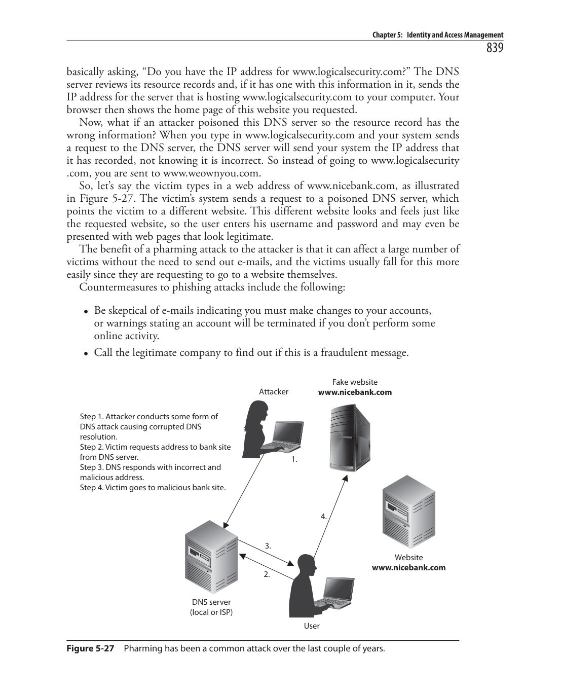
Figure 5-27Pharming has been a common attack over the last couple of years.
Review the address bar to see if the domain name is correct.
- When submitting any type of financial information or credential data, a TLS
- connection should be set up, which may be indicated in the address bar (https://) or as a closed-padlock icon in the browser.
Do not click an HTML link within an e-mail. Type the URL out manually instead.
- Do not accept e-mail in HTML format.
Summary
Access controls are security features that are usually considered the first line of defense in asset protection. They are used to dictate how subjects access objects, and their main goal is to protect the objects from unauthorized access. These controls can be administrative, physical, or technical in nature and should be applied in a layered approach, ensuring that an intruder would have to compromise more than one countermeasure to access critical assets. Access control defines how users should be identified, authenticated, and authorized. Theseissuesarecarriedoutdifferentlyindifferentaccesscontrolmodelsand technologies, and it is up to the organization to determine which best fits its business and security needs. Access control needs to be integrated into the core of operating systems through the use of DAC, MAC, and RBAC models. It needs to be embedded into applications, network devices, and protocols and enforced in the physical world through the use of security zones, network segmentation, locked doors, and security guards. Security is all about keeping the bad guys out, and unfortunately there are many different types of “doorways” they can exploit to get access to our most critical assets.
Quick Tips
Access is a flow of information between a subject and an object.
- A subject is an active entity that requests access to an object, which is a passive entity.
- A subject can be a user, program, or process.
- Some security mechanisms that provide confidentiality are encryption, logical
- and physical access control, transmission protocols, database views, and controlled traffic flow.
Identity management (IdM) solutions include directories, web access management,
- password management, legacy single sign-on, account management, and profile update.
Password synchronization reduces the complexity of keeping up with different
- passwords for different systems.
Self-service password reset reduces help-desk call volumes by allowing users to
- reset their own passwords.
Assisted password reset reduces the resolution process for password issues for the
- help-desk department.
IdM directories contain all resource information, users’ attributes, authorization
- profiles, roles, and possibly access control policies so other IdM applications have one centralized resource from which to gather this information.
An automated workflow component is common in account management
- products that provide IdM solutions.
User provisioning refers to the creation, maintenance, and deactivation of
- user objects and attributes as they exist in one or more systems, directories, or applications.
The HR database is usually considered the authoritative source for user identities
- because that is where each user’s identity is first developed and properly maintained.
There are three main access control models: discretionary, mandatory, and
- role-based.
Discretionary access control (DAC) enables data owners to dictate what subjects
- have access to the files and resources they own.
The mandatory access control (MAC) model uses a security label system. Users
- have clearances, and resources have security labels that contain data classifications. MAC systems compare these two attributes to determine access control capabilities.
Role-based access control (RBAC) is based on the user’s role and responsibilities
- (tasks) within the company.
Rule-based RBAC (RB-RBAC) builds on RBAC by adding Boolean logic in the
- form of rules or policies that further restrict access.
Three main types of restricted interface measurements exist: menus and shells,
- database views, and physically constrained interfaces.
Access control lists are bound to objects and indicate what subjects can use them.
- A capability table is bound to a subject and lists what objects it can access.
- Access control can be administered in two main ways: centralized and
- decentralized.
Some examples of centralized administration access control technologies are
- RADIUS, TACACS+, and Diameter.
A decentralized administration example is a peer-to-peer working group.
- Examples of administrative controls are a security policy, personnel controls,
- supervisory structure, security-awareness training, and testing.
Examples of physical controls are network segregation, perimeter security,
- computer controls, work area separation, and cable.
Examples of technical controls are system access, network architecture, network
- access, encryption and protocols, and auditing.
For a subject to be able to access a resource, it must be identified, authenticated,
- and authorized, and should be held accountable for its actions.
Authentication can be accomplished by biometrics, a password, a passphrase, a
- cognitive password, a one-time password, or a token.
A Type I error in biometrics means the system rejected an authorized individual,
- and a Type II error means an imposter was authenticated.
A memory card cannot process information, but a smart card can through the use
- of integrated circuits and processors.
Least-privilege and need-to-know principles limit users’ rights to only what is
- needed to perform tasks of their job.
Single sign-on capabilities can be accomplished through Kerberos, domains, and
- thin clients.
The Kerberos user receives a ticket granting ticket (TGT), which allows him to
- request access to resources through the ticket granting service (TGS). The TGS generates a new ticket with the session keys.
Types of access control attacks include denial of service, spoofing, dictionary,
- brute force, and war dialing.
Keystroke monitoring is a type of auditing that tracks each keystroke made by a user.
- Object reuse can unintentionally disclose information by assigning media to a
- subject before it is properly erased.
Just removing pointers to files (deleting file, formatting hard drive) is not always
- enough protection for proper object reuse.
Information can be obtained via electrical signals in airwaves. The ways to
- combat this type of intrusion are TEMPEST, white noise, and control zones.
User authentication is accomplished by what someone knows, is, or has.
- One-time password-generating token devices can use synchronous (time, event)
- or asynchronous (challenge-based) methods.
Strong authentication requires two of the three user authentication attributes
- (what someone knows, is, or has).
The following are weaknesses of Kerberos: the KDC is a single point of failure; it
- is susceptible to password guessing; session and secret keys are locally stored; KDC needs to always be available; and there must be management of secret keys.
Phishing is a type of social engineering with the goal of obtaining personal
- information, credentials, credit card numbers, or financial data.
A race condition is possible when two or more processes use a shared resource
- and the access steps could take place out of sequence.
Mutual authentication is when two entities must authenticate to each other before
- sending data back and forth. Also referred to as two-way authentication.
A directory service is a software component that stores, organizes, and provides
- access to resources, which are listed in a directory (listing) of resources. Individual resources are assigned names within a namespace.
A cookie is data that is held permanently on a hard drive in the format of a text
- file or held temporarily in memory. It can be used to store browsing habits, authentication data, or protocol state information.
A federated identity is a portable identity, and its associated entitlements, that
- can be used across business boundaries without the need to synchronize or consolidate directory information.
Extensible Markup Language (XML) is a set of rules for encoding documents in
- machine-readable form to allow for interoperability between various web-based technologies.
Service Provisioning Markup Language (SPML) is an XML-based framework
- being developed by OASIS for exchanging user, resource, and service provisioning information between cooperating organizations.
Extensible Access Control Markup Language (XACML), which is botha
- declarative access control policy language implemented in XML and a processing model, describes how to interpret security policies.
Replay attack is a form of network attack in which a valid data transmission is
- maliciously or fraudulently repeated with the goal of obtaining unauthorized access.
Clipping level is a threshold value. Once a threshold value is passed, the activity
- is considered to be an event that is logged, investigated, or both.
A rainbow table is a set of precomputed hash values that represents password
- combinations. Rainbow tables are used in password attack processes and usually produce results more quickly than dictionary or brute-force attacks.
Cognitive passwords are factor opinion-based information used to verify an
- individual’s identity.
Smart cards can require physical interaction with a reader (contact) or no
- physical interaction with the reader (contactless architectures). Two contactless architectures are combi (one chip) and hybrid (two chips).
A side channel attack is carried out by gathering data pertaining to how
- something works and using that data to attack it or crack it, as in differential power analysis or electromagnetic analysis.
Authorization creep takes place when a user gains too much access rights and
- permissions over time.
Security information and event management implements data mining and
- analysis functionality to be carried out on centralized logs for situational awareness capabilities.
Intrusion detection systems are either host or network based and provide
- behavioral (statistical) or signature (knowledge) types of functionality.
Phishing is a type of social engineering attack. If it is crafted for a specific
- individual, it is called spear-phishing. If a DNS server is poisoned and points users to a malicious website, this is referred to as pharming.
A web portal is commonly made up of portlets, which are pluggable user interface
- software components that present information and services from other systems.
The Service Provisioning Markup Language (SPML) allows for the automation
- of user management (account creation, amendments, revocation) and access entitlement configuration related to electronically published services across multiple provisioning systems.
The Security Assertion Markup Language (SAML) allows for the exchange of
- authentication and authorization data to be shared between security domains.
OpenID is an open standard and protocol that allows third-party authentication
- of a user.
OAuth is an open standard that allows a user to grant authority to some web
- resource, like a contacts database, to a third party.
The Simple Object Access Protocol (SOAP) is a protocol specification for
- exchanging structured information in the implementation of web services and networked environments.
Service-oriented architecture (SOA) environments allow for a suite of interoperable
- services to be used within multiple, separate systems from several business domains.
Radio-frequency identification (RFID) is a technology that provides data
- communication through the use of radio waves.